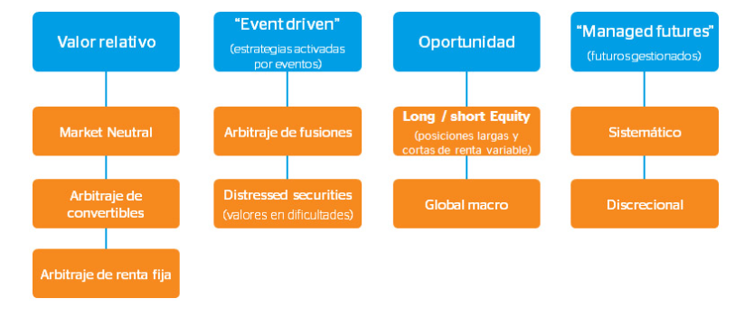

Año 2016
Examen diciembre
- ¿Qué tipo de política fiscal deberá implementar un gobierno para hacer frente a una recesión económica?
| I. Disminuir la deuda pública |
| II. Reducir los impuestos. |
| III. Incrementar el gasto público |
I y II.
II y III.
I y III.
I, II y III.
La respuesta correcta es la b.
La Política fiscal expansiva es un tipo de criterio de política fiscal que se caracteriza especialmente por dos rasgos principales: aumento del gasto público y reducción de la recaudación fiscal por medio de bajadas de impuestos. Como resultado se tiende al déficit o incluso puede provocar inflación.
- ¿Cuál de las siguientes afirmaciones respecto a la inflación y a la inversión es verdadera?
Los futuros son la mejor protección contra la inflación.
La inflación no es un problema si la estrategia de inversión es la de comprar y mantener.
La inversión en acciones no siempre protege contra la inflación.
La mejor cobertura contra la inflación son los depósitos a corto plazo (un mes).
La respuesta correcta es la c.
- Los interesados a los que se solicite datos personales deberán ser previamente informados:
De la existencia de un fichero o tratamiento de datos de carácter personal, de la finalidad de la recogida de éstos y de los destinatarios de de la información.
De las infracciones que prevé la Ley Orgánica de Protección de Datos.
De la imposibilidadd de rectificar los datos.
De la existencia d el Agencia Española de protección de Datos.
La respuesta correcta es la a.
Artículo 5. Derecho de información en la recogida de datos.
- Los interesados a los que se soliciten datos personales deberán ser previamente informados de modo expreso, preciso e inequívoco:
- De la existencia de un fichero o tratamiento de datos de carácter personal, de la finalidad de la recogida de éstos y de los destinatarios de la información.
…
Fuente: https://www.boe.es/buscar/doc.php?id=BOE-A-1999-23750
- ¿Cuáles son las características principales del producto denominado ETC?
| I. Es un fondo indexado. |
| II. Es una obligación cuyo principal sigue el comportamiento de un índice bursátil determinado |
| III: Está expuesto al riesgo de crédito |
| VI. El subyacente es siempre se refire a una comodity. |
Solamente la I.
Solamente la I y III.
Solamente la III y IV.
La I, II, III y IV.
La respuesta correcta es la b.
Los ETFs y los ETCs se engloban bajo el término genérico ETP (Exchange Trade Product – Producto Cotizado).
Los ETFs (Exchange Traded Funds) son Fondos Cotizados.
Los ETCs (Exchange Trade Commodities/Currencies) son materias primas/divisas cotizadas bajo la estructura de valor, no fondo. Normalmente llevan delante el adjetivo Commodity o Currency para diferenciar ambos activos.
Tanto los ETFs como los ETCs son replicadores de subyacentes representados por activos ó índices. Por lo tanto se trata de gestión pasiva sin llevar a cabo gestión activa de los activos (fondos tradicionales).
El ETF replica a un subyacente diversificado mientras que el ETC ofrece mayor flexibilidad dado que no requiere de la diversificación. Por ejemplo, en el sector de las materias primas a través de un ETC puedes replicar al petróleo Brent o a una cesta de energía mientras que con un ETF tendrías que replicar una cesta compuesta por la mayoría de las materias primas, ya que existen unos mínimos de diversificación.
También se diferencian en que los ETFs son fondos de inversión colectiva cotizados, mientras que los ETCs son titulizaciones, por lo tanto, pueden estar afectados por el riesgo de crédito y el riesgo de contrapartida. Estos productos tienen un riesgo extra sobre los ETFs, mientras que la operativa de estos dos productos es muy similar.
- El valor de rescate de una póliza de vida entera es:
La indemnización que recibirá el beneficiario cuando el asegurado muera.
La cantidad de dinero que recibirá el tomador si cancela la póliza.
Una cantidad igual a la prima bruta.
La cantidda de dinero que recibirá el tomador en caso de que viva el asegurado al término del contrato de seguro.
La respuesta correcta es la b.
El valor de rescate de una póliza de vida entera es la cantidad de dinero que recibirás si entregas la póliza, es una opción que queda abierta para todo el tiempo que estás pagando primas. Si decides renunciar a la póliza, la compañía de seguros deduce cargos de rescate, así como cualquier préstamo pendiente y el interés aplicado a los préstamos. Pierdes la cobertura de seguro de vida y también renuncias a la cuenta de inversión.
- ¿Cuál es el efectivo de una Letra del Tesoro, si el tipo de interés es del 3% anual y le quedan 45 días para su vencimiento?
996,35€.
996,26€.
996,30€.
996,32€.
La respuesta correcta es la b.
\[P_0=\frac{1.000}{(1+0,03\cdot\frac{45}{360})}=996,26\]
- En una subasta de Letras del Tesoro, ¿cuál de las siguientes afirmaciones NO es correcta?
El precio marginal es mayor que el precio medio.
El tipo de interés marginal es mayor que el tipo de interés medio.
A las peticiones no competititivas se les aplica el precio medio.
Las solicitudes mayores al precio medio, son adjudicadas al precio medio.
La respuesta correcta es la d.
Las peticiones presentadas se clasifican por orden descendente de precios.
Las subastas se resuelven generalmente según el sistema holandés modificado, combinando elementos de la subasta holandesa (de precio único) con elementos de la subhasta convencional (de precios múltiples).
El Secretario general del Tesoro, a propuesta de una Comisión formada por dos representantes del Banco de España y dos representantes de la Secretaría General del Tesoro y Política Financiera, determina el volumen nominal a emitir y, a partir de la última petición admitida, el precio mínimo aceptado, a partir del cual se calcula el tipo de interés marginal.
Se aceptan todas las peticiones al precio mínimo o por encima de éste, salvo que exista prorrateo (en tal caso, sólo afectará a las peticiones realizadas al precio marginal); las peticiones no competitivas se aceptan en su totalidad.
A partir de las peticiones competitivas aceptadas, se calcula el precio medio ponderado de la subasta, expresado en porcentaje del valor nominal y redondeado por exceso a tres decimales.
El precio de adjudicación de los valores se determina de la siguiente forma: las peticiones realizadas al precio mínimo se adjudican a este precio; las peticiones entre el precio mínimo y el precio medio ponderado redondeado pagarán el precio pujado; y las peticiones por encima del precio medio ponderado redondeado y las no competitivas pagarán el precio medio ponderado redondeado. En todos los casos es necesario incrementar el precio ex-cupón por el cupón corrido devengado hasta la fecha.
Por lo tanto, la respuesta incorrecta es la d, ya que las peticiones no competitivas son adjudicadas a un tipo de interés SUPERIOR al tipo de interés marginal (tipo medio).
- ¿Cuál de la siguientes expresiones se aproima más al concepto de covarianza?
La tendencia de un título a variar su cotización cuando el mercado está en equilibrio.
La varianza de un título o de una cartera con respecto al mercado.
La probabilidad de que un título sea más volátil que el mercado.
La relación estadística existente entre dos variables aleatorias.
La respuesta correcta es la d.
En probabilidad y estadística, la covarianza es un valor que indica el grado de variación conjunta de dos variables aleatorias respecto a sus medias.
- Entre las principales razones que hacen necesario pensar en complementar las pensiones públicas para la jubilación son:
| I. El superávit de la seguridad Social |
| II. La menor tasa de natalidad |
| III. La mayor esperanza de vida |
| IV. El incremento de la partida de gastos para las prestaciones por jubilación |
Solamente la I y la II.
Solamente la II y la IV.
Solamente la I, III y la VI.
La I, II, III y IV.
La respuesta correcta es la b.
Entre las principales razones que hacen necesario pensar en complementar las pensiones públicas para la jubilación son:
La menor tasa de natalidad
El incremento de la partida de gastos para las prestaciones por jubilación
- Por lo general, el objetivo de un fondo de inversión libre (hedge fund) es:
Superar su benchmark, pero con la menor volatilidad posible.
Superar su benchmark, pero con el menor tracking-error posible.
Obtener rentabilidades positivas independientemente de los movimientos del mercado.
Gestionar la beta de la cartera de una forma dinámica.
La respuesta correcta es la c.
Los Fondos de Inversión Libres (hedge fund), buscan lo que se denomina retorno absoluto independientemente de como se esté comportando el mercado, es decir que su objetivo es siempre obtener rentabilidades positivas.
Esta alternativa de inversión es considerada de alto riesgo por las estrategias que suelen emplear. Son apropiados en situaciones de baja rentabilidad de otros activos o mercados muy convulsos, de hecho como su propio nombre indica, los Hedge Funds (del inglés, fondos de cobertura) utilizan instrumentos y estrategias no permitidas en otro tipo de fondos de inversión con el fin de cubrirse de las oscilaciones del mercado.
- Una empresa presenta la siguiente información:
| Datos: |
|---|
| Beneficio por acción: 4,32 euros. |
| Dividendo por acción: 2,81 euros. |
| Precio de mercado: 62,44 euros. |
| Precio objetivo: 68,50 euros. |
¿Qué rentabilidad por dividendo tiene esta empresa?
6,92%
4,50%
6,31%
4,10%
La respuesta correcta es la b.
La rentabilidad por dividendo (RD) O también denominada comúnmente dividend yield (DY), es el cociente entre el dividendo y el precio, y se puede obtener de dos formas: usando datos de la empresa,
\[RD=\frac{Dv}{CB}\]
Donde,
\(Dv\), es el dividendo total repartido por la empresa.
\(CB\), es la capitalización bursátil de la empresa.
0 también usando datos de las acciones,
\[RD=\frac{DPA}{PPA}\]
Donde,
\(DPA\), es el dividendo por acción.
\(PPA\), es el precio de cotización.
En nuestro caso, aplicando la segunda fórmula tenemos que:
\[RD = \frac{DPA}{P_0}=\frac{2.81}{62.44}=0.0450(4.5\%)\]
- En la planificación financiera, al determinar la cantidad de dinero necesaria para cuando llegue la jubilación con el fin de complementar la pensión del sistema público, se deben tener en cuenta todos los siguientes factores excepto:
El salario actual y su tasa de crecimiento.
La tasa de interés libre de riesgo.
La pensión pública actual y su incremento anual esperado.
El tiempo que falta para la jubilación.
La respuesta correcta es la b.
La tasa libre de riesgo, es un concepto teórico que asume que en la economía existe una alternativa de inversión que no tiene riesgo para el inversionista. Este ofrece un rendimiento seguro en una unidad monetaria y en un plazo determinado, donde no existe riesgo crediticio ni riesgo de reinversión ya que, vencido el período, se dispondrá del efectivo. En la práctica, se puede tomar el rendimiento de los Bonos del Tesoro de Alemania o Estados Unidos como la inversión libre de riesgo, debido a que se considera que la probabilidad de no pago de un bono emitido por Estados Unidos es muy cercana a cero. Por lo general esta tasa de libre de riesgo es medida por los rendimientos de los bonos de los estados.
Por tanto, si atendemos a la definición de la tasa libre de riesgo podemos afirmar que NO es un factor a tener en cuenta en la planificación financiera, al determinar la cantidad de dinero necesaria para la jubilación con el fin de complementar la pensión del sistema público.
Por el contrario, tanto el salario actual como la pensión pública actual y el tiempo que falte para la jubilación sí serán factores a tener en cuenta a la hora de determinar la cantidad de dinero necesaria para la jubilación. Asimismo se tendra que hacer un seguimiento cuidadoso de la evolución de estas variables, ya que se trata de una planificación dinámica en función de la situación personal y familiar del ahorrador, la coyuntura económica y las posibles contingencias que tengan lugar a lo largo del periodo de acumualación.
- ¿Cuál es el método más utilizado para calcular la tasa de rentabilidad cuando se comparan los resultados obtenidos durante varios intervalos de tiempo por diferentes gestores de fondos de inversión?
La tasa interna de rentabilidad (TIR).
La tasa de rentabilidad ponderada.
La media aritmética de sus rentabilidades.
La tasa geométrica de rentabilidad (TGR).
La respuesta correcta es la d.
La Tasa Geométrica de Rentabilidad (TGR) (Time-weighted rate of return) es la rentabilidad del gestor de la cartera y es especialmente útil para medir la rentabilidad media de las operaciones financieras en las que las revalorizaciones o desvalorizaciones son acumulativas. Por tanto, esta medida es la adecuada y correcta en lugar de la rentabilidad ponderada o la media aritmética.
- Manteniendo constantes el resto de factores, ¿cuál de los siguientes bonos tendrá la mayor variación de precio debido a un cambio de los tipos de interés?
Bono A: vencimiento en 5 años y cupón cero.
Bono B: vencimiento en 8 años y cupón cero.
Bono C: vencimiento en 8 años y cupón del 6%.
Tanto B como C, dependiendo de si el tipo de interés suba o baje.
La respuesta correcta es la b.
Ante variaciones en los tipos de interés sabemos que los mayores cambios en el precio se dan con:
TIR bajas.
Cupones bajos.
Vencimientos largos.
Por lo tanto la mayor variación de precio debido a un cambio de los tipos de interés se dará en el “Bono B: vencimiento en 8 años y cupón cero.” ya que tiene el cupón más bajo (cupón cero) y el vencimiento más largo (8 años).
- El Principio de Transparencia del Código Ético de EFPA exige al asesor:
Revelar todo tipo de conflictos de intereses.
Actuar con la máxima integridad.
Incentivar la aceptación del Código Ético.
Reconocer los límites de su competencia profesional.
La respuesta correcta es la a.
Según el Principio de Transparencia del Código Ético de EFPA
Los Miembros siempre deben ser objetivos o explicar a los clientes las razones en los casos que la objetividad esté comprometida, salvo cuando resulte obvio para el cliente que el Asesor representa a su empresario en asuntos vinculados a esta representación.
- Un Miembro deberá mantener su objetividad y honestidad intelectual, debiendo revelar todo conflicto de intereses en el ejercicio de sus actividades profesionales. En aquellos casos en los que los compromisos con sus empresarios hagan imposible esa objetividad, se deberá explicar claramente la situación a los clientes. Cuando se desempeñen funciones de asesoramiento financiero, los Miembros deben informar al cliente si actúa de forma independiente o representa a una empresa.
- En un canal alcista, ¿daremos más importancia al soporte o a la resistencia?
A ambos. Soporte y resistencia son igual de importantes.
La rotura de la línea de soporte, dado que implica un cambio de tendencia.
La rotura de la línea de resistencia, dado que implica cambio de tendencia.
El precio objetivo tras la rotura será equivalente a la anchura del canal y a su longitud.
La respuesta correcta es la b.
Canales de precios: alcistas
Mientras los precios avanzan y estos se encuentran dentro del canal, la tendencia se considera alcista. El aviso de un cambio de tendencia se produce cuando los precios caen por debajo del soporte de la línea de tendencia principal. Una ruptura por encima de la resistencia de la línea del canal alcista indica una aceleración del avance.
En un canal alcista, algunos operadores buscan comprar cuando los precios alcanzan el soporte de la línea principal de tendencia. Por el contrario, buscan vender (o ponerse cortos) cuando los precios llegan a la resistencia de la línea de tendencia principal en un canal bajista del precio. Como con la mayoría de los patrones de precios, otros aspectos del análisis técnico debe utilizarse para confirmar las señales.
- Si la tasa de interés interbancaria a seis meses del dólar y la libra esterlina es 5,5% y 4,0% respectivamente, y el tipo de cambio spot GBP/USD es de 1,80 dólares por libra esterlina, el tipo de cambio a plazo GBP/USD a seis meses será:
GBP/USD 1,77.
GBP/USD 1,81.
GBP/USD 1,79.
GBP/USD 1,83.
La respuesta correcta es la b.
1º Para resolver esta pregunta tenemos que aplicar la siguiente fórmula, que muestra la relación existente entre los tipos de cambio a plazo y los tipos de cambio al contado:
\[{ F }_{ GBP/USD }={ S }_{ GBP/USD }\cdot \frac { 1+{ i }_{ USD }\cdot(\frac { n }{ Base } ) }{ 1+{ i }_{ GBP }\cdot(\frac { n }{ Base } ) } \]
Donde:
- \({ F }_{ GBP/USD }\) : tipo de cambio a plazo o forward de n días (meses, años, etc.) expresado de forma directa
- \({ S }_{ GBP/USD }\) : tipo de cambio a contado o spot expresado de forma directa
- \({ i }_{USD}\) : tipo de interés sobre el dólar.
- \({ i }_{GBP}\) : tipo de interés sobre la libra.
- \(n\) : número de días que trancurren del contrato a plazo.
2º Sustituimos los datos en la ecuación anterior,
\[ { F }_{ USD/EUR }=1,8\cdot \frac { 1+0,055\cdot (\frac { 6 }{ 12 } ) }{ 1+0.04\cdot (\frac { 6 }{ 12 }) }=1.813235 \]
- Cuando, como consecuencia del fallecimiento del asegurado, el cónyuge beneficiario percibe una cierta cantidad procedente de un contrato de seguro de vida, ¿tiene el beneficiario derecho a alguna reducción en el impuesto de sucesiones?
No tiene derecho a reducción alguna.
Tiene derecho a una reducción del 100% de la cantidad percibida.
Tiene derecho a una reducción del 100%, pero con límite.
Tiene derecho a una reducción del 75% de la cantidad percibida.
La respuesta correcta es la c.
En el caso de la tributación en el ISD de los seguros de vida en que las figuras de tomador y beneficiario no sean la misma persona, se produce un hecho imponible que está sujeto al Impuesto sobre Sucesiones y Donaciones (I.S.D.):
– Si la contingencia que origina el cobro de la prestación es la supervivencia del asegurado, el hecho imponible corresponde a la modalidad de Donaciones.
– Si la contingencia que origina el cobro de la prestación es el fallecimiento del asegurado, el hecho imponible corresponde a la modalidad de Sucesiones.
Respecto de las prestaciones de seguros liquidadas por Donaciones, debe señalarse que:
– La base imponible la constituye el importe del capital recibido o el valor actual de la renta.
– Si la prestación se percibe en forma de renta, la tributación por este Impuesto no impide que el beneficiario tribute anualmente en su IRPF por el RCM derivado del cobro de la renta, cuantificado aplicando el coeficiente de integración correspondiente (como renta inmediata).
Respecto de las prestaciones de fallecimiento, debe destacarse que:
– La base imponible la constituye el importe del capital recibido o el valor actual de la renta.
- Existe una reducción establecida por la normativa estatal específica para las prestaciones derivadas de contratos de seguro de vida cuando el beneficiario sea el cónyuge, ascendiente o descendiente del contratante fallecido. La cuantía estatal de esta reducción está limitada a 9.145.49 euros, pero este importe puede ser mayor si la Comunidad Autónoma de residencia fiscal del fallecido así lo ha previsto.1
– En caso de que la prestación se perciba en forma de renta, la tributación por este Impuesto es definitiva: el beneficiario de la renta no debe declarar la renta anual en el IRPF. Además, existe la posibilidad de fraccionar el pago del impuesto en el número de años de duración de la renta (temporal) o 15 años (vitalicia).
- Se presentan los siguientes datos sobre las compañías ABC y XYZ:
| ABC | XYZ | |
|---|---|---|
| Precio por acción | 25,78 | 38,85 |
| Fondos propios | 315.150.250 | 208.659.874 |
| Dividendo por acción | 1,35 | 1,76 |
| Beneficio después de impuestos | 47.650.250 | 35.698.745 |
| Precio objetivo | 34,2 | 42,2 |
| EBIT | 60.587.125 | 37.845.178 |
Según el criterio del ROE se prefiere ABC ya que tiene mayores beneficios después de impuestos.
Según el criterio de rentabilidad por dividendo se prefiere XYZ pues reparte un dividendo más alto.
A y B son correctas.
Ninguna de las opciones es correcta.
La respuesta correcta es la d.
Si calculamos el ROE para cada empresa, tendríamos para ABC,
\[ROE =\frac{BDI}{FP} =\frac{47650250}{315150250}=15.12\%\]
Para XYZ,
\[ROE = \frac{BDI}{FP} =\frac{35698745}{208659874}=17,11\%\]
En este caso por el criterio del ROE elegiríamos a la empresa XYZ.
Si calculamos la rentabilidad por dividendo (RD) para cada empresa, tendríamos para ABC,
\[RD=\frac{DPA}{PPA}=\frac{1.35}{25.78}=5.24\% \]
Para XYZ,
\[RD=\frac{DPA}{PPA}=\frac{1.76}{38.75}=4.53\%\] En este caso por el criterio del RD elegiríamos a la empresa ABC.
- ¿Aproximadamente, qué porcentaje de participación sobre la revalorización media podría ofrecer el siguiente fondo garantizado?
| Datos: |
|---|
| Patrimonio inicial Fondo: 85.000.000 euros. |
| Importe destinado a la compra de bonos de cupón cero y liquidez para |
| garantizar el 100% del patrimonio inicial: 65.500.000 euros. |
| Importe destinado a las comisiones de gestión y depósito, gastos de |
| auditoria, impuestos y otos gastos: 2.000.000 euros. |
La prima de las opciones estándar vale 25 euros para cubrir un nominal de 57 euros, y la prima de las opciones asiáticas vale 15 euros también para cubrir un nominal de 57 euros.
75%
80%
48%
70%
La respuesta correcta es la b.
Para calcular el porcentaje de participación en la revalorización media (opción call asiática), haremos:
- Dinero disponible para la compra de opciones,
\[D_{disponible}=85000000-65000000-2000000=18000000\] Es decir, que comprometemos 65.500.000 euros para la compra de bonos de cupón cero que nos permite garantizar el 100% del patrimonio inicial y comprometemos también 2.000.000 euros para las comisiones de gestión y depósito, gastos de auditoria, impuestos y otos gastos. De forma que, disponemos de 18.000.000 euros que podemos gastar en la participación sobre la revalorización media de un índice a través de la compra de opciones asiáticas.
Calculamos ahora el precio de la opción en %, de forma que podamos saber que porcentaje sobre el total del patrimonio inicial del fondo sería necesario para poder asegurarnos una revalorización del 100% de la subida del índice:
\[\%\,para\,cubrir\,100\%=\frac{15}{57}= 0.263158(26.31\%)\]
Que aplicado al patrimonio inicial del fondo serían 22.368.421.05 euros. Es decir que destinando este importe a la compra de opciones nos asegurarían una participación del 100% sobre la revalorización media del citado ídice; pero como tan sólo disponemos de 18.000.000 euros para invertir, la participación que este fondo garantizado podría ofrecer a sus participes será de:
\[\%^s/indice=\frac{18000000}{22368421.05}=0.8047(80.47\%)\]
- Si los precios de compra y venta para una operación spot son 1,3114 y 1,3125 dólares por euro, ¿cuántos dólares recibirá un empresario que tiene 200.000 euros y los quiere convertir en USD?
262.280,00 USD
262.500,00 USD
152.380,95 USD
152.508,77 USD
La respuesta correcta es la a.
Si los precios de compra y venta para una operación spot son 1,3114 y 1,3125 dólares por euro, me está diciendo que,
| CAMBIO | PRECIOS |
|---|---|
| 1 Dolar estadounidense = 0.7625 Euros | Precio de compra 1 Euro = 1,3114 Dolares |
| 1 Euro = 1.3114 Dolares | Precio de venta de 1 Euro = 1,3125 Dolares |
Por lo tanto, los dólares recibirá un empresario que tiene 200.000 euros y los quiere convertir en USD serán,
\[Dolares\,estadounidense=200000\cdot1.3114=262280\]
- Al hacer la valoración de un fondo por medio de un ranking, se debe tener en cuenta:
| I. La vocación inversora del fondo. |
| II. La rentabilidad obtenida en el último mes. |
| III. Las rentabilidades obtenidas en los tres últimos años. |
| IV. La volatilidad del fondo. |
I y III son correctas.
I, II, III y IV son correctas.
I, III y IV son correctas.
I y II son correctas.
La respuesta correcta es la a.
A la hora de establecer rankings, el análisis de las rentabilidades de los 3 últimos años como mínimo es fundamental, pues nos da una idea clara sobre la consistencia de un fondo (períodos inferiores no son tan relevantes). Además, no debemos olvidar la vocación inversora del mismo, pues comparar productos de diferente categoría no tiene sentido y nos podría llevar a conclusiones erróneas.
- El índice IFO representa:
La medición del clima empresarial en Europa.
Una encuesta realizada por la universidad de Francia sobre los empresarios.
El pulso del clima empresarial alemán.
El conocimiento de la confianza del consumidor alemán realizado a través de una encuesta.
La respuesta correcta es la c.
El Indicador IFO es un indicador avanzado de producción alemán. Se elabora una encuesta a 10.000 empresas alemanas acerca de las actividades presentes de cada empresa y de las actividades previstas en los próximos seis meses. Si la tendencia es alcista, tiende a interpretarse como una recuperación de la economía, y viceversa. Aunque es un indicador alemán, su interpretación suele extrapolarse al resto de la economía europea. Este indicador se elabora de forma mensual.
- A propósito de las normas GIPS (Global Investment Performance Standards), ¿cuál de las siguientes afirmaciones es correcta?
Se aplican por los gestores para evaluar más eficazmente las características de los inversores potenciales.
Constituyen los requisitos mínimos obligatorios de transparencia definidos por INVERCO.
Se trata de principios que los gestores aplican para asegurar una representación correcta y una completa información relativa a la propia performance de la cartera.
Son criterios definidos y aplicados por la CNMV en su labor de supervisión de los gestores de fondos de inversión.
La respuesta correcta es la c.
El propósito de los Global Investment Performance Standards (GIPS) es el establecimiento de estándares para el cálculo y la presentación de rendimientos de inversión reconocidos internacionalmente. Intentando asegurar así una representación correcta y una completa de la información relativa a la propia performance de la cartera.
- De acuerdo con el teorema de la inmunización financiera, un inversor debe invertir en una cartera de bonos cuya duración media sea:
Igual a la esperanza de vida del inversor.
Superior a su horizonte temporal de inversión.
Inferior a su horizonte temporal de inversión.
Igual a su horizonte temporal de inversión.
La respuesta correcta es la d.
El teorema de la inmunización financiera es la estrategia de gestión de carteras de renta fija que asegura que los cambios en los tipos de interés no afectarán al valor de la cartera de títulos. La inmunización trata de eliminar la sensibilidad del precio a la variación de los tipos de interés a través de equilibrar la Duración de Macaulay de la cartera de activos con la duración de la cartera de pasivos.
Según el teorema de inmunización una cartera de bonos está inmunizada del riesgo de tipo de interés si la duración de la cartera es igual al horizonte temporal deseado de la inversión.
- De las siguientes parejas de factores, ¿cuál es la que más influye en la confección de un fondo de inversión garantizado?
La volatilidad y el banco que aporta la garantía.
El subyacente y la volatilidad del mismo.
La volatilidad y los tipos de interés.
Los tipos de interés y el vencimiento del producto.
La respuesta correcta es la c.
Tipos de interés elevados, nos permitirán destinar un mayor importe al derivado. Al mismo tiempo, una volatilidad baja nos permitiría pagar primas más baratas.
- Un inversor con expectativas alcistas en el mercado de renta variable español compró el 18 de junio un contrato de futuros sobre el IBEX–35 vencimiento julio a 15.080 puntos. Hoy 29 de junio, el precio de mercado de dicho contrato ha subido un 1,28% y decide cerrar su posición. ¿Cuál será el resultado absoluto de la operación y la rentabilidad simple obtenida, si el depósito de garantía aportado fue de 9.000 euros?
Beneficio de 1.930 euros y rentabilidad del 21,44%
Beneficio de 193 euros y rentabilidad del 2,14%
Pérdida de 1.930 euros y rentabilidad del -21,44%
Pérdida de 193 euros y rentabilidad del -2,14%
La respuesta correcta es la a.
Para resolver esta pregunta vamos a plantear primero el flujo de caja en el momento final de la operación (valor final):
\[V_f=9000+\left[P_{liquidacion}\cdot\%(revalorizacion)\cdot Multiplicador\right]\]
Donde,
\(P_{vencimiento}\), será el preció a vencimiento del IBEX–35(julio a 15.080 puntos).
\(\%(revalorizacion)\), el precio de mercado del contrato (en este caso subido un 1,28%).
\(Multiplicador\), será la cantidad por la que se multiplica el índice IBEX 35 para obtener su valor monetario. Por tanto, cada punto del índice IBEX 35 tiene un valor de 10 euros.
Luego, si sustituimos y calculamos tenemos que:
\[V_f=9000+\left[15080\cdot 1.28\% \cdot 10 \right]=10930.24\] El valor final es de \(10.930,24\) y el beneficio en euros es de,
\[B^o=V_f-garantia=10930.24-9000=1930.24\] Y la rentabilidad simple de,
\[R_{simple}=\frac{V_f-garantia}{garantia}=\frac{10930.24-9000}{9000}=0.214471(21.44\%)\]
- En el caso de un trabajador por cuenta ajena, ¿cuál de las siguientes cuestiones NO podemos considerar como pregunta básica al momento de planificar para la jubilación?
¿Cuándo empezar a ahorrar?
¿Cuánto dinero será necesario?
¿Cuánto cotizar a la Seguridad Social?
¿Cuándo espera jubilarse?
La respuesta correcta es la c.
La cuota a cotizar a la Seguridad Social NO la podemos considerar como pregunta básica a la hora de planificar para la jubilación ya que estas han de ser la establecidas anualmente para las distintas contingencias y categorías profesionales de los trabajadores (grupos de cotización).
- Una cartera de renta fija cuyo valor de mercado es hoy de 20 millones de euros presenta una duración corregida o modificada igual a 7,5. Si el tipo de interés se espera que aproximadamente caiga en un 0,5%, entonces:
La rentabilidad adicional de la que nos beneficiamos si se confirman las expectativas es aproximadamente de un 3,75%.
Obtendremos un beneficio aproximado de 750.000 euros.
El valor de mercado de la cartera, tras la variación de los tipos de interés será aproximadamente de 20.850.000 euros.
Son correctas las respuestas a y b.
La respuesta correcta es la d.
La rentabilidad adicional de la que nos beneficiamos si se confirman las expectativas es aproximadamente de,
\[\frac{\Delta P}{P}\simeq \left(-D_{corregida}\right)\cdot\Delta TIR=(-7.5)\cdot (-0.005)=0.0375(3.75\%)\]
La Duración corregida también nos sirve para estimar el efecto en precio de variaciones en la TIR la podemos expresar como,
\[P_1\simeq P_0\cdot\left[1+((-D_{corregida})\cdot\Delta TIR)\right]\]
donde,
\(P_1\), es el precio estimado del bono ante una variación de la TIR.
\(P_0\), es el precio actual del bono .
\(D_{corregida}\), es la duración corregida.
Que al sustituir los valores y calcular nos da un resultado de,
\[P_1\simeq 20000000\cdot\left[1+((-7.5)\cdot0.005\right]=20750000\] Luego,
\[B^o=V_f-V_i=20750000-20000000=750000\] Obtendremos un beneficio aproximado de 750.000 euros.
- Utilizan los instrumentos derivados para realizar apuestas direccionales, y los podemos dividir en sistemáticos y discrecionales, ¿de qué estrategia utilizada por los fondos de inversión libre (hedge funds) se trata?
Long/short Equity.
Managed Futures (CTA).
Arbitraje de Renta Fija.
Arbitraje de Fusiones.
La respuesta correcta es la b.
La estrategia CTA o Commodities Trading Advisor, trata de una forma de inversión alternativa basada en los futuros y opciones gestionados y fondos sobre este tipo de productos derivados.
La estrategia adopta un enfoque sistemático o discrecional de la inversión en contratos de futuros en los mercados globales de bonos, renta variable, futuros sobre commodities y divisas. Las estrategias sistemáticas se apoyan en la aplicación de análisis estadísticos para tomar posiciones de inversión, mientras que las estrategias discrecionales se apoyan en el juicio del gestor de inversiones.
- Una determinada empresa cotiza a 60 euros y tiene un beneficio por acción de 5 euros. El PER medio del sector es de 10. ¿Qué podemos deducir de estos datos?
Esta empresa cotiza con prima respecto al sector.
La rentabilidad por dividendo de la empresa es del 8,33%.
La empresa cotiza a descuento con respecto al sector.
El inversor tardara 6 años en recuperar su inversión.
La respuesta correcta es la a.
Sabemos que el ratio PER es:
\[PER=\frac{PPA}{BPA}\] Donde,
\(PPA\), es el precio por acción (precio de cotización).
\(BPA\), es el beneficio por acción.
Luego si sustituimos los valores del precio de cotización (precio actual) y el beneficio por acción en la fórmula anterior tenemos que,
\[PER=\frac{PPA}{BPA}=\frac{60}{5}=12\] Y rentabilidad por dividendo (yield) de la empresa viene dada por,
\[RD=\frac{DPA}{PPA}\]
Donde,
\(DPA\), es el dividendo por acción.
\(PPA\), es el precio por acción (precio de cotización).
Que, al desconocer el dividendo por acción no la podemos calcular.
El PER nos dice cuántas veces está incluido el beneficio en el precio, o, en otras palabras, cuántos años de beneficio actual estamos pagando en el precio. En este caso, estamos pagando 12 años de beneficio actual. Por lo tanto podemos afirmar que es falso que el inversor tardara 6 años en recuperar su inversión.
Finalmente, como el PER medio del sector es de 10 y el de la empresa 12 podemos deducir que esta empresa cotiza con prima respecto al sector.
- La Utilización de la Capacidad Productiva (UCP) es un porcentaje de la capacidad instalada total. En cuanto a este indicador es posible afirmar que:
Si se encuentra entre el 80% y 85%, se esta en plena utilización de la capacidad productiva.
Si es inferior a 100%, independientemente de la cifra, indica infrautilización de la capacidad productiva, y la economía estaría desperdiciando recursos.
Si está por debajo del 80% indica recesión.
No es posible identificar la plena utilización de la capacidad si no se conoce la productividad.
La respuesta correcta es la a.
La Utilización de la Capacidad Productiva (UCP) es un indicador del grado de utilización de las plantas y la maquinaria, el cual refleja el potencial de producción del país. Cubre los sectores Industrial, Minería, Electricidad y Energía. Si, éste se encuentra entre el 80% y 85%, se consideraque el potencial de producción del país esta en plena utilización de su capacidad productiva.
- ¿Con cuál de los siguientes factores NO está positivamente correlacionado el precio de una opción call sobre una acción?
El precio de la acción.
El tiempo a vencimiento.
La volatilidad de la acción.
El precio de ejercicio.
La respuesta correcta es la d.
| Los factores que determinan el valor de una opción ante un aumento de: | Call | Put |
|---|---|---|
| Precio de ejercicio | - | + |
| Cotización de la acción subyacente | + | - |
| Volatilidad de la acción subyacente | + | + |
| Tipo de interés | + | - |
| Tiempo a vencimiento | + | +/- |
| Dividendos a pagar hasta vencimiento | - | + |
| Pago del dividendo | nulo | nulo |
Por lo tanto, el precio de ejercicio NO está positivamente correlacionado el precio de una opción call sobre una acción.
- En cuanto a los fondos de inversión inmobiliaria, ¿cuál de las siguientes afirmaciones es correcta?
Pueden invertir en todo tipo de inmuebles en régimen de alquiler.
No requieren de coeficiente de liquidez.
Debe garantizar la posibilidad de reembolso al partícipe al menos una vez al año.
Las comisiones aplicables son libres.
La respuesta correcta es la c.
Los fondos de inversión mobiliaria se abonan en un plazo máximo de tres días hábiles. Sin embargo, los fondos de inversión inmobiliaria suelen tener una menor liquidez, la normativa dice que como mínimo debe poderse reembolsar una vez al año. Además en el folleto se establece un preaviso de 10 días en los casos en los que se solicite un reembolso por una cantidad superior a 300.000 euros.
- Cuando una acción toca su nivel de resistencia, de acuerdo con el análisis técnico, ¿qué se espera que ocurra?
La cantidad de personas que quieran vender la acción se incrementará bastante.
La cantidad de personas que quieran vender la acción se reducirá bastante.
La cantidad de personas que quieran comprar la acción se incrementará bastante.
El volumen de negociación se mantendrá constante.
La respuesta correcta es la a.
Habitualmente cuando la cotización rompe una resistencia, tiene una rápida y corta subida, seguida de una caída hasta las cercanías de la resistencia y es después de esta caída cuando se produce el movimiento alcista definitivo. El descenso antes del alza definitiva se conoce como pull back y es el momento que se debe aprovechar para comprar.
- Una sociedad holding, y que por tanto tiene al menos una participación en el capital de otra sociedad operativa (más del 5% de los derechos de voto):
Puede percibir dividendos que en la mayoría de casos estarán exentos de tributación, en la medida que se podrá aplicar la deducción por doble imposición del cien por cien.
Se considera que es una sociedad “operativa”, esto es, que realiza una actividad empresarial de gestión y dirección de participaciones.
Las acciones y/o participaciones de los socios pueden alcanzar los beneficios fiscales de la empresa familiar (exención en el Impuesto sobre el Patrimonio y reducción del 95% en el Impuesto sobre Sucesiones).
Todas las anteriores.
La respuesta correcta es la d.
Las ventajas fiscales de un holding son significativas y se aplican a diferentes impuestos, siempre que se cumplan los requisitos exigidos en cada uno de ellos:
Se evita la doble imposición en el Impuesto sobre Sociedades (art. 21 nueva LIS): ni la distribución del beneficio de las sociedades filiales a la matriz, ni la venta de las participaciones que la matriz ostenta sobre las filiales genera renta gravable en la primera, por aplicación de la exención prevista para evitar la doble imposición; y ello, con independencia de que la filial se encuentre en domiciliada en territorio nacional o en el extranjero;
Posibilidad de optar por tributar a través del régimen de grupo de consolidación en el IS (art. 55 y ss LIS): mediante la aplicación de este régimen, el contribuyente es el grupo como unidad, y el responsable del pago de la deuda tributaria es la sociedad dominante; asimismo, este régimen permite la compensación de los beneficios generados en unas sociedades con las eventuales pérdidas que se produzcan en otras.
Reducciones en el Impuesto sobre Sucesiones y Donaciones (art. 20 LISD): en caso de sucesión mortis causa, y cumpliéndose los requisitos establecidos al efecto, la incorporación del valor de las participaciones de entidades que constituyan una actividad económica en la base imponible del impuesto estará reducida en un 95% (cantidad que puede aumentar al 99% en determinadas comunidades autónomas).
Reducciones en el Impuesto sobre el Patrimonio (art. 4 LIP): cumpliendo los requisitos exigidos, las participaciones en entidades que desarrollen actividades económicas en las que esté involucrado de manera efectiva el titular de las mismas, ejerciendo funciones de dirección, estará exenta del Impuesto sobre el Patrimonio.
- Adquirimos un bono a tres años de vencimiento, con cupón del 4,25%, a una TIR del 3,50%. La semana siguiente los tipos se ubican en el 4% (para simplificar así se quedarán hasta el vencimiento). La tasa de rentabilidad efectiva anual que esperamos obtener al vencimiento será:
3,65 %
3,52 %
4,00 %
4,24 %
La respuesta correcta es la b.
El bono generará los siguientes flujos de caja (cash-flow):
Dentro de 1 año: 4,25
Dentro de 2 años: 4,25
Dentro de 3 años: 104,25
El bono lo hemos adquirido por:
\[P_0=\frac{4.25}{\left(1+0.035\right)}+\frac{4.25}{\left(1+0.035\right)^2}+\frac{4.25}{\left(1+0.035\right)^3}=102.101228\] Si capitalizamos los cupones al nuevo tipo de interés, al final de la inversión tendremos:
\[C_34.25\cdot(1+0.04)^2+4.25(1+0.04)^1+104.25=113.2668 \] Por lo tanto invertimos 106,937198 y en 3 años tenemos 113,2668, por lo tanto podemos calcular la tasa de rentabilidad efectiva obtenida:
\[V_f=V_0\cdot(1+TRE)^n\] Donde,
\(V_f\), es el valor final e igual a 113.2668.
\(V_0\), es el valor inicial e igual a 102.101228.
Ahora bastará despejar la TRE y calcular,
\[TRE=\left(\frac{113.2668}{102.101228}\right)^\frac{1}{3}-1=0.0351991(3.52\%)\]
- La última etapa en un proceso de planificación financiera personal es:
Implementar una estrategia para la consecución de los objetivos.
Establecer un plan financiero.
Definir los objetivos.
Revisión del plan.
La respuesta correcta es la d.
El asesoramiento no sirve de nada, si las estrategias no se revisan a lo largo del tiempo. Por lo que periódicamente se ha de hacer un seguimiento para supervisar que se están cumpliendo los objetivos previstos y en caso necesario reconducir la situación para poder alcanzarlos.
- De acuerdo con el Capital Asset Pricing Model (CAPM), un activo que esté infravalorado se ubicará:
Por encima de la Security Market Line (SML).
Por debajo de la Security Market Line (SML).
Justo a la altura de la Security Market Line (SML).
Son correctas A, B y C; dependiendo si la beta del activo es mayor, menor o igual a uno.
La respuesta correcta es la a.
De acuerdo con el Capital Asset Pricing Model (CAPM), un activo que esté infravalorado se ubicará por encima de la Security Market Line (SML). Y, un activo que esté sobreavalorado se ubicará por encima de ésta.
- Una compañía que cotiza actualmente a 50 euros, repartirá el próximo ejercicio un dividendo por acción de 1 euro, el cual se incrementará un 2% anual. Si el coste de capital es del 5% y la tasa libre de riesgo del 3%, ¿sería interesante invertir en esta compañía?
Sí, la compañía está infravalorada.
No, la compañía está sobrevalorada.
Sí, pero solo sí varia la tasa libre de riesgo.
No, pues está correctamente valorada.
La respuesta correcta es la b.
Aplicamos el modelo de Gordon-Shapiro,
\[P_0=\frac{d_1}{k-g}\]
Donde,
\(P_0\), es el valor teórico de la acción.
\(d_0\), es el dividendo del periodo actual.
\(k\), es la tasa de descuento del mercado.
\(g\), es la tasa de crecimiento de los dividendos.
Sustituimos y calculamos,
\[P_0=\frac{1}{0.05-0.02}=33.33\]
Luego como el valor teórico actual de la acción es de 33,33 euros y ésta cotiza a 50 euros, NO sería interesante invertir en esta compañía.
- El alfa de una cartera:
Es una alternativa a la beta para cuantificar el riesgo sistemático.
Cuantifica la rentabilidad neta de costes de transacción.
Cuantifica la capacidad del gestor para proporcionar un extra de rentabilidad con respecto al mercado.
Indica las expectativas de crecimiento del precio a largo plazo.
La respuesta correcta es la c.
Puede decirse que es la mejor forma de medir la destreza de un gestor y la de su equipo. Representa el peor o mejor comportamiento de un fondo respecto a su índice de referencia (o benchmark). La definición clásica es algo confusa, pero viene a decir que un alfa positivo significa que el gestor y su equipo están añadiendo valor a la cartera gracias a su destreza. Cuanto mayor es el alfa, mayor es la incidencia del gestor sobre el fondo. Un alfa positivo es un atributo sumamente apreciado.
El alfa, no es una alternativa a la beta ya que la beta examina la sensibilidad de un fondo con respecto a los movimientos del mercado. Una beta igual a 1 significa que el fondo se moverá en consonancia con el mercado. Una beta mayor que 1 significa que el fondo es “más” sensible a los movimientos del mercado.
Las respuestas b y d no tienen sentido si las relacionamos con el alfa ya que ni la rentabilidad neta de costes de transacción, ni las expectativas de crecimiento del precio a largo plazo son medidas de performance de una cartera.
- Se dispone de 1.000 euros para invertir en dos activos. Un activo con riesgo del que se espera una rentabilidad del 18% anual con una desviación estándar del 20%, y un activo sin riesgo que presenta una rentabilidad del 4% anual. ¿Qué cantidad debería invertirse en el activo con riesgo para que la cartera tenga una volatilidad del 15%?
750 euros.
500 euros.
650 euros.
800 euros.
La respuesta correcta es la a.
En este caso particular nos piden calcular el riesgo de la cartera \(p\), que está formada por un activo arriesgado (el activo \(i\)) y un activo sin riesgo \(R_f\).
Bien, pues como nosotros sabemos que el riesgo de una cartera con un sólo activo arriesgado será solamente el riesgo de ese mismo activo (ya que el otro activo que forma esta cartera NO tiene riesgo), bastará con plantear la siguiente ecuación:
\[\sigma_p=w_i\cdot\sigma_i\] Donde,
\(\sigma_p\), es el riesgo de la cartera (conocido e igual al 15%).
\(w_i\), es la ponderación del activo arriegado de la cartera (desconocida).
\(\sigma_i\), es el riesgo del activo arriesgado (conocido e igual al 20%).
Que al despejar la ponderación del activo \(i\) quedará,
\[w_i=\frac{\sigma_p }{\sigma_i}\] Ahora sustituimos y resolvemos,
\[w_i=\frac{0.15 }{0.20}=0.75(75\%)\] Por lo tanto, la cantidad debería invertirse en el activo con riesgo para que la cartera tenga una volatilidad del 15% será de 750 euros \((0.75\cdot 1000)\).
- ¿Cuál es la rentabilidad esperada de un Fondo de Renta Variable española altamente correlacionado con el IBEX–35, que está totalmente cubierto con futuros sobre el IBEX-35?
Cero.
La rentabilidad esperada del IBEX –35.
La rentabilidad del activo sin riesgo.
La TIR del bono a 10 años.
La respuesta correcta es la c.
Si tienes un fondo de renta variable totalmente cubierto, no ganarás ni perderás por los movimientos del mercado por lo que, a priori, puede pensarse que no habrá rentabilidad pero, esto es erróneo.
Al tener dos posiciones, una larga (fondo) y otra corta (la del futuro vendido) el resultado neto será la diferencia entre los precios de ambas. Para poder hacer la diferencia, calcularemos los precios de ambas magnitudes. Por partes, el razonamiento sería:
- El patrimonio del fondo habrá aumentado en x% como consecuencia de los movimientos del mercado. Es decir, las acciones del Ibex suben (no necesitamos el dato para responder a esta pregunta).
2.El precio del futuro, sin embargo, tiene más factores a tener en cuenta. Se calcula de la siguiente forma:
\[F= S \cdot ( 1+ i\cdot \frac{n}{360})\]
Atendiendo a esta fórmula y teniendo en cuenta que estamos en el momento del vencimiento, el precio del futuro tendrá como variables:
\(S\), es el precio del subyacente en el momento del vencimiento (precio del conjunto de acciones del Ibex sobre los que establecemos la posición) que será igual que el precio del fondo.
\(i\), la rentabilidad del activo libre de riesgo
\(n\), 1 día (se entiende que es el día anterior a la liquidación)
El resultado nos dirá que el precio del futuro será muy próximo al del subyacente, únicamente aumentado por la rentabilidad del activo libre de riesgo a 1 día.
Si hacemos la diferencia que comentábamos al principio tendremos:
Resultado = Precio del fondo (cotización del Ibex) - Precio del futuro (Cotización del Ibex multiplicada por (1 + i x 1/360))
Resultado neto de la operación (se anulan las variables “Cotización del Ibex”) = i/360 (la rentabilidad del activo libre de riesgo)
- La planificación financiera personal básicamente consiste en:
Decirle al cliente donde invertir.
Acertar en el timing de las inversiones del cliente.
Integrar las distintas estrategias para cada objetivo financiero del cliente.
Un producto de inversión.
La respuesta correcta es la c.
La planificación financiera personal (o financial planning) consiste en en analizar la situación actual de las finanzas personales (o familiares), y fijarse ciertos objetivos financieros y personales. Para alcanzar cada uno de los objetivos financieros previamente fijados el asesor ha de integrar distintas estrategias que le permitan la consecución de los mismos minimizanzo los riesgos y maximizando la rentabilidad, en la medida de lo posible.
- Un fondo de inversión tiene un ratio de Sharpe de 0,93 con una volatilidad del 26,2%. Si la beta es 1,06; su ratio de Treynor será:
No se puede calcular, pues necesitamos conocer la rentabilidad del fondo y la rentabilidad del activo libre de riesgo.
0,23.
0,51.
3,55.
La respuesta correcta es la b.
En primer lugar vamos a calcular el exceso de rentabilidad (o premio por riesgo) \(E_p-R_f\) a partir del ratio de Sharpe:
\[S_p=\frac{E_p-R_f}{ \sigma_p}\]
Donde,
\(S_p\), es ratio de Sharpe.
\(E_p\), es la rentabilidad esperada de la cartera \(p\).
\(R_f\), es la rentabilidad del activo sin riego.
\(\sigma_p\), es la volatilidad (riesgo) de la cartera \(p\).
Que al despejar el exceso de rentabilidad \(E_p-R_f\) se tiene que,
\[(E_p-R_f)=S_p\cdot \sigma_p\]
Sustituimos los datos del enunciado y calculamos,
\[(E_p-R_f)=0.93\cdot 0.262=0.24366\]
Ahora que conocemos el exceso de rentabilidad (o premio por riesgo) \(E_p-R_f\), aplicamos la fórmula del ratio de Treynor:
\[T_p=\frac{E_p-R_f}{ \beta_p}\]
Donde,
\(S_p\), es ratio de Sharpe.
\(E_p\), es la rentabilidad esperada de la cartera \(p\).
\(R_f\), es la rentabilidad del activo sin riego.
\(\beta_p\), es la beta (sensibilidad a los movimientos del mercado) de la cartera \(p\).
Sustituimos y calculamos,
\[T_p=\frac{0.24366}{1.06}=0.2298\] Luego, su su ratio de Treynor será de 0.23.
- Un gestor de carteras que administra un fondo de inversión de renta variable española altamente diversificado, decide cubrirlo con futuros sobre el IBEX- 35. Determinar el número de contratos según los datos siguientes. Supóngase que el gestor mantiene su posición hasta el vencimiento del contrato:
| Datos: |
|---|
| Valor nominal de la cartera de renta variable 13.800.000 euros |
| Valor efectivo de la cartera de renta variable 18.300.000 euros |
| IBEX-35 contado 14.715,8 |
| Futuro IBEX-35 vto. próximo 14.760,0 |
| Beta global de la cartera (altamente fiable) 1,12 |
La respuesta correcta es la d.
Calculamos el ratio de cobertura con la siguiente fórmula:
\[RC=-\frac{Valor\ efectivo\ de\ la\ cartera\cdot\ \beta_{cartera}}{Indice\ al\ contado\cdot multiplicador}\]
\[RC=-\frac{18300000\cdot1.12}{14715.8\cdot10}=-139.27\simeq 139 \]
- Marisa contrató hace un mes un seguro de vida que cubre el riesgo de fallecimiento de su esposo. El beneficiario del seguro para caso de fallecimiento es su hija Matilde. ¿Qué tratamiento fiscal corresponderá al cobro de la prestación para caso de fallecimiento por el beneficiario?
Tributación por el Impuesto sobre la Renta de las Personas Físicas como rendimiento del capital mobiliario.
Tributación en el Impuesto Sobre Sucesiones y Donaciones, modalidad adquisición gratuita “mortis causa”.
Tributación por el Impuesto sobre Sucesiones y Donaciones, modalidad adquisición gratuita “inter vivos”.
Ausencia de tributación en el Impuesto sobre Sucesiones y Donaciones por tratarse de una renta obtenida por un descendiente.
La respuesta correcta es la c.
Las prestaciones derivadas de un contrato de seguro pueden ser objeto de diferentes impuestos, dependiendo de la contingencia producida y de los elementos personales del mismo.
Cuando el tomador del seguro no es la misma persona que el beneficiario, la tributación corresponde al Impuesto de Sucesiones y Donaciones.
Cuando el tomador del seguro sí es la misma persona que el beneficiario, la tributación corresponde al IRPF.
En este caso, el tratamiento fiscal que corresponderá al beneficiario por el cobro de la prestación (debido al fallecimiento) será la tributación por el Impuesto sobre Sucesiones y Donaciones. La duda puede surgir en la modalidad, pero en este aspecto la ley es clara y dice que las transmisiones se considerarán inter vivos cuando ésta se produce en vida del donante. Y, como Marisa (la donante) sigue en vida el hecho imponible será considerado una adquisición gratuita “inter vivos”.
- La Línea del Mercado de Valores (Security Market Line -SML-) pone en relación la rentabilidad de cada activo con:
La desviación típica del activo.
La beta del activo.
El riesgo especifico del activo.
El índice de mercado donde cotiza.
La respuesta correcta es la b.
La línea del mercado de valores (también conocida por su nombre en inglés, security market line, de la que derivan las siglas SML) es la representación del Modelo de valoración de activos financieros (CAPM). Representa la tasa esperada de retorno de un valor individual \(E\,(R_m)\) en función del riesgo sistemático (no diversificable) \(\beta_i\).
- Una cartera que tiene un coeficiente beta de 0,8 ha obtenido una rentabilidad del 19% con una volatilidad del 23%, mientras que el índice de referencia ha obtenido una rentabilidad del 14%, con una volatilidad del 15%. Calcular el tracking-error de dicha cartera.
8,00%
19,62%
3,85%
15,35%
La respuesta correcta es la b.
Si recordamos una de las dos la fórmulas que tenemos para calcular el tracking-error de una cartera,
\[\sigma_{\alpha,p}=\sqrt{\sigma_p^2-\beta_p^2\cdot \sigma_m^2}\]
Donde,
\(\sigma_{\alpha,p}\), es la desviación típica (volatilidad o riesgo) del alpha de Jensen respecto de la cartera \(p\).
\(\sigma_p^2\), es la varianza de la cartera \(p\).
\(\beta_p^2\), es la beta al cuadrado de la cartera \(p\).
\(\sigma_m\), es la varianza al cuadrado de la cartera de mercado (o benchmark) \(m\).
Bastará con sustituir \(\sigma_p^2=0.23^2\), \(\beta_p^2=0.8^8\) y \(\sigma_m=0.15^2\) en la expresión anterior y calcular,
\[\sigma_{\alpha,p}=\sqrt{0.23^2-0.8^2\cdot 0.15^2}=0.19621(19.62\%)\]
- ¿Cuál de las siguientes afirmaciones es correcta?
La evolución del IPC estará determinada, en parte, por lo que haya ocurrido unos años antes al Índice de Precio Industrales (IPI)
La evolución del IPI estará determinada, en parte, por lo que haya ocurrido unos años antes al IPC.
La evolución del IPC estará determinada, en parte, por lo que haya ocurrido en el último mes al IPI.
La evolución del IPC estará determinada, en parte, por lo que haya ocurrido el último mes al IPC.
La respuesta correcta es la c.
Según el INE, el Índice de Precios Industriales (IPRI) mide la evolución mensual de los precios de los productos fabricados por la industria y vendidos en el mercado interior en la primera etapa de su comercialización. El IPRI recoge los precios de venta a salida de fábrica obtenidos por los establecimientos industriales en las transacciones que éstos efectúan, excluyendo los gastos de transporte, comercialización, IVA y otros impuestos indirectos facturados.
El Índice General de Precios Industriales (IPRI) se considera un indicador adelantado de unos tres meses apróximadamente del Índice de Precios al Consumo (IPC).
Examen septiembre
- El perfil de riesgo del inversor puede cambiar a lo largo de su vida debido a:
| I. Cambios en la legislación fiscal |
| II. Cambios en la situación económica y personal del inversor |
| III. Cambios en el entorno económico |
Solamente la II.
Solamente la II y la III.
Solamente la III.
La I, II y III.
La respuesta correcta es la b.
El perfil de riesgo de un inversor podría variar debido a los cambios en la situación laboral, personal o familiar y también ante cambios en el entorno económico. Mientras que los cambios en la fiscalidad no son un factor que determine el perfil de riesgo de un inversor.
- De la encuesta de población activa de un país obtenemos los siguientes datos:
Población en edad de trabajar: 30.000.000
Población activa: 20.656.000
Población ocupada: 17.678.000
Calcular la tasa de empleo:
80,0%
58,92%
68,85%
57,8%
La respuesta correcta es la b.
La Tasa de Ocupación o también conocido como Tasa de Empleo, mide el cociente entre el número de personas ocupadas comprendidas en el rango de edad desde los 16 años hasta los 64 años, y la población total que comprende el mismo rango de edad (Población en edad de trabajar (PET)).
\[Tasa\ de\ empleo=\frac{Número\ de\ ocupados}{Población\ en\ edad\ de\ trabajar}\] En nuestro caso, la Tasa de Empleo es de:
\[Tasa\ de\ empleo=\frac{17.678.000}{30.000.000}=58,92\%\]
El Instituto Nacional de Estadística (INE), define el término ocupados como aquellas personas de 16 o más años que tienen un trabajo por cuenta ajena o que ejercen una actividad por cuenta propia.
Una de las utilidades más importantes de esta tasa estadística o porcentaje, es la de informar acerca de la ocupación de las mujeres, para el desarrollo de la mujer en el sector profesional y para mejorar la perspectiva de realización de éstas en el ámbito laboral. Con el paso de los años, la tasa de ocupación de la mujer se ha ido incrementado en países desarrollados, acercándose a la de los hombres, logrando maximizar la igualdad social entre mujeres y hombres. Este hecho, supone un hito muy importante en el grado de civilización y respeto en un país, además de liderazgo en derechos y deberes fundamentales frente a otros países dónde no ocurre lo mismo.
Por otro lado, los datos de tasa de ocupación, se utilizan cuando baja la tasa de paro, con la idea de que exista una mejoría en el ámbito laboral
- ¿Cuál es la TAE de un préstamo de 15.000 euros que hay que devolver al año de su concesión mediante un solo pago, pactado a un tipo de interés nominal del 4,50% capitalizable mensualmente y con una comisión de apertura del 0,50%?
4,95%
5,12%
5,87%
6,11%
La respuesta correcta es la b.
En primer lugar vamos a calcular el tipo efectivo mensual \(i_{12}\) a partir del tipo nominal mensual \(j_{(12)}\) que nos dan en el enunciado:
\[j_{(12)}=0.045\Rightarrow i_{12}=\frac{j_{(12)}}{12}=\frac{0.045}{12}=0.00375\] Ahora calculamos el importe que efectivamente recibimos descontando el \(0,5\%\) de la comisión de apertura,
\[V_0=15000\cdot(1-0.005)=14925\] Calculamos el importe que tenemos que que devolver al año de su concesión mediante un solo pago,
\[V_f=15000\cdot(1+0.00375)^{12}=15689.09738\]
Finalmente, planteamos una equivalencia financiera donde el importe efectivamente recibido ha de ser igual a lo efectivamente entregado, es decir:
\[\sum valor\,flujos\,recibidos=\sum valor\,flujos\,entregados\]
Donde,
\[V_f=V_0\cdot(1+i)^n\]
Por tanto tenemos que,
\[15689.09738=14925\cdot(1+TAE)^1\]
Que al despejar la TAE,
\[TAE=\frac{15689.09738}{14925}-1=0.051195(5.12\%)\]
Luego la TAE de esta operación de préstamo ha sido del \(5,12\%\)
- ¿Cuál es el precio entero (precio efectivo) de un bono del Estado el día 18/12/2021, sabiendo que su cotización (precio ex cupón) es 101,275%, que paga cupones constantes anuales del 3,20% y que su vencimiento es el 31/1/2025?
101,661%
98,461%
101,275%
104,089%
La respuesta correcta es la d.
Para resolver esta pregunta hemos de calcular el cupón corrido y sumarlo a su precio de cotización (o precio ex cupón) que es conocido e igual a 101,275%. Por tanto, planteamos la fórmula del cupón corrido,
\[CC=\frac{D_c}{D_t}\cdot C\]
donde,
\(CC\), es el cupón corrido.
\(D_{c}\), es el tiempo transcurrido desde el pago del último cupón.
\(D_{t}\), es el tiempo que transcurre entre el pago de dos cupones consecutivos
\(C\), es el importe del cupón que se paga periódicamente.
Ahora debemos realizar el cálculo para conocer el tiempo (en días) que ha transcurrido desde el pago del último cupón hasta la fecha presente (18/12/2021), y para ello sabemos que la próxima fecha del cupón que se paga periódicamente es el 31/1/2022 (ya que el vencimiento es el 31/1/2025).
Por tanto calculamos su diferencia, sabiendo que desde el 18/12/2021 al 31/1/2022 van 43 días más el día corriente. Es decir 44 días, luego habrán transcurrido un total de 321 días (365-44) desde que se cobrara el último cupón. Lo que implica que el cupón devengado y no cobrado es un rendimiento implícito que acumula este bono a la fecha de su valoración.
Ahora sustituimos en la fórmula y calculamos,
\[CC=\frac{321}{365}\cdot 0.032=0.02814(2.82\%)\] Luego, el precio efectivo será la suma del precio ex cupón más el cupón corrido,
\[P_{efectivo}=101.275\%+2.814\%=104.089\%\]
- Determine el beneficio por acción estimado por el mercado bursátil, de una empresa que cotiza a 103,5 euros con un PER de 23:
0,22.
4,50.
3,50.
Ninguna de las respuestas anteriores.
La respuesta correcta es la b.
Sabemos que el ratio PER es:
\[PER=\frac{P_0}{BPA}\]
Sustituimos los valores del PER y del precio de cotización (precio actual) en la fórmula anterior y despejamos el BPA (beneficio por acción),
\[PER=\frac{P_0}{BPA}\Rightarrow23=\frac{103.5}{BPA}\Rightarrow BPA=4.5\]
Donde el BPA es igual al 4,50.
- Los bonos convertibles son aquellos que:
Presentan la opción de convertirse en acciones nuevas.
Presentan la opción de convertirse en acciones antiguas.
No se diferencian de los bonos canjeables.
Ninguna es correcta
La respuesta correcta es la a.
El bono convertible es un activo financiero de renta fija en el que se concede al poseedor del mismo la posibilidad de canjear su título por acciones de una nueva emisión de capital, a un precio previamente fijado. A cambio, normalmente lo que se ofrece es una rentabilidad menor a la que se obtendría con el bono.
- ¿Cuál es el valor temporal de una opción PUT cuyo precio de ejercicio es 38 € si el subyacente cotiza a 38,50 € y la prima vale 0,18?
0,18 euros
0, 68 euros
1, 18 euros
Para saber el valor temporal de la opción es necesario saber cuántos días falta para su vencimiento.
La respuesta correcta es la a.
En este caso, el valor intrínseco es:
\[VI=38-38,5=0\]
El valor temporal es, por tanto:
\[VT=VI-Prima\] Donde,
\[VT=0,18-0=0,18\]
\[VT= 0,18\]
- En un Unit Linked garantizado, ¿cuál de los siguientes sujetos asume el riesgo, al vencimiento, de que la rentabilidad obtenida sea inferior a la rentabilidad mínima garantizada?:
La compañía aseguradora.
El contratante.
El gestor de los fondos a quien se le confía la gestión del producto.
El agente de seguros.
La respuesta correcta es la a.
En un seguros unit linked el tomador asume el riesgo de inversión de las mismas, es decir, el resultado de la inversión. Ahora bien, en este caso nos hablan de un Unit Linked garantizado y por tanto la compañía aseguradora es quien garantiza la citada rentabilidad mínima.
- Sabiendo que la rentabilidad trimestral media de un índice de mercado es 4,27% y su volatilidad del 3,87% podemos afirmar que con un 84% de probabilidad que la rentabilidad trimestral esperada será superior a:
4,27%
3,87%
-3,25%
0,40%
La respuesta correcta es la d.
Sabiendo que el 68,26% de las observaciones se encuentran a una distancia de una (1) desviación estándar (\(\sigma\)) de la media (E):
\[Prob\ (E-1\sigma\le\ r \le\ E+1\sigma)=68,26\%\]
y, asumiendo que el 84% de las observaciones se comporta igual que el 68,26%. Podemos decir que con una probabilidad del 84% la rentabilidad se encontrará dentro del intervalo:
\[Prob\ (4,27-1\cdot3,87\le\ r \le\ 4,27+1\cdot3,87)=84\%\]
\[Prob\ (0,40\le\ r \le\ 8,14)=84\%\]
donde la rentabilidad trimestral esperada (r) será superior al 0, 40% e inferior al 8,14%.
Nota: con el 90% de probabilidad las observaciones se encuentran a una distancia de 1,645 desviaciones estándar de la media; con el 95,44% de probabilidad las observaciones se encuentran a una distancia de 2 desviaciones estándar de la media; on el 99,74% de probabilidad las observaciones se encuentran a una distancia de 3 desviaciones estándar de la media.
- Si el indicador UCP se sitúa en 85 %:
Indica que hay plena capacidad utilizada.
No se utilizan los recursos plenamente porque no indica 100 %.
Si baja hasta 80 % entra la economía en recesión.
Ninguna de las anteriores.
La respuesta correcta es la a.
Este indicador coincidente con el ciclo se expresa en porcentaje y, por lo tanto, puede tomar valores entre 0 y 100. Durante periodos de expansión, la UCP toma valores cercanos al 85% (plena utilización de su capacidad instalada total) y durante periodos de recesión, la UCP tiende a tomar valores cercanos al 70%.
- ¿Cuál es EYG de una empresa que cotiza a 9 euros y que prevé obtener un BPA de 1,25 euros que reparte el 40% de los beneficios en concepto de dividendos? La TIR de las obligaciones del estado es un 4,25%
13,89%
4,34%
9,64%
11,025%
La respuesta correcta es la c.
Nos piden calcular el earning yield gap (EYG), esta ratio es el inverso del PER e incorpora el descuento en su rentabilidad de la tasa libre de riesgo (en este caso las obligaciones del estado).
\[EYG=\frac{1}{PER}-R_f= EY-R_f \]
Por lo tanto, en primer lugar calculamos el PER de la empresa como:
\[PER=\frac{P_0}{BPA}=\frac{9}{1,25}=7,2\] En segundo lugar, sustituimos y calculamos, \[\textbf{Earning Yield Gap}= \frac{1}{PER}-R_f = \frac{1}{7,2}-0,0425=0,09638(9,64\%)\]
- El precio de mercado de un bono es hoy de 101,40%. Si el tipo de interés disminuye en 25 pb (puntos básicos) el precio del bono aumenta en 1,5 pp (puntos porcentuales). ¿Cuál será la duración modificada del bono?
6
16,66
5,92
6,43
La respuesta correcta es la c.
La relación entre variaciones relativas del precio y variaciones absolutas de la TIR es:
\[\frac{P_o}{P} \cong - D_M \cdot \Delta TIR\]
De donde tendremos que despejar la duración Modificada \(D_M\),
\[D_M\cong-\left(\frac{\frac{P_o}{P}}{\Delta TIR} \right)\]
Donde al sustituir y calcular,
\[D_M\cong-\left(\frac{\frac{1,5}{101,40}}{-0,0025} \right)\cong5,917\]
- Compramos un futuro sobre Ibex35 a 10.000. En el momento de cerrar la posición cotiza a 10.025. ¿Cuál es la ganancia bruta y la rentabilidad conseguida?
El depósito garantía = 9.000 euros.
250 euros y 2,78%.
100 euros y 10%.
1.000 euros y 5%.
Ninguna de los anteriores.
La respuesta correcta es la a.
Al tratarse de un contrato de futuro comprado, nos beneficiamos (obtenemos ganancia) cuando se revalorice el precio de cotización del subyacente (en nuestro caso es el índice Ibex35).
\[B/P=(V_f-V_0)\cdot nº\ contratos\cdot multiplicador\]
En este caso la cotización de dicho índice ha aumentado y considerando el valor del punto a 10 euros (multiplicador), la ganacia bruta será de,
\[B/P=(10.025-10.000)\cdot 1\cdot (10)=250 \ euros\] Por otra parte, calculamos la rentabilidad como el resultado de la operación dividido entre la inversión efectivamente realizada,
\[r=\frac{Beneficio}{Inversion}=\frac{250}{9.000}=0,0277(2,78\%)\]
- Un sujeto pasivo tiene unas acciones en una SICAV. El VTC 31-12 del año anterior de la SICAV es de 8.000.000€, la capitalización del promedio de los beneficios de los tres últimos ejercicios es 6.000.000€, su valor liquidativo a 31-12, 7.000.000€ y su valor nominal a 31-12 de 6.200.000€. ¿Por qué valor debe declararse en el IP?
8.000.000 porque es el mayor valor.
6.000.000 por ser el menor valor.
7.000.000 porque en las SICAV se va al valor liquidativo.
6.200.000 porque lo importante es la aportación del socio (es decir, el nominal).
La respuesta correcta es la c.
El valor según IP de las acciones de SICAV y participaciones de FI es el Valor liquidativo a 31 de diciembre.
- Al elaborar un producto estructurado, qué factores inciden más en el diseño del mismo:
Subyacente, volatilidad y comisiones.
Volatilidad, horizonte temporal y comisiones.
Subyacente, horizonte temporal y tipo de interés.
Volatilidad, tipo de interés y comisiones.
La respuesta correcta es la d.
Al elaborar un producto estructurado, los factores inciden más en el diseño del mismo son:
La volatilidad
Los tipos de interés
Las comisiones
- Tenemos 180 millones captados para un fondo garantizado con participación en la revalorización media del Eurostoxx. De esta cantidad, detraemos costes por importe de 2 millones y la cantidad destinada al bono cupón cero que es de 150 millones ¿Qué revalorización se podrá trasladar si la prima de la opción asiática es 25 euros por un nominal de 90 euros y la opción europea por el mismo nominal está a 50 euros?
56%.
28%.
80%.
50%.
La respuesta correcta es la b.
Para calcular el porcentaje de participación en la revalorización media (para la revalorización media tomamos la opción asiática), haremos:
- Dinero disponible para la compra de opciones,
\[D_{disponible}=180.000.000-150.000.000-2.000.000=28.000.000\] De forma que, disponemos de 28.000.000 euros que podemos gastar en la participación sobre la revalorización media de un índice a través de la compra de opciones asiáticas.
- Calculamos ahora el precio de la opción en %, de forma que podamos saber que porcentaje sobre el total del patrimonio inicial del fondo sería necesario para poder asegurarnos una revalorización del 100% de la subida del índice:
\[\%\,para\,cubrir\,100\%=\frac{25}{90}= 0.278(28\%)\]
Que aplicado al patrimonio inicial del fondo serían 50.000.000 euros (0,0277*180.000.000=50.000).
Es decir que destinando este importe (50.000.000 euros) a la compra de opciones nos asegurarían una participación del 100% sobre la revalorización media del citado ídice; pero como tan sólo disponemos de 28.000.000 euros para invertir, \[\%^s/indice=\frac{28.000.000}{50.000.000}=0.56(56\%)\] Por lo que la participación en revalorización media del Eurostoxx que este fondo garantizado podría ofrecer a sus participes será del 56%
- ¿Qué es el RSI-14?
Nos sirve para marcar la tendencia.
Es un indicador de fuerza del mercado, definida como la relación entre la oferta y la demanda del título, que nos marca zonas de sobrecompra y sobreventa.
Nos marca techos y suelos en una escala de 0 a 200.
Un valor inferior a 30 es una señal de venta.
La respuesta correcta es la b.
El indicador Relative Strength Index que fue desarrollado por J. Welles Wilder en 1978, es un indicador de fuerza del mercado, que mide en cada instante la fuerza de la relación entre la oferta y la demanda. Es un índice de fuerza interna que varía entre 0 y 100.
Si el valor del RSI es mayor que 70, la serie está sobrecomprada y aumenta la posibilidad de una corrección a la baja en los precios. Esta no es una señal de venta por si misma, pero deberíamos estar en el momento de tomar beneficios, tras una subida fuerte.
Si el RSI es menor que 30, la serie está sobrevendida y aumenta la posibilidad de una corrección alcista en los precios. Esta no es una señal de compra por si misma, pero deberíamos estar atentos para aprovechar un posible rebote en los precios, tras un descenso fuerte.
Si el RSI está entre 30 y 70, los niveles de precios están dentro de una zona no definida.
- La cuestión más relevante del modelo Gordon-Shapiro:
Es que, a partir de un determinado momento del futuro, la tasa de rentabilidad exigida por los accionistas es constante.
Es que, a partir de un determinado momento del futuro, la tasa de crecimiento de los dividendos o del cash-flow libre es constante.
Es que no hay lugar para valoraciones subjetivas.
Ninguna de las anteriores.
La respuesta correcta es la b.
La cuestión más relevante del modelo Gordon-Shapiro es que, a partir de un determinado momento del futuro, la tasa de crecimiento de los dividendos o del cash-flow libre es constante.
- Supongamos que el tipo de cambio entre el dólar estadounidense y el euro es EUR / USD 1.2560, que el tipo de interés en la Zona Euro es el 1,5% y en Estados Unidos es el 0,5% (ambos tipos, a un año). Si la teoría de la paridad del tipo de interés es cierta, entonces, para un plazo de 1 año, una de estas afirmaciones es falsa ¿cuál?
El euro estaría operando con descuento frente al dólar.
El tipo de cambio forward a un año es superior al tipo spot.
Los puntos swap son -124.
El tipo de cambio forward es 1,2436
La respuesta correcta es la b.
Primero tenemos que conocer el tipo de cambio forward a partir de la siguiente fórmula:
\[F_{EUR/USD}=S_{EUR/USD}\cdot\frac{1+i_{USD}\cdot\frac {dias}{360}}{1+i_{EUR}\cdot \frac {dias}{360}}\] Sustituimos y calculamos,
\[F_{EUR/USD}=1,2560\cdot \frac{ 1+0,005 \cdot 1}{1+0,015 \cdot 1}=1,2436\] Por tanto, el tipo de cambio forward para el plazo de 1 año es: EUR/USD 1,2436
Y, los Puntos swap serán:
\[F_{EUR/USD}-S_{EUR/USD}=1,2436 – 1,2560 = – 0,0124 = - 124\]
- Si los tipos de cambio directos del yen y del franco suizo son USD/JPY (106,31/106,35) y USD/CHF (0,9685 / 0,9688) respectivamente, ¿cuál será la cotización del tipo de cambio cruzado CHF/JPY?
109,73 / 109,81
0,00910 / 0,00911
0,01134 / 0,01144
109,77 / 109,78
La respuesta correcta es la a.
Primero calculamos el tipo de cambio cruzado comprador (bid price):
Para ello utilizaremos el precio bid del USD/JPY y el precio ask del USD/CHF
\[\left\{\begin{matrix} 1\quad USD=106,31\quad JPY \\ 1\quad USD=0,9688 \ CHF \end{matrix}\right\} { \Longrightarrow \textbf{106,31 JPY= 0,9688 CHF }}\]
\[\textbf{106,35 JPY= 0,9685 CHF } \Longrightarrow 1\ CHF=\frac{106,31}{0,9688}\ JPY\]
\[1 \ CHF = 109,73 \ JPY\] Por tanto, la cotización BID sería CHF / JPY 109,81.
A continuación, calculamos el tipo de cambio cruzado vendedor (ask price):
Para ello utilizaremos el precio ask del USD/JPY y el precio bid del USD/CHF
\[\left\{\begin{matrix} 1\quad USD=106,35\quad JPY \\ 1\quad USD=0,9685 \ CHF \end{matrix}\right\} { \Longrightarrow \textbf{106,35 JPY= 0,9685 CHF }}\]
\[\textbf{106,35 JPY= 0,9685 CHF } \Longrightarrow 1\ CHF=\frac{106,35}{0,9685}\ JPY\]
\[1 \ CHF = 109,81 \ JPY\]
Por tanto, la cotización ASK sería CHF / JPY 109,81.
- Tenemos un futuro sobrevalorado:
Compraremos subyacente y venderemos futuro.
Compraremos subyacente y futuro.
Compraremos futuro y venderemos subyacente.
Venderemos subyacente y futuro.
La respuesta correcta es la a.
Si el precio del futuro es mayor que el resultado de la operación, significa queel futuro o forward está sobrevalorado.
Por tanto, debemos de comprar en el mercado spot (el activo subyacente) y vender el futuro.
- En un mercado financiero eficiente en su forma fuerte.
Sólo se puede batir al mercado si se cuenta con información privilegiada (lo que está prohibido, y es perseguido por la CNMV y entidades similares).
Los analistas financieros pueden obtener beneficios de su estudio de los flujos de caja futuros de las empresas, beneficios que compensan el coste de recabar y analizar esa información y además generan un beneficio para los inversores.
El análisis técnico es útil.
Ninguna de las anteriores es cierta.
La respuesta correcta es la d.
Hay tres tipos de eficiencia en los mercados según la hipótesis de mercados eficientes:
Eficiencia débil: se basa en los precios históricos, que reflejan toda la información contenida en los precios pasados. Por lo que la información pasada (volumen y precios) no tienen ningún poder de predicción sobre el futuro precio de los valores, porque los precios son independientes de un periodo a otro. En un contexto de eficiencia débil de los mercados no se puede obtener rendimientos ajustados al riesgo utilizando análisis técnico.
Eficiencia semi-fuerte: incorpora además, la información pública. Los valores se ajustan rápidamente cuando la información se hace pública. Por lo que los precios reflejan toda la información pública disponible. Esto implicaría que no se podrían obtener rendimientos ajustados al riesgo mediante análisis fundamental.
Eficiencia fuerte: es la eficiencia que incorpora las dos anteriores y la información privada (interna). Los precios no sólo reflejan el histórico y la información pública, si no también toda la información que pueda obtenerse mediante el análisis de la empresa y de la economía. Esto implica que ningín tipo de inversor puede acceder a información relevante para los precios, por lo que nadie puede constantemente obtener rendimientos excesivos en el mercado.
- Para analizar la rentabilidad de un gestor de fondos utilizaremos:
TIR.
TGR.
Media aritmética rentabilidades.
Volatilidad.
La respuesta correcta es la b.
La Tasa Geométrica de Rentabilidad (TGR) (Time-weighted rate of return) es la rentabilidad del gestor de la cartera y se calculará realizando la media geométrica de las rentabilidades simples de los diferentes periodos.
- El índice ISM:
Es el indicador que realiza el Instituto Francés.
Mide el clima empresarial alemán.
Es una encuesta a consumidores europeos.
Es un indicador avanzado de la confianza empresarial norteamericana.
La respuesta correcta es la d.
El índice ISM (anteriormente NAPAM) muestra una perspectiva anticipada sobre la fortaleza del sector manufacturero en EEUU.
Se calcula a partir de una encuesta realizada a más de 300 empresas de más de 20 sectores distintos relacionados con la actividad manufacturera, y diversificados por la aportación de cada uno de ellos al PIB. Abarca indicadores como nuevos pedidos, producción, empleo, inventarios, plazos de entrega, precios, pedidos de exportación y pedidos de importación.
Importancia: Muy Alta. El propio dato del ISM en bruto puede indicarnos hacia dónde va la economía del país. Un resultado superior a 50 puntos mostraría un sector manufacturero en expansión, mientras que de situarse por debajo de los 50 puntos indicaría una desaceleración del sector. Cabe recordar que para hablar de recesión de la economía en su conjunto, el indicador debería alcanzar un valor por debajo de 42.
Frecuencia: Mensual.
Hora de publicación: A las 16:00 horas, hora española.
Disponibilidad: El primer día hábil del mes en curso.
Fuente: Instituto para la Gestión y el abastecimiento (Institute for Supply Management)
- En la Planificación Financiera:
El gestor tendrá que acertar con el timing.
El gestor tendrá que obtener siempre la máxima rentabilidad.
El gestor tendrá que conseguir siempre mínima volatilidad.
El gestor tendrá que integrar los diferentes objetivos del cliente en una serie de estrategias.
La respuesta correcta es la d.
En la Planificación Financiera el gestor tendrá que integrar los diferentes objetivos del cliente en una serie de estrategias.
El gran problema que encontramos en los mercados financieros es los cambios, de ahí la necesidad de realizar una serie de revisiones de resultados periódicas así como de estrategias lo cual lleva a un contacto continuo entre el asesor y el cliente.
- En la Planificación Financiera habrá que conseguir una estrategia para cada objetivo porque:
Cada uno puede exigir capacidad de ahorro diferente.
Cada uno puede tener un horizonte temporal distinto.
El momento de desinversión en los diferentes productos será distinto.
Todas las anteriores.
La respuesta correcta es la d.
En la Planificación Financiera habrá que conseguir una estrategia para cada objetivo ya que cada individuo tendrá capacidad de ahorro diferente, un horizonte temporal distinto (generalmente en función de su edad) y un plazo de desinversión distinto en cada uno de los productos.
- Cuando se produce la donación de un inmueble, en la tributación por ISD se aplicará la normativa de la comunidad autónoma…
Residencia habitual del donatario.
Residencia habitual del donante.
Donde radique el inmueble.
Ninguna de las anteriores.
La respuesta correcta es la c.
Para el caso de donación de bienes inmuebles se aplicará la legislación de la Comunidad Autónoma donde radiquen los inmuebles.
- Las normas GIPS:
Son exigidas por INVERCO.
Las utiliza la CNMV en su labor de supervisión.
Son unos parámetros homogéneos que utilizan algunos gestores de fondos de inversión para comparar sus resultados y dar amplia información sobre los mismos.
Ninguna de las anteriores.
La respuesta correcta es la c.
La necesidad de la industria de presentar homogéneamente los resultados de la gestión es indiscutible para que haya una competencia leal y por el bien de la industria en sí.
De esta forma la AIMR Association of Investment Management and Research, promulgó en USA unos estándares de presentación y evaluación de resultados, los PPS (Performance Presentation Standards).
Con la globalización de la industria de las inversiones y por tanto la competencia entre gestores de diferentes países se promulgaron unos estándares globales que son conocidos como GIPS (Global Investment Performance Standards) que tienen como objetivo la uniformidad en el cálculo y presentación de los resultados.
- ¿Cómo se realiza un sistema de “trading” entre precio y una media móvil?
Mediante el cruce de dos medias móviles exponenciales cortas.
Si el Precio > Media Móvil, señal de compra y si Precio < Media Móvil, señal de venta (en ambos casos, en el momento de cortar o de cortar con un cierto margen de consolidación).
Observando si el precio oscila por encima de la media móvil.
No es posible su realización.
La respuesta correcta es la b.
La Media móvil (Moving average) es indicadores técnico que intenta alisar las oscilaciones del precio del valor.
Los objetivos principales de las medias son:
identificar las tendencias,
identificar los posibles cambios de tendencias y generar señales de compra y venta mediante su cruce con el precio o con otra media móvil.
Por lo tanto, si se realiza un sistema de “trading” entre precio y una media móvil tenemos que:
Si el Precio > Media Móvil, nos da una señal de compra
Si el Precio < Media Móvil, nos da una señal de venta
- Considera los siguientes información de la empresa A:
| Dividendo por acción del próximo ejercicio = 1 euro |
| Coste de Capital = 8% |
| Tasa de crecimiento de los dividendos = 5% |
| Rentabilidad activo sin riesgo = 4% |
| Precio de cotización de la empresa = 50 euros |
Compraremos porque está infravalorada.
No compraremos porque está sobrevalorada.
Nos es indiferente comprar o no.
No tenemos datos para valorar si compramos o no.
La respuesta correcta es la b.
Si aplicamos el modelo de Gordon-Shapiro para calcular el valor teórico de las acciones de la empresa A, tenemos que:
\[P_0=\frac{d_1}{k-g}\]
Donde,
\(P_0\), es el valor teórico de la acción.
\(d_0\), es el dividendo del periodo actual.
\(k\), es la tasa de descuento del mercado.
\(g\), es la tasa de crecimiento de los dividendos.
Sustituimos y calculamos,
\[P_0=\frac{1}{0,08-0,05}=33,33\] La empresa está sobrevalorada basándonos,
\[P_{teorico}<P_{cotizacion}\]
El valor teórico de la acción (según el modelo de Gordon-Shapiro) es tan solo de 33,33€/acción, lo que es muy inferior al precio que tiene hoy en el mercado (precio de cotización = 50€/acción).
- Tenemos datos de dos empresas:
| Euros (€) | EMPRESA A | EMPRESA B |
|---|---|---|
| FFPP | 300.000 | 1.000.000 |
| COTIZACIÓN (PPA) | 40 | 100 |
| DIVIDENDO POR ACCIÓN (DPA) | 4 | 7 |
| BAI | XXXX | XXXX |
| EBIT | XXXX | XXXX |
| BDI | 6.000.000 | 10.000.000 |
Según el criterio del ROE elegiría empresa B porque tiene más beneficios.
Según el criterio de rentabilidad por dividendo, elegiría empresa B porque reparte más dividendo.
La rentabilidad por dividendo de la empresa A es del 10 %.
Ninguna de las anteriores.
La respuesta correcta es la c.
- Si calculamos el ROE para cada empresa, tendríamos que para la empresa A,
\[ROE =\frac{BDI}{FP} =\frac{6.000.000}{300.000}=20\%\]
- Para B,
\[ROE = \frac{BDI}{FP} =\frac{10.000.000}{1.000.000}=10\%\]
En este caso por el criterio del ROE elegiríamos a la empresa A porque tiene más beneficios.
- Si calculamos la rentabilidad por dividendo (DY) para cada empresa, tendríamos para A:
\[DY=\frac{DPA}{PPA}=\frac{4}{40}=0,10(10\%) \]
- Para B,
\[DY=\frac{DPA}{PPA}=\frac{7}{100}=0,07(7\%)\]
En este caso por el criterio del DY elegiríamos a la empresa A.
- La duración modificada de un bono es de 6,4 y su precio de mercado es hoy de 990,65€. ¿Cuál de los siguientes valores constituye la mejor aproximación del cambio que sufrirá el precio ante una disminución del 0,50% en el tipo de interés?
-31,70€
-63,40€
31,70€
63,40€
La respuesta correcta es la c.
La relación entre variaciones relativas del precio y variaciones absolutas de la TIR es:
\[\frac{P_o}{P} \cong - D_M \cdot \Delta TIR\]
Donde al sustituir y calcular,
\[\frac{P_o}{P} \cong - 6,4 \cdot \frac{-0,50}{100}=0,0032(3,2\%)\]
- Un título sobrevalorado:
Se situará por encima de la CML.
Se situará por debajo de la CML.
Estará en la misma CML.
Ninguna de las anteriores.
La respuesta correcta es la d.
Si un título, quedara por encima de la Línea del Mercado de Títulos (SML), significaría que su rentabilidad esperada es excesiva para el riesgo sistemático que ofrece, y por tanto sería un título interesante (infravalorado). Los inversores tratarían de comprarlo , haciendo aumentar su precio hasta conseguir que su rentabilidad esperada lo situara sobre la recta.
Y si, por el contrario, un título, quedara por debajo de la SML, al ofrecer una rentabilidad demasiado baja para su riesgo, nadie querría comprarlo a su precio de mercado (estaría sobrevalorado), por lo que éste debería bajar de precio hasta situar al valor sobre la recta.
Según el CAPM, en el equilibrio todos los títulos y carteras (y no sólo las eficientes, como ocurría en la Línea del Mercado de Capitales) deberán situarse sobre la misma SML.
- En la Línea del Mercado de Títulos (SML):
Todas las carteras (o títulos) situadas en la línea son eficientes.
Se remunera más a las carteras (o títulos) que tienen una mayor volatilidad.
Se remunera más a las carteras (o títulos) que tienen un mayor riesgo sistemático.
No puede haber títulos con betas negativas.
La respuesta correcta es la C.
En la Línea del Mercado de Títulos (SML) se remunera más a las carteras (o títulos) que tienen un mayor riesgo sistemático.
- Dados los siguientes datos:
| cartera | Índice |
|---|---|
| Volatilidad = 5% | Volatilidad = 3% |
| Beta = 0,4 | - |
Hallar el Tracking Error.
4,85%.
6%.
2%.
7%.
La respuesta correcta es la a.
El tracking error mide la dispersión que ha tenido la rentabilidad de la cartera respecto a la rentabilidad del benchmark. Es por tanto un instrumento utilizado por los gestores para medir el grado de indexación de una cartera.
Si recordamos existen dos la fórmulas para calcular el tracking-error de una cartera,
- la primera es a partir del ratio de información,
\[RI_p = \frac{E_ p - \beta_p E_m }{TE_p}\] Pero como no conocemos el ratio de información (\(RT_p\)), aplicamos la que se muestra acontinuación. Que podemos decir que se trata de la volatilidad del índice repecto de la cartera.
\[\sigma_{\alpha,p}=\sqrt{\sigma_p^2-\beta_p^2\cdot \sigma_m^2}\]
Donde,
\(\sigma_{\alpha,p}\), es la desviación típica (volatilidad o riesgo) del alpha de Jensen respecto de la cartera \(p\).
\(\sigma_p^2\), es la varianza de la cartera \(p\).
\(\beta_p^2\), es la beta al cuadrado de la cartera \(p\).
\(\sigma_m\), es la varianza al cuadrado de la cartera de mercado (o benchmark) \(m\).
Bastará con sustituir \(\sigma_p^2=0.23^2\), \(\beta_p^2=0.8^8\) y \(\sigma_m=0.15^2\) en la expresión anterior y calcular,
\[\sigma_{\alpha,p}=\sqrt{0,05^2-0.4^2\cdot 0,03^2}=0.0485(4,85\%)\]
- Dado dos bonos cupón cero:
uno, a 4 años que cotiza hoy a 97,71% y su valor de reembolso es del 125%,
el otro, es un bono cupón cero a 7 años que cotiza hoy a 101,76% y se amortiza al 152%.
¿Cuál será la pendiente de la ETTI?.
Creciente.
Decreciente.
Plana.
Convexa.
La respuesta correcta es la b.
Simplemente deberemos hacer el valor de cotización para ambos bonos cupón cero y obtendremos la TIR de los 2 bonos.
Con la calculadora Casio FC-200 V y usando la función BOND.
BONO 1
Introducimos los siguientes valores:
n = 4 años
RDV = valor de reembolso en % = 125
CPN = cupón en % = 0
PRC = - 97.71
YLD = ¿? (introcucimos: 0 + EXE, ya que es lo que nos piden)
Volvemos a YLD y pulsamos la tecla SOLVE apareciendo en pantalla:
- YLD = 6.351
BONO 2
Introducimos los siguientes valores:
n = 7 años
RDV = valor de reembolso en % = 152
CPN = cupón en % = 0
PRC = - 101,76
YLD = ¿? (introcucimos: 0 + EXE, ya que es lo que nos piden)
Volvemos a YLD y pulsamos la tecla SOLVE apareciendo en pantalla:
- YLD = 5.9
Así pues como el segundo bono tiene más vencimiento que el primero y los tipos van decreciendo la pendiente es negativa.
- Un bono A tiene un precio del 102,25% y una TIR del 3,5%. Su duración es de 8,15 años. Un bono B cotiza al 101,65%, tiene una TIR del 4,25% y una duración de 9,25 años
¿Cuál será preferible tener en cartera si se espera una disminución de idéntica cuantía en la TIR de ambos?
Será preferible el bono A ya que al ser la TIR más baja el impacto en el precio será menor.
Será preferible el bono B ya al ser la TIR más alta el impacto en el precio será menor.
Será preferible el bono A ya que al ser menor su duración modificada también será menor la caída en el precio.
Será preferible el bono B ya que al ser mayor su duración modificada también será mayor la subida en el precio.
La respuesta correcta es la d.
Como los dos bonos tienen distinta TIR calculamos primero la Duración Modificada (\(DM\))con la siguiente expresión:
\[DM=\frac{Duracion}{(1+TIR)}\] luego para el bono A
\[DM_A =\frac{8,15}{(1+0,035)}=7,87\] y, para el bono B \[DM_B =\frac{9,25}{(1+0,0425)}=8,87\] Se espera una disminución de idéntica cuantía en la TIR de ambos bonos, esto provocará una subida en el precio, que será mayor en el bono de mayor Duración Modificada que es el bono B.
- Si los precios de compra y venta para una operación spot son 1,3510 y 1,3522 dólares por euro, ¿cuántos dólares recibirá un empresario que tiene 200.000 euros y los quiere convertir en USD?
270.200 USD
270.440 USD
148.038,49 USD
147.907,11 USD
La respuesta correcta es la a.
Cotización (bid/ask) del EUR/USD 1,3510 / 1,3522
La entidad (el operador) compra EUR a 1,3510 USD y vende EUR a 1,3522 USD.
Un empresario que tiene 200.000 euros podrá venderlos a 1,3510 (que es el precio de compra del operador). Por tanto, los convertirá en 200.000 x 1,3510 = 270.200 USD
- ¿Tiene sentido ejecutar una opción Call que se encuentre At The Money?
Sí, siempre que pensemos que el subyacente se va a depreciar.
Sí, siempre que pensemos que el subyacente se va a apreciar.
La opción más favorable sería venderla.
Siempre que tengamos cubierta la posición con futuros con un vencimiento superior.
La respuesta correcta es la c.
El valor de una opción no se compone únicamente por su valor de ejecución, siendo parte de su valor el “valor temporal”. Este valor temporal (derivada de aplicar el tiempo hasta vencimiento y la volatilidad del subyacente) será un valor que perderíamos en el caso de ejecutar la opción antes de su vencimiento, por lo que, pensemos lo que pensemos sobre la evolución del subyacente, la opción que nos reportará un mayor beneficio será venderla en el mercado.
- En relación a los Hedge Funds y los ETF´s, de forma general se podría decir que:
La beta de los Hedge Funds es mayor que la de los ETF´s.
La beta de los Hedge Funds es menor que la de los ETF´s.
La beta de los Hedge Funds coincide con la de los ETF´s.
Los Hedge Funds deben tener valores de beta cercanos a 1, y los ETF´s valores de beta cercanos a 0.
Respueta correcta la b
El objetivo del gestor de un Hedge Fund debe ser proporcionar un retorno absoluto, es decir, una rentabilidad positiva siempre independientemente del movimiento de los mercados financieros.
Para lograr esa rentabilidad positiva incluso en mercados bajistas, deberá tener una exposición nula (o casi nula), al mercado (por tanto, una característica que define a estas IIC es que su beta, debería ser muy cercana a cero).
El objetivo del gestor de un ETF, también conocido como fondo cotizado, es replicar un índice bursátil o de renta fija, un tipo de cambio o una materia prima, entre otros.
El hecho de reproducir un índice significa que replica la composición de este a través de la gestión pasiva; esto es, la rentabilidad obtenida por el ETF viene dada por su benchmark, siempre que logre su objetivo de replicar al índice. Esto se analiza a través de la beta del fondo, que en un ETF debería ser igual a 1 o alrededor de 1.
- ¿Cuál de las siguientes alternativas presenta de forma correcta un ranking de menor a mayor beta (riesgo de mercado) de las siguientes estrategias de hedge funds: equity long/short, distressed securities, equity market neutral?
Market neutral, distressed securities, equity long/short.
Distressed securities, market neutral, equity long/short.
Equity long/short, market neutral, distressed securities.
Las tres estrategias tienen un riesgo de mercado nulo.
La respuesta correcta es la a.
Algunas de las estrategias más habituales de retorno absoluto son:

Estrategias Equity market neutral (de renta variable, sin exposición al riesgo de mercado)
El objetivo es lograr la inversión en renta variable sin exposición al riesgo de mercado (es decir, a su dirección), a través de pares de valores normalmente dentro de un mismo sector.
Si el gestor detecta una relación entre los precios de ambos valores y considera que se mantendrá en el tiempo, actuará si en un momento determinado la relación se modifica, ya que espera que retorne a su nivel histórico. Busca de esta manera títulos sobrevalorados para vender e infravalorados para comprar. Así, el gestor capturará la diferencia de comportamiento entre ambos valores, con independencia de si el mercado sube o baja, neutralizando ese riesgo.
La exposición neta a mercado es normalmente inferior al 20%.
Equity market neutral es una de las estrategias que presenta una menor correlación con los activos tradicionales.
Ejemplo:
Un ejemplo típico este tipo de estrategia es con acciones de los dos grandes bancos españoles. Si el diferencial promedio entre ambas se aleja del histórico, el gestor actuará con la expectativa de que vuelva a cerrarse la diferencia de comportamiento.
Estrategias Long Short Equity (posiciones largas y cortas de renta variable)
Esta estrategia, muy popular entre los hedge funds, se basa en una inversión activa en renta variable, es decir, a través de posiciones largas y cortas, y mediante el uso de acciones o derivados, y que permite** adoptar posiciones largas** (comprar valores de una empresa que se espera suban) y posiciones cortas.
A diferencia de la estrategia “market neutral”, donde el riesgo mercado prácticamente se elimina, en este caso dicho riesgo disminuye pero NO se elimina, y, en general, presenta mayor volatilidad.
Según el análisis del gestor, el fondo podrá tener un sesgo comprador (long, exposición neta larga o comprada de mercado) o vendedor (short, exposición neta corta o vendida de mercado), con exposiciones netas que, normalmente, se sitúan entre +20% y -20%. En cualquier caso, el beneficio no proviene de la evolución del mercado en el período, sino de que el gestor haya acertado en su análisis de las compañías que van a subir y las que van a caer en precio.

nota: una posición corta es aquella donde se toman prestadas acciones de una compañía pagando un interés para venderlas, esperando que el precio de las acciones baje o se comporte peor que la media del mercado. Después se compran a un precio más barato, si efectivamente han bajado, y se devuelve a quien las había prestado, obteniendo así un beneficio. La forma de implementar posiciones cortas en el mundo UCIT es a través de derivados (opciones, futuros,…)
Estrategias Global Macro
Son estrategias de inversión flexible y global que tratan de anticiparse a tendencias futuras que tendrán impacto sobre los distintos activos. Invierten así en diferentes activos o relaciones entre activos (renta variable, renta fija, divisas, materias primas), distintos mercados (desarrollados y emergentes) y a cualquier plazo (muy corto, corto o medio plazo) mediante posiciones direccionales y relativas.
El gestor busca beneficiarse del análisis, principalmente de la coyuntura macroeconómica y de las políticas monetarias y fiscales, relaciones intergubernamentales, etc., con el objetivo de prever cómo afectará su evolución a los tipos de interés, la inflación, las bolsas… Si el gestor deduce que determinada clase de activo va a tener un comportamiento brusco en una u otra dirección se posicionará en esa dirección para obtener el máximo beneficio del escenario previsto. Es, por tanto, una estrategia que habitualmente presenta mayor volatilidad y mayor posibilidad de presentar fuertes caídas (o subidas) que otras estrategias de retorno absoluto.
El riesgo de esta estrategia se encuentra en acertar con el momento en el que se producirá la tendencia a la que el gestor quiere anticiparse.
Ejemplo:
Un gestor que estime que Reino Unido podría entrar en recesión a consecuencia del Brexit puede optar por vender futuros sobre el índice FTSE 100 de bolsa. Un gestor que considere que una economía puede mejorar a la luz de los datos macroeconómicos puede tratar de capturar su potencial comprando la divisa.
Managed futures/ CTA
Estos fondos se caracterizan por los instrumentos que utilizan, futuros y opciones financieros y su empleo de modelos estadísticos y econométricos para determinar sus decisiones de inversión, tratando de detectar comportamientos históricos que se puedan modelizar matemáticamente.
Inicialmente este proceso inversor se utilizaba para detectar tendencias de precios en las materias primas, de ahí que perdure el nombre CTA (commodity trading advisors), aunque en la actualidad se crean modelos sobre distintos instrumentos (índices bursátiles, tipos de cambio, tipos de interés y materiales, como el petróleo o el oro).
Junto con equity market neutral, es la estrategia de retorno absoluto que mayor diversificación aporta por su baja correlación frente a activos tradicionales.
Son estrategias que utilizan un apalancamiento elevado, por lo tanto el riesgo también lo es.
La elevada volatilidad de esta estrategia hace que sea imprescindible respetar un horizonte temporal de más largo plazo en su inversión.
Estrategias Event driven (estrategias guiadas por eventos)
Se trata de una estrategia más común en el entorno hedge funds que en el regulado de retorno absoluto (UCIT), debido a las problemas que presenta en cuanto a la elegibilidad de los instrumentos (no aptos en la regulación UCIT) y al cumplimiento de criterios de diversificación.
El objetivo es aprovechar situaciones “extraordinarias” en compañías (procesos de reestructuración, de absorción, fusión, liquidación, quiebra, etc), con independencia del comportamiento del mercado de renta fija o renta variable. El potencial beneficio se da por la situación puntual de las compañías y no por la dirección general del mercado.
En especial, en un arbitraje de fusiones, el gestor trata de anticiparse al anuncio comprando las acciones de la compañía a comprar y vendiendo las acciones de la compañía adquirente. La ganancia será la diferencia entre el precio ofertado y el precio de cierre del día después de hacerse pública la operación.
Otra estrategia es la conocida como “distressed securities”, donde el gestor compra valores de empresas en dificultades financieras a unos precios muy bajos esperando que la situación se solvente.
- Un fondo de Renta Variable que replica EuroStoxx50 está perfectamente cubierto con futuros ¿Cuál es la rentabilidad esperada?
Nula.
La del activo sin riesgo.
La del índice EuroStoxx.
Ninguna de las anteriores.
La respuesta correcta es la b.
Si tienes un fondo de renta variable totalmente cubierto, no ganarás ni perderás por los movimientos del mercado por lo que, a priori, puede pensarse que no habrá rentabilidad pero, esto es erróneo.
Al tener dos posiciones, una larga (fondo) y otra corta (la del futuro vendido) el resultado neto será la diferencia entre los precios de ambas. Para poder hacer la diferencia, calcularemos los precios de ambas magnitudes. Por partes, el razonamiento sería:
- El patrimonio del fondo habrá aumentado en x% como consecuencia de los movimientos del mercado. Es decir, las acciones del EuroStoxx suben (no necesitamos el dato para responder a esta pregunta).
2.El precio del futuro, sin embargo, tiene más factores a tener en cuenta. Se calcula de la siguiente forma:
\[F= S \cdot ( 1+ i\cdot \frac{n}{360})\]
Atendiendo a esta fórmula y teniendo en cuenta que estamos en el momento del vencimiento, el precio del futuro tendrá como variables:
\(S\), es el precio del subyacente en el momento del vencimiento (precio del conjunto de acciones del EuroStoxx sobre los que establecemos la posición) que será igual que el precio del fondo.
\(i\), la rentabilidad del activo libre de riesgo
\(n\), 1 día (se entiende que es el día anterior a la liquidación)
El resultado nos dirá que el precio del futuro será muy próximo al del subyacente, únicamente aumentado por la rentabilidad del activo libre de riesgo a 1 día.
Si hacemos la diferencia que comentábamos al principio tendremos:
Resultado = Precio del fondo (cotización del EuroStoxx) - Precio del futuro (Cotización del EuroStoxx multiplicada por (1 + i x 1/360))
Resultado neto de la operación (se anulan las variables “Cotización del EuroStoxx”) = i/360 (la rentabilidad del activo libre de riesgo)
- Señalar la correcta. Los FII:
No tienen porqué arrendar los inmuebles de su cartera.
Sus comisiones son libres.
Obligatorio facilitar reembolso 1 vez al año.
Ninguna de las anteriores.
La respuesta correcta es la c.
El derecho de propiedad del partícipe se documenta a través de las participaciones, que representan su derecho sobre una parte del Fondo y sobre las que puede obtener el reembolso en el momento que lo solicite (salvo que en el folleto se pida un plazo de preaviso por ser un importe elevado).
Los fondos de inversión mobiliaria se abonan en un plazo máximo de tres días hábiles.
Sin embargo, los fondos de inversión inmobiliaria suelen tener una menor liquidez, la normativa dice que como mínimo debe poderse reembolsar una vez al año. Además en el folleto se establece un preaviso de 10 días en los casos en los que se solicite un reembolso por una cantidad superior a 300.000 euros.
- Supongamos que la rentabilidad del mercado ha sido del 2%, y la rentabilidad del activo sin riesgo 4%. Tenemos dos fondos, el A con una rentabilidad del 5%, una beta de 1,3 y una volatilidad del 15%. El otro fondo, el B tiene una rentabilidad del 6%, una beta de 1.5 y una volatilidad del 18%. ¿Cuál de las siguientes afirmaciones es cierta?
Los puntos adicionales de volatilidad se remuneran con mayor rentabilidad en el fondo A que en el B.
El fondo A tiene un índice de Sharpe mayor que el B, y un índice de Treynor inferior.
El fondo B tiene un valor superior al A en los índices de Sharpe y de Treynor,
Ninguna de las afirmaciones anteriores es correcta.
La respuesta correcta es la c.
En primer lugar vamos a calcular el ratio de Sharpe para los fondos A y B:
\[S_p=\frac{E_p-R_f}{ \sigma_p}\]
Donde,
\(S_p\), es ratio de Sharpe.
\(E_p\), es la rentabilidad esperada de la cartera \(p\).
\(R_f\), es la rentabilidad del activo sin riego.
\(\sigma_p\), es la volatilidad (riesgo) de la cartera \(p\).
\[S_A=\frac{5-4}{ 15}=0,067\]
\[S_B=\frac{6-4}{18}=0,111\]
Por tanto, Sharpe de B > Sharpe de A
En segundo lugar, aplicamos la fórmula del ratio de Treynor para los fondos A y B:
\[T_p=\frac{E_p-R_f}{ \beta_p}\]
Donde,
\(S_p\), es ratio de Sharpe.
\(E_p\), es la rentabilidad esperada de la cartera \(p\).
\(R_f\), es la rentabilidad del activo sin riego.
\(\beta_p\), es la beta (sensibilidad a los movimientos del mercado) de la cartera \(p\).
\[T_A=\frac{5-4}{1,3}=0,769\]
\[T_B=\frac{6-4}{ 1,5}=1,33\]
Por tanto, Treynor de B > Treynor de A
- Considera una cartera de renta fija con duración de 4 años y un horizonte temporal de la inversión 4,5 años. Entonces:
La cartera está perfectamente inmunizada.
No está inmunizada y el riesgo de reinversión es mayor que el riesgo precio.
No está inmunizada y el riesgo de reinversión es menor que el riesgo precio.
No está inmunizada, pero el riesgo de reinversión es igual al riesgo precio.
La respuesta correcta es la b.
Cuando llevamos a cabo una inversión en activos de renta fija o monetarios, pueden ocurrir los siguientes casos:
Si \(D > H\), esto es, si la duración es mayor que el horizonte temporal de la inversión a cartera NO estará inmunizada y en la medida que el horizonte temporal es inferior a la duración se incurre en una situación de riesgo de precio.
Si \(D = H\), entonces la duración de la cartera es igual al horizonte temporal de la inversión y en consecuencia la cartera estará inmunizada.
Si \(D < H\), esto es, si la duración es menor que el horizonte temporal de la inversión la cartera NO estará inmunizada y en la medida en que la duración de la inversión es menor que el horizonte temporal, se incurre en una situación de riesgo de reinversión.
- Cuando valoramos un fondo a través del rating, tenemos en cuenta:
| I. La Vocación inversora. |
| II. La Rentabilidad último mes. |
| III. La Rentabilidad últimos 3 años. |
| IV. La volatilidad. |
Son ciertas I, II, III y IV.
Son ciertas III y IV.
Son ciertas I y III.
Son ciertas I, III y IV.
La respuesta correcta es la d.
El Rating recoge una clasificación cualitativa de los fondos considerando, para cada categoría de fondos, tanto criterios de rentabilidad (posición en el ranking y estabilidad de dicha posición) como de riesgo.
Principales características del sistema de Rating:
· Se agrupan los fondos en función de su categoría. Lógicamente es recomendable comparar fondos que tienen una política de inversión similar y, por tanto, se pueden clasificar dentro de una misma categoría.
· Se calculan mensualmente, durante los tres últimos años, los datos de rentabilidad y volatilidad (desviación típica como medida del riesgo del fondo) a 12 meses.
· Para cada categoría de fondos se le asigna un peso específico a la rentabilidad y a la volatilidad.
· Comparando la evolución conjunta de la rentabilidad-riesgo de cada fondo frente al resto de fondos que integran su categoría, se obtiene el Rating.
· El rating divide en 5 grupos a los fondos tratados, calificando a los mejores fondos de cada categoría con cinco estrellas (*) y a los peores con una estrella.
- Supongamos que la rentabilidad de un fondo ha sido – 8%, la rentabilidad del mercado – 5%, y la rentabilidad del activo libre de riesgo 4%. Además, la beta del fondo ha sido 1,2 y su volatilidad un 10%. Por último, el tracking error ha sido un 2%. ¿Cuál es el índice de Treynor de este fondo?
-10%
1,2
-2,5%
-1%
La respuesta correcta es la a.
Si aplicamos la fórmula del ratio de Treynor:
\[T_p=\frac{E_p-R_f}{ \beta_p}\]
Donde,
\(S_p\), es ratio de Sharpe.
\(E_p\), es la rentabilidad esperada de la cartera \(p\).
\(R_f\), es la rentabilidad del activo sin riego.
\(\beta_p\), es la beta (sensibilidad a los movimientos del mercado) de la cartera \(p\).
Sustituimos y calculamos,
\[T_A=\frac{(-8)-4}{1,2}=-10\%\] Obtenemos que el índice de Treynor para este fondo será del 10%.
- Vamos a componer con 1.000 euros una cartera de dos activos: el activo 1 tiene rentabilidad esperada del 10% y volatilidad del 8%, y el activo 2 sin riesgo tiene una rentabilidad esperada del 3% ¿Qué importe habrá que invertir en el activo con riesgo si queremos que la cartera tenga volatilidad del 5%?
625 euros.
300 euros.
375 euros.
50 euros.
La respuesta correcta es la a.
La volatilidad de la cartera estará formada solamente por la volatilidad del activo 1 y será igual al 5% (\(\sigma_p= 5\%\)),
\[\sigma_p=w_1\cdot\sigma_1=5\%\]
Conocemos también la volatilidad del activo arriesgado (activo 1), así podemos plantear la siguiente ecuación:
\[0,05=w_1\cdot0,08\]
Y despejando la ponderación del único activo arriesgado de la cartera,
\[w_1(\%)=\frac{0,05}{0,08}=0,625(62,5\%)\] obtenemos un 62,5%, que será el porcentaje sobre el patrimonio invertido en el activo con riesgo si queremos que la cartera tenga volatilidad una del 5%.
Finalmente, para poder conocer el importe que se habrá que invertir en el activo arriesgado para obetner una volatilidad del 5% en la cartera bastará con calcular cuánto representa el 62,5% sobre los 1.000 euros de la inversión:
\[w_1(euros)=0,0625^s/1.000=625\ euros\] de donde obtenemos los 625 euros, que será el importesobre el patrimonio invertido en el activo con riesgo si queremos que la cartera tenga volatilidad del 5%.
- Un miembro de EFPA está obligado a:
Mantener su objetividad y honestidad intelectual, debiendo revelar todo conflicto de intereses en el ejercicio de sus actividades profesionales.
Mantener su objetividad y honestidad intelectual, debiendo no revelar los conflictos de intereses en el ejercicio de sus actividades profesionales.
No está obligado a nada.
Las opciones a y b son correctas.
La respuesta correcta es la a.
- Transparencia:
Los Miembros siempre deben ser objetivos o explicar a los clientes las razones en los casos que la objetividad esté comprometida, salvo cuando resulte obvio para el cliente que el Asesor representa a su empresario en asuntos vinculados a esta representación.
Un Miembro deberá mantener su objetividad y honestidad intelectual, debiendo revelar todo conflicto de intereses en el ejercicio de sus actividades profesionales. En aquellos casos en los que los compromisos con sus empresarios hagan imposible esa objetividad, se deberá explicar claramente la situación a los clientes. Cuando se desempeñen funciones de asesoramiento financiero, los Miembros deben informar al cliente si actúa de forma independiente o representa a una empresa.
- ¿Cuál de los siguientes activos financieros se puede considerar una operación de mercado monetario?
Participación preferente perpetua de tipo fijo con primera opción de vencimiento a los 10 años.
Pagaré de empresa a 15 meses.
Compra al contado de Bono del Estado a 3 años.
Strips de deuda pública de principal con vencimiento 5 años.
La respuesta correcta es la b.
Mercado monetario
El mercado monetario de define como un conjunto de mercados al por mayor donde se intercambian activos financieros de corto plazo (hasta 18 meses). Sus participantes son grandes instituciones e intermediarios financieros especializados (por ejemplo bancos).
La relación que se establece entre sus participantes es meramente financiera, donde acuden al mercado para intercambiar activos financieros a corto plazo, con un bajo nivel de riesgo, derivado de la gran solvencia de sus emisores y de una elevada liquidez.
Además, los títulos que cotizan en este mercado también se caracterizan por:
Utilizar capitalización simple.
No consideran reinversión de los cupones.
Utilizan base 360 para el calculo de sus operaciones.
Funciones del mercado monetario
Es un mercado de ejecución de las decisiones de los agentes económicos.
Mercado de financiación del déficit público.
Mercado donde se instrumenta la política monetaria.
Es un mercado necesario para la formación de la estructura temporal de tipos de interés (ETTI).
Tipos de mercados monetarios
Mercados monetarios interbancarios: en este mercado las entidades financieras realizan operaciones de préstamos y crédito mediante depósitos interbancarios, derivados de corto plazo (FRAs), swaps de tipos de interés a corto plazo u otros activos financieros, generalmente con vencimiento de un día o una semana.
Mercado de activos empresariales: en este mercado destacan los pagarés de empresa, cuyos instrumentos de deuda son emitidos por empresas a corto plazo e incorporan una obligación de pago (cuya garantía de pago son ellas mismas). Es por tanto, una forma de financiación empresarial.
Mercado monetario de deuda pública: en este mercado es donde se negocia la deuda pública emitida por el Tesoro en España. Para ello, el Tesoro emite una serie de subastas anuales, previa comunicación del calendario. En el mercado primario (mercado donde se emiten nuevos títulos), es donde se emiten los pagarés de empresa, normalmente al descuento y pueden ser emitidos de dos formas diferentes; en serie (previo aviso a la CNMV) o a medida (en función de las exigencias de las compañías demandantes). Una vez emitidos, estos activos pueden ser objeto de compraventa (negociación) en el mercado secundario.
Por su parte, en el mercado secundario (mercado donde se negocian los títulos ya emitidos, es decir, los demandantes de los títulos los compran a sus propietarios y no al emisor), puede ser no organizado u organizado. En España, existen dos mercados organizados donde se pueden negociar activos financieros de corto plazo:
Asociación de intermediarios financieros (AIAF): tiene una gran importancia en la emisión de deuda de las empresas. Mercado de Renta fija: es el utilizado en gran parte por las empresas para emitir pagarés
Examen junio
- Las provisiones técnicas tienen como principal función:
Autoasegurar a la compañías de seguro.
Garantizar el cumplimiento de los compromisos de las compañías de seguro.
Cubrir el impago de las primas por parte de los asegurados.
Calcular el beneficio de las aseguradoras.
La respuesta correcta es la b.
Las provisiones técnicas tienen como principal función garantizar el cumplimiento de los compromisos de las compañías de seguro.
- “El coeficiente de alfa de Jensen es un índice de performance en términos de riesgo, que se obtiene utilizando el indicador de máxima caída como parámetro del grado de riesgo”. Tal afirmación es:
Correcta, pues coincide con la definición de alfa de Jensen.
Falsa, pues como medida de riesgo se utiliza el tracking error.
Falsa, pues la corrección del riesgo se efectúa utilizando la desviación típica.
Falsa, pues la alfa de Jensen no es un indicador de riesgo.
La respuesta correcta es la d.
El alfa de Jensen es un parámetro de rentabilidad y no de riesgo.
- Determinar la variación aproximada del precio de un bono de cupones fijos que cotiza a la par, inducida por un aumento de medio punto porcentual en el nivel de los tipos de interés, teniendo en cuenta que dicho bono tiene una duración corregida igual a 3:
-1,50%
-15%
+1,5%
+15%
La respuesta correcta es la a.
\[\frac{\Delta P}{P}=-D_c\cdot\Delta TIR=-3\cdot0.005=-0.015\left(-1.5\%\right)\]
4.En la valoración de un fondo de inversión, ¿cuál de los siguientes aspectos NO se tiene en cuenta?
Los gastos de auditoría que se vayan a ocasionar en el ejercicio.
La comisión de gestión.
El precio de adquisición de los activos de renta variable.
El valor de mercado de los activos.
La respuesta correcta es la c.
En la valoración de un fondo de inversión no se tiene en cuenta el precio de adquisición de los activos de renta variable. Ya que estos cambian, por lo general, cada instante y se tendrá en cuenta su valor de mercado.
- Dentro del ciclo de vida de los inversores, aquellos que se encuentran en la fase de protección se caracterizan por:
| I. Tener un horizonte temporal más corto. |
| II. La necesidad de protegerse contra la inflación es más importante que en otras fases. |
| III. La optimización fiscal es el aspecto de mayor importancia. |
I y II.
I, II y III.
I y III.
La respuesta correcta es la b.
Dentro del ciclo de vida de los inversores, aquellos que se encuentran en la fase de protección se caracterizan por la necesidad de protegerse contra la inflación , ya que tienen su horizonte temporal suele ser más corto.
- Si la tasa de interés interbancario a 6 meses del euro y del dólar son 3,5% y 5,0% respectivamente y el tipo de cambio spot dólar/euro es de 1,2534 dólares por euro. El tipo de cambio a plazo a seis meses será:
EUR/USD 1,2626.
EUR/USD 1,2442.
EUR/USD 1,2587.
La información de que dispongo es insuficiente para responder a la pregunta.
La respuesta correcta es la a.
1º Para resolver esta pregunta tenemos que aplicar la siguiente fórmula, que muestra la relación existente entre los tipos de cambio a plazo y los tipos de cambio al contado:
\[{ F }_{ USD/EUR }={ S }_{ USD/EUR }\cdot \frac { 1+{ i }_{ USD }\frac { n }{ Base } }{ 1+{ i }_{ EUR }\frac { n }{ Base } } \]
Donde:
- \({ F }_{ USD/EUR }\) : tipo de cambio a plazo o forward de n días (meses, años, etc.) expresado de forma directa
- \({ S }_{ USD/EUR }\) : tipo de cambio a contado o spot expresado de forma directa
- \({ i }_{USD}\) : tipo de interés sobre la divisa (dólar)
- \({ i }_{EUR}\) : tipo de interés sobre la moneda local (euro)
- \(n\) : número de días que trancurren del contrato a plazo
2º Sustituimos los datos en la ecuación anterior,
\[ { F }_{ USD/EUR }=1,2534\cdot \frac { 1+0,05\frac { 6 }{ 12 } }{ 1+0.035\frac { 6 }{ 12 } }=1.262639 \]
- Las características que definen a una orden de mercado son:
Solo pueden realizarse en los mercados de corros.
Tiene limitado el precio de negociación sólo en las operaciones de compra.
No tienen límite de precio y barren todas las posiciones hasta agotar el volumen solicitado en la operación.
Pueden tener limitado el precio de negociación tanto en las operaciones de compra como en operaciones de venta.
La respuesta correcta es la c.
Una orden es simplemente una instrucción para abrir o cerrar una operación. Una orden de mercado consiste en comprar o vender inmediatamente al mejor precio disponible en el mercado. Este tipo de orden se llevará a cabo siempre y cuando el mercado sea suficientemente líquido, es decir, siempre que haya compradores y vendedores disponibles. Las órdenes se lanzan si está conforme con realizar la operación al precio de mercado actual.
Referente al límite, podemos decir que es una instrucción para realizar operaciones si el precio de mercado alcanza un nivel particular que es más favorable que el precio actual. El límite de dicho nivel es el máximo al que se está dispuesto a comprar, o el mínimo al que se vender.
- Indique, de entre las siguientes respuestas, la que no corresponda a un instrumento operativo del Banco Central Europeo y del Eurosistema para controlar la estabilidad de precios:
Las facilidades permanentes de crédito y depósito.
Reducir los depósitos en manos del público.
El sistema de coeficientes de reservas mínimas.
Las diversas operaciones de mercado abierto.
La respuesta correcta es la b.
Para alcanzar su objetivo principal (que es la estabilidad de precios) el Banco Central Europeo y el Eurosistema gestionan la política monetaria de la zona euro a través de una serie de instrumentos y procedimientos que constituyen su marco operativo. Y, que se ejecuta con criterios uniformes para sus integrantes a través de tres mecanismos:
Operaciones de mercado abierto
Facilidades permanentes
Mantenimiento de unas reservas mínimas
Por lo tanto podemos afirmar que, “reducir los depósitos en manos del público” no forma parte de ningún instrumento operativo del Banco Central Europeo ni del Eurosistema para controlar la estabilidad de precios.
8.¿Cuál de lo siguientes datos no se necesita utilizar a la hora de calcular la rentabilidad esperada de una acción utilizando el CAPM?.
Rentabilidad esperada del mercado.
La beta de la acción.
La desviación estándar de la acción.
El tipo de interés libre de riesgo.
La respuesta correcta es la c.
1º Debemos recordar que del modelo Capital Asset Pricing Model (CAPM) obtenemos las siguientes dos expresiones:
- Capital Market Line (CML):
\[{ E }_{ p }={ R }_{ f }+\left( \frac { { E }_{ m }-{ R }_{ f } }{ { \sigma }_{ m } } \right) { \sigma }_{ p }\]
- Security Market Line (SML):
\[{ E }_{ i }={ R }_{ f }+\left( \frac { { E }_{ m }-{ R }_{ f } }{ { \sigma }_{ m }^{ 2 } } \right) { \sigma }_{ i,m }\] Alternativamente, haciendo \[ { \beta }_{ i }=\frac { { \sigma }_{ i,m } }{ { \sigma }_{ m }^{ 2 } } \] en la ecuación anterior, la SML también se expresa como:
\[{ E }_{ i }={ R }_{ f }+({ E }_{ m }-{ R }_{ f }){ \beta }_{ i }\]
2º Una vez que hemos identificado las expresiones del modelo CAPM podemos comprobar que datos no necesitamos utilizar a la hora de calcular la rentabilidad esperada de una acción. En primer lugar, tenemos que descartar la CML ya que esta expresión muestra la relación de la rentabilidad esperada de una cartera y no de un activo individual. Y, en segundo lugar, de las dos expresiones de la SML, vemos que la “rentabilidad esperada del mercado” (\({ E }_{ i }\)), se encuentra en ambas expresiones, al igual que ocurre con “el tipo de interés libre de riesgo” (\({ R }_{ f }\)); y, que la “beta de la acción” (\({ \beta }_{ i }\)), se encuentra en la segunda expresión de la SML.
De modo que podemos afirmar que, ” la desviación estándar de la acción” (\({ \sigma }_{ i }^{ 2 }\)) no es necesaria para calcular la rentabilidad esperada de un activo (\({ E}_{i}\)) en el modelo CAPM.
- Al fallecimiento de su padre, Mercedes percibe una prestación de un seguro de vida que habá sido suscrito hace seis años por su madre con cobertura de fallecimiento de su difunto esposo. ¿Qué impuesto se devenga como consecuencia del cobro de la prestación del seguro?
Impuesto sobre la Renta de las Personas Físicas. Tributación como rendimiento del capital mobiliario en la base imponible del ahorro, al 19%-23%.
Impuesto sobre Sucesiones y Donaciones. Tributación al tipo fijo del 19%-23%.
Impuesto sobre la Renta de las Personas Físicas. Tributación como rendimiento del trabajo personal en la base imponible general, al tipo que resulte de las escalas progresivas de gravamen.
Impuesto sobre Sucesiones y Donaciones. Tributación al tipo que resulte de la escala de gravamen.
La respuesta correcta es la d.
El cobro de cantidades provenientes de un seguro puede generar un hecho imponible en el Impuesto sobre la Renta de las Personas Físicas (IRPF) o en el Impuesto sobre Sucesiones y Donaciones (en cualquiera de sus dos modalidades). La determinación de cuál de estos Impuestos es aplicable se realiza atendiendo al siguiente criterio:
Hechos imponibles por supervivencia del asegurado
\(TOMADOR\quad=\quad BENEFICIARIO\quad\Longrightarrow \quad I.R.P.F.\)
\(TOMADOR\quad \neq \quad BENEFICIARIO\quad \quad \Longrightarrow \quad ISD\quad (Donaciones)\)
Hechos imponibles por fallecimiento del asegurado
\(TOMADOR\quad=\quad BENEFICIARIO\quad\Longrightarrow \quad I.R.P.F.\)
\(TOMADOR\quad \neq \quad BENEFICIARIO\quad \quad \Longrightarrow \quad ISD\quad (Sucesiones)\)
Por tanto al ser el tomador (padre de Mercedes) distinto de la beneficiaria (Mercedes), el impuesto que se devenga como consecuencia del cobro de la prestación del seguro será el Impuesto sobre Sucesiones y Donaciones en su modalidad de sucesiones. Tributando al tipo que resulte de la escala de gravamen, ya que en esta modalidad del impuesto la base imponible la constituye el importe del capital recibido y, en función del parentesco y el grupo al que pertenezca el contribuyente, se le aplicará una Tarifa u otra. Pero en ningún caso un “tipo fijo del 19%-23%”
- El contrato de seguro es un contrato formal. Esto implica:
Que se debe hacer por escrito.
Que una de las partes es una aseguradora debidamente supervisada por la DGS.
Que requiere la aceptación de las dos partes.
Que cualquier disputa se debe formalizar en al cámara de comercio donde reside el asegurado.
La respuesta correcta es la a.
En cuanto a la forma del contrato de seguro, el artículo 5 de la Ley de Contrato de Seguro establece que el contrato de seguro y sus modificaciones o adiciones deberán ser formalizadas por escrito. El asegurador está obligado a entregar al tomador del seguro la póliza o, al menos, el documento de cobertura provisional. En las modalidades de seguro en que por disposiciones especiales no se exija la emisión de la póliza el asegurador estará obligado a entregar el documento que en ellas se establezca.
- La acción de la empresa X repartirá este año un dividendo de 6,5 euros. Se espera un crecimiento de este dividendo en el futuro de un 3%. La tasa exigida por el mercado es del 8%. ¿Según el modelo Gordon-Shapiro, cuál sería el precio teórico de la acción?:
130,00 euros.
81,25 euros.
216,66 euros.
65,00 euros.
La respuesta correcta es la a.
Para determinar el valor teórico de la acción tenemos que considerar la siguiente expresión, que nos permite ver el precio teórico de la acción como la suma descontada de los dividendos:
\[{ P }_{ 0 }=\frac { { D }_{ 1 } }{ k-g } \] Donde,
\(D _1\) = dividendo que repartirá la empresa X este año
\(k\) = tasa exigida por el mercado
\(g\) = tasa de crecimiento del dividendo en el futuro
Y si sustituimos los valores, obtendremos el precio teórico actual de la acción de la empresa X
\[{ P }_{ 0 }=\frac { 6.5}{ 0.08-0.03 }= 130€ \]
- Si suponemos constantes el resto de variables, ¿cuál es el efecto de una reducción en el precio del subefa16yacente sobre el valor (prima) de una put?
La prima aumentará de valor.
La prima disminuirá de valor.
La prima permanece inalterada.
Cualquiera de las anteriores, bajo determinadas circunstancias.
La respuesta correcta es la a.
Cuanto mayor sea el precio del subefa16yacente mayor será la prima de la CALL y menor la prima de la PUT. Asimismo, cuando menor sea el precio del subefa16yacente menor será la prima de la CALL y mayor la prima de la PUT.
- En un entorno en que los tipos de interés bajan y la volatilidad de la renta variable sube, el diseño de productos estructurados, tales como fondos garantizados, se verá:
Beneficiado tanto por la reducción de los tipos de interés como por el incremento de la volatilidad.
Beneficiado por la reducción de los tipos de interés pero perjudicado por el incremento de la volatilidad.
Perjudicado por la reducción de los tipos de interés pero beneficiado por el incremento de la volatilidad.
Perjudicado tanto por la reducción de los tipos de interés como por el incremento de la volatilidad.
La respuesta correcta es la d.
En principio en unas condiciones de mercado en que los tipos de interés bajan, será más difícil crear productos estructurado en la medida que el porcentaje sobre la inversión que se destinará a comprar las coberturas es menor (en un contexto de tipos cercanos a cero no habría margen para hacer ninguna cobertura). Y, lo que ocurre con la alta volatilidad es que las opciones también se tornarán más caras para la gestora. Por lo que podemos decir que tanto por la reducción de los tipos de interés como el incremento de la volatilidad afectarán negativamente al diseño de productos estructurados, tales como los fondos garantizados.
- Con relación a los indicadores económicos, señale la cierta:
Los indicadores de confianza de los consumidores (Eurostat) son indicadores de coyuntura acíclicos americanos.
Las ventas al por menor (INE) es un indicador avanzado de oferta.
El índice IFO alemán es un indicador avanzado de sentimiento.
El Índice de Producción Industrial es un indicador compuesto, de demanda.
La respuesta correcta es la c.
Por definición el IFO es un indicador avanzado de producción alemán. Se elabora una encuesta a 10.000 empresas alemanas acerca de las actividades presentes de cada empresa y de las actividades previstas en los próximos seis meses. Si la tendencia es alcista, tiende a interpretarse como una recuperación de la economía, y viceversa. Aunque es un indicador alemán, su interpretación suele extrapolarse al resto de la economía europea. Este indicador se elabora de forma mensual.
Eurostat es la oficina estadística de la Comisión Europea, que produce datos sobre la Unión Europea y promueve la armonización de los métodos estadísticos de los estados miembros. Po lo tanto, sus indicadores de confianza son de todo tipo menos americanos.
Igual que ocurre con el INE (Instituto Nacional de Estadística ), que es un organismo español y NO un indicador avanzado de oferta de las ventas al por menor.
El Índice de Producción Industrial es un indicador de oferta y NO de demanda.
- El tipo de cambio al contado evoluciona desde los GBP/USD 1,7800 hasta los GBP/USD 1,8100. En este caso, podemos decir que:
El dólar se ha apreciado frente a la libra.
El dólar se ha depreciado frente a la libra.
El tipo de interés en libras es mayor que el tipo de interés en dólares.
Ninguna de las anteriores.
La respuesta correcta es la b.
Hay distintas formas de expresar el tipo de cambio, nosotros en Europa consideramos el tipo de cambio directo (o europeo), en el que indicamos cuantos unidades de divisa nacional necesitamos para comprar una de una divisa extranjera. Por ejemplo, GBP/USD 0,9 significaría que necesitamos 0,9 dólares para comprar una libra esterlina.
Entonces si el tipo de cambio GBP/USD es definido como el número de unidades de moneda nacional (USD) a pagar por una unidad monetaria extranjera (GBP), una depreciación de la moneda nacional supone un aumento en el tipo de cambio GBP/USD.
Por lo que,
\[GBP/USD\,\, 1,7800 < GBP/USD\,\, 1,8100\]
- De la Dirección General de Seguros, como supervisor regulador dependen:
Las entidades aseguradoras y las Gestoras de Fondos de Pensiones.
Las entidades aseguradoras y las Gestoras de Fondos de Pensiones y de Inversión.
Sólo las entidades aseguradoras.
Las entidades aseguradoras, las Gestoras de Fondos de Pensiones y las Sociedades de Capital-Riesgo.
La respuesta correcta es la a.
El sector de seguros y fondos de pensiones en España está bajo la supervisión y control de la Dirección General de Seguros, que se encarga de supervisar y controlar el adecuado funcionamiento del sector y de dar la protección adecuada a los clientes de las entidades aseguradoras, así como a los partícipes de los planes de pensiones. Para ello cuenta con facultades de regulación, ordenación y supervisión sobre las entidades que componen el sector, lo que garantiza un funcionamiento adecuado de acuerdo con la normativa vigente.
- Adquirimos unas acciones de una sociedad por un coste total de 15.000 euros. Estas acciones nos han producido un dividendo de 725 euros, y las hemos vendido, seis meses después, por un total de 13.200 euros. ¿Cuál ha sido la rentabilidad simple total de esta operación?
-12,00%.
-16,83%.
-7,17%.
-14,33%.
La respuesta correcta es la c.
Para resolver esta pregunta tenemos que aplicar la fórmula de la rentabilidad simple cuando el título paga dividendos, que es la siguiente:
\[R_t=\dfrac{(p _{t}-p _{t-1})+D_t}{p_{t-1}}\] Ahora bastará con susutituir los valores del enunciado y calcular,
\[R_t=\dfrac{(13,200-15,000)+725}{15,000}= -0.07167\] Finalmente transformamos el resultado obtenido en porcentaje multiplicando por 100,
\[R_t= -0.07167(-7.17\%)\]
- ¿Que ratio de performance utiliza el tracking-error para su cálculo?.
Ratio de Sharpe.
Ratio de Treynor.
Ratio de información.
La alfa de Jensen.
La respuesta correcta es la c.
Si recordamos la fórmula del Ratio de información,
\[RI = \frac{E _i - \beta _i \times Em}{TE}\] Observamos que en el denominador SÍ aparece el tracking-error (o error de tracking).
Por el contrario, no aparece ni en el Ratio de Sharpe,
\[RS _p = \frac{E_ p - R_f}{\sigma_p}\]
Ni en el Ratio de Treynor,
\[RT _p = \frac{E_ p - R_f}{\beta _p}\] Ni en la alfa de Jensen,
\[{ \alpha }_{ p }={ E }_{ p }-\left[ { R }_{ f }+({ E }_{ m }-{ R }_{ f }){ \beta }_{ p } \right] \]
- ¿Cuál es el importe de la cuota mensual a pagar al final de cada mes, para un préstamo hipotecario otorgado en las siguientes condiciones?:
| Datos: |
|---|
| Importe del préstamo: 320.000,00 euros. |
| Tipo de interés nominal: 5,80% |
| Plazo de amortización: 30 años |
| Sistema de amortización francés |
1.868,58 euros.
1.877,61 euros.
1.546,67 euros.
1.883,21 euros.
La respuesta correcta es la b.
Para calcular la cuota mensual que habrá que pagar al final de cada mes (empleando el sistema de amortización francés) utilizamos la fórmula del valor actual de una renta constante, temporal y postpagable. Que es la siguiente:
\[ { V }_{ 0 }= C\cdot \frac { 1-{ (1+i) }^{ - n } }{ i } \]
El tipo de interés que nos dan en el enunciado del problema está expresado en nominal anual \(j _{(m)}\) y por tanto tendremos que convertirlo en un tipo efectivo mensual \(i_m\). Para ello utilizamos la siguiente fórmula:
\[i_m=\frac{j _{(m)}}{m}\]
De donde obtenemos,
\[i_{12}=\frac{0.058}{12}=0.0048333\]
Ahora transformamos el plazo de amortización en mensual, multiplicando el numero de años por los meses que tiene el año,
\[n\times m=30\times 12=360\]
Despejamos la cuota \(C\), de la fórmula del valor actual,
\[C=\frac { { V }_{ 0 } }{ \left[ \frac { 1-{ (1+i _{12}) }^{ - n\times m } }{ i _{12} } \right] } \]
Finalmente sustituimos los valores y calculamos,
\[C=\frac { 320,000 }{ \left[ \frac { 1-{ (1+0.0048333) }^{ -360 } }{ 0.0048333 } \right] } = 1,877.61\]
- Cuál de las siguientes circunstancias no hace parte de las contingencias cubiertas por los planes de pensiones?
Invalidez permanente absoluta.
Educación de los hijos.
Dependencia grave.
Fallecimiento.
La respuesta correcta es la b.
En el régimen general los planes de pensiones cubren las siguientes contingencias:
Jubilación, que se entenderá producida cuando el partícipe acceda efectivamente a la jubilación en el régimen de la Seguridad Social correspondiente, sea a la edad ordinaria, anticipada o posteriormente.
Incapacidad permanente total para la profesión habitual, absoluta para todo trabajo, y gran invalidez. Situaciones que se determinarán conforme al régimen de la Seguridad Social correspondiente.
Fallecimiento del partícipe o beneficiario, que puede generar derecho a prestaciones de viudedad, orfandad o a favor de otros herederos o personas designadas.
Dependencia severa o gran dependencia del partícipe.
En ningún caso los planes de pensiones cubren la educación de los hijos.
- Indique, de entre las siguientes respuestas, la que NO corresponda a una función y/o característica de eficiencia de los mercados financieros:
Determinar el precio de los activos financieros negociados.
Facilitar a los inversores la obtención de información sobre los activos financieros negociados.
Proporcionar liquidez a los activos financieros facilitando su transmisión.
Ofrecer siempre rentabilidad positiva a los inversores en circunstancias bajistas del mercado.
La respuesta correcta es la d.
Las funciones que se desarrollan a través de los mercados financieros son las siguientes:
Facilitar la puesta en contacto de los demandantes de fondos con los oferentes de fondos, es decir, poner en contacto a los agentes que intervienen en los mercados financieros.
La determinación del precio de los activos financieros.
Dotar de liquidez a los activos financieros.
En ningún caso los mercados financieros ofrecen siempre rentabilidades positivas a los inversores en circunstancias bajistas del mercado.
- Una empresa descuenta una letra de cambio de nominal 5.500 euros y vencimiento a 65 días a un 8,5% de descuento comercial. La cuantía efectiva que percibirá la empresa en el momento del descuento será:
5.415,59 euros.
5.432,87 euros.
5.416,87 euros.
5.402,35 euros.
La respuesta correcta es la a.
Para resolver esta pregunta empleamos la fórmula del descuento simple comercial,
\[{ C }_{ 0 }=C_{ n }\cdot { (1-d\cdot n) }\]
Sustituimos y calculamos para obtener la cuantía efectiva que percibirá la empresa en el momento del descuento,
\[{ C }_{ 0 }=5500\cdot { (1-0.085\cdot \frac { 65 }{ 360 } ) }=5415.59\]
- Una semana antes del vencimiento, un inversor compra por 3 euros una opción put con precio de ejercicio de 80 euros, siendo en ese momento el valor del subefa16yacente 78 euros. ¿Cuál de las siguientes afirmaciones es correcta?:
El valor intrínseco de la put es 1 euro.
El valor intrínseco de la put es 5 euros.
El valor intrínseco de la put es 2 euros.
El valor temporal de la put es 2 euros.
La respuesta correcta es la c.
En primer lugar calculamos el valor intrínseco de la put aplicando la siguiente fórmula:
\[{ VI }_{ PUT }=\max { \left( K-{ P }_{ t }\,;0 \right) } \]
Sustituimos el precio de ejercicio de la opción \(K\) y el precio (o valor) del subefa16yacente \({ P }_{ t }\) y calculamos,
\[{ VI }_{ PUT }=\max { \left( 80-78;0 \right) } = \max { \left( 2\,;0 \right)}\]
Elejimos el valor máximo entre la diferencia (precio de ejercicio - precio del subefa16yacente) y cero.
\[{ VI }_{ PUT }= 2\]
Y, una vez calculado el valor el valor intrínseco, calculamos el valor temporal como la diferencia entre la prima pagada y el valor intrínseco,
\[VT=prima-VI _{PUT}=3-2=1\]
Donde el valor intrínseco de la put será 2 euros y el valor temporal 1 euro.
- ¿Qué carga fiscal corresponde al cobro de un cupón de una Obligación del Estado por parte de un residente fiscal en Argelia que opera en España sin establecimiento permanente?
El cupón devenga en España un withholding tax del 19%.
El cupón no está sujeto a gravamen en España.
Withholding tax del 19% si su importe está por debajo de 6.000 euros. Si fuera superior se aplicará además un 21% sobre el exceso.
El cupón devenga en España un withholding tax del 18%.
La respuesta correcta es la b.
Vale la pena hacer una observación con esta pregunta.
La pregunta anterior, lla cuál podemos encontrar también en un examen de EFPA de los que aparecen publicados en internet, concretamente, en el siguiente enlace:
ya apareció en la antigua certificación del DAF (análogo al actual EIP de EFPA).
Y lo curioso es que, comno puedes comprobar en internet, ellos dan por correcta que SÍ lleva retención.
Yo tengo mis dudas, y me explico. Date cuenta de que en este caso, Argelia es un país extracomunitario quizá sea este al matiz, quién sabe?
Existen otras preguntas similares, donde tenemos de forma clara que es “comunitario”.
Y esto último nos podría hacer dudar y marcar otra respuesta distinta. En cualquier caso, creo que la respuesta correcta también sería decir que se encuentran exentos los referidos rendimientos que genera la Deuda Pública, indistintamente de si es o no comunitario.
Puedes consultar la web de la AEAT y ver lo que dice a este respecto, que te adelanto coincide con este criterio …estaría exento.
- En una determinada fecha, el valor liquidativo de una participación de un fondo de inversión era de 42 euros. Cuatro años más tarde, dicho valor liquidtativo era de 62 euros. La rentabilidad acumulada para el periodo de cuatro años y la rentabilidad efectiva anual son, respectivamente:
47,62% y 11,91%.
40,92% y 10,82%.
47,62% y 10,23%.
Ninguna de las respuestas anteriores.
La respuesta correcta es la c.
En primer lugar calculamos la rentabilidad acumulada para el periodo de cuatro años como una rentabilidad simple:
\[R_t=\dfrac{p_{t}-p_{t-1}}{p_{t-1}}\] Donde \(R_4\) será,
\[R_4=\dfrac{62-42}{42}=0.4762 (47.62\%)\]
En segundo lugar, calculamos la rentabilidad efectiva anual (o TAE):
\[C_4=C _0(1+TAE)^n\] Donde la \(TAE\) será,
\[62=42(1+TAE)^{ 4 }\Longleftrightarrow TAE=\left( \frac { 62 }{ 42 } \right) ^{ \left( \frac { 1 }{ 4 } \right) }-1\]
\[TAE=0.1023(10.23\%)\]
- El Sr. López, contribuyente del IRPF, adquirió 5.000 acciones de una empresa cotizada en la Bolsa a un precio unitario de 100 euros/acción. En el presente ejercicio fiscal ha adquirido 500 nuevas acciones totalmente liberadas en una operación de las denominadas “scrip dividend”. Si, una vez adquiridas las nuevas acciones liberadas, realiza una venta de 1.000 acciones a un precio de cotización de 120 euros/acción, ¿cuál sería la ganancia patrimonial integrable en la base imponible del IRPF?
29.090 euros.
20.000 euros.
120.000 euros.
No se integra ganancia patrimonial alguna en la base imponible del IRPF porque las acciones transmitidas proceden de un scrip dividend.
La respuesta correcta es la a.
En realidad, la fiscalidad de los scrips dividends es la misma que la de las ampliaciones de capital liberadas y la de los dividendos (aunque no sean realmente dividendos).
El contribuyente tenía 5.000 acciones compradas por 500,000 euros (50,000 x 100 = 500,000), al recibir las 500 acciones nuevas totalmente liberadas, pasa a tener 5,500 acciones compradas a 90.90909091 euros (500,000 / 5,500 = 90.90909091). Las 5,500 acciones son todas exactamente iguales, no hay diferencia entre ellas ni de precio de compra ni de fecha de compra (que es la de la compra de las 5,000 acciones originales).
El precio de compra del contribuyente ha bajado (antes era 100 y ahora es de 90.90), y cuando vende las acciones tendrá que calcular la plusvalía o minusvalía utilizando como precio de compra los nuevos 90.90 euros, en lugar de los 100 euros originales.
Por tanto,
\(P _{compra}=90.90909091\)
\(P _{venta}=120\)
Plusvalía/Minusvalía (unitaria):
\[ P/M = P _{venta}-P _{compra}=120-90.90909091=29.09090909 \,\, euros\]
Ganancia patrimonial integrable en la base imponible del IRPF:
\[1,000\,\, acciones \times 29.09090909\,\, euros/acci\acute { o }n = 29.090 \,\,euros\]
- Si las rentabilidades anuales de un fondo para tres períodos temporales consecutivos han sido: 40%, 10% ,-2%. Su desviación estándar será:
17,66%.
3,90%.
16,00%.
No se puede calcular.
La respuesta correcta es la a.
1º Calculamos la media
\[\overline { x } =\frac { 1 }{ n } \sum _{ i=1 }^{ n }{ x_{ i } } =\frac { \sum _{ i=1 }^{ n }{ x_{ i } } }{ n }=\frac { 0.4+0.1+(-0.02) }{ 3 }=0.16\]
2º calculamos la varianza
\[\sigma^2=\frac { \sum _{ i=1 }^{ n }{ ({ x }_{ i }-\overline { x } } )^{ 2 } }{ n }=\frac { (0.4-0.16)^2+(0,1-0.16)^2+(-0.02-0.16)^2 }{3}=0.0312\]
3º calculamos la desviación estándar (o volatilidad), que es la raíz cuadrada de la varianza.
\[\sigma =\sqrt { \frac { \sum _{ i=1 }^{ n }{ ({ x }_{ i }-\overline { x } )^{ 2 } } }{ n } } =\sqrt { { \sigma }^{ 2 } } =\sqrt { 0,0312 }=0.1766(17.66\%)\]
- ¿Qué es un bono strip?:
Un bono con lavado del cupón.
Un bono del cual se ha segregado cupón y principal.
Un bono a más de 30 años.
Un bono producto de la titulización de activos.
La respuesta correcta es la b.
Los bonos y Obligaciones del Estado denominados “segregables”, presentan dos características frente a las de los bonos y Obligaciones “no segregables”.
1º Posibilidad de “segregación”: esto es, posibilidad de separar cada bono en “n” valores (los llamados strips ), uno por cada pago que la posesión del bono dé derecho a recibir. Así, de un bono a 5 años podrían obtenerse 6 “strips”: uno por cada pago de cupón anual, y un sexto por el principal , al cabo de los 5 años. Cada uno de estos strips puede ser posteriormente negociado de forma diferenciada del resto de strips procedentes del bono.
Esta operación de segregación transforma un activo de rendimiento explícito (bono u obligación) en una serie de valores de rendimiento implícito - bonos cupón cero -, cuya fecha de vencimiento y valor de reembolso coinciden con los de los cupones y principal del activo originario. Los bonos cupón cero tienen unas características financieras peculiares que los hacen especialmente atractivos para determinados inversores. Los strips son una forma de cubrir esa demanda sin necesidad de aumentar la gama de valores emitidos por el Tesoro.
2º Además, se permite realizar la operación inversa a la descrita, es decir, la reconstitución del activo originario a partir de los bonos cupón cero procedentes de su segregación.
En España, el Tesoro comenzó a emitir valores segregables en julio de 1997. La segregación propiamente dicha y la negociación de los “strips” resultantes se inició en enero de 1998.
- ¿Cuál es la primera fase en el proceso de planificación financiera?:
Preparación de los estados financieros.
Fijación de los objetivos financieros individuales.
Obtención de toda la información relevante del cliente.
Desarrollo y ejecución del plan financiero.
La respuesta correcta es la c.
El primer paso en la elaboración de cualquier proceso de planificación financiera personal es recopilar y ordenar toda la información relevante del cliente. Como, por ejemplo: los datos personales, familiares y patrimoniales, sus expectativas y valores así como los objetivos para cada área de actuación (ahorro, jubilación, educación de los hijos, seguros, etc.).
Las estrategias de inversión que se diseñen estarán basadas en la información que se recopila en ese momento. Por ello cuánto más completa, veraz y actualizada sea esta información mejor se podrá ajustar la estrategia a las necesidades del cliente.
- Según los siguientes datos, ¿cuál es el precio de cotización (precio ex-cupón) del siguiente bono al momento de su compra?
| Datos: |
|---|
| Fecha de emisión: 16 de julio de 2002 |
| Fecha de vencimiento: 16 de julio de 2022 |
| Fecha de compra: 26 de marzo de 2019 |
| Cupón anual: 7,00% |
| TIR: 4,50% |
113,821%
108,969%
107,493%
112,345%
La respuesta correcta es la c.
En primer lugar calculamos el precio de adquisición por compra en el mercado secundario, incluido el cupón corrido:
\[P_{ c}=C\cdot \left( \frac { 1-{ \left( 1+i \right) }^{ - n } }{ i } \right) \cdot { (1+i) }^{ \acute { n } }+N{ \cdot (1+i) }^{ \hat { n } }\]
Donde \(C\) es el cupón, \(N\) el nominal, \(i\) la TIR, \(n\) es el número de años desde 2019 a 2022, \(\acute { n }\) los días transcurridos desde el 26 de marzo de 2019 hasta el 6 de julio menos 365 y, \(\hat {n}\) el numero de días transcurridos entre el 26 de marzo de 2019 hasta el 6 de julio (tiempo transcurrido desde el pago del último cupón).
\[{ P }_{ c }=7\cdot \left( \frac { 1-{ \left( 1+0.045 \right) }^{ - 4 } }{ 0.045 } \right) \cdot { (1+0.045) }^{ (253/365) } + 100{ \cdot (1+0.045) }^{ - (112/365) }=112.34\%\] En segundo lugar, calculamos el valor del cupón corrido,
\[CC=\frac { D_{ c } }{ D_{ t } } \cdot C\]
Donde \(CC\) es el cupón corrido, \(D_{c}\) es el tiempo transcurrido desde el pago del último cupón, \(D_{t}\)es el tiempo que transcurre entre el pago de dos cupones consecutivos y \(C\) es el importe del cupón que se paga periódicamente.
\[CC=\frac { 253 }{ 365} \cdot 7=4.85\%\] Finalmente restamos al precio de adquisición el valor del cupón corrido para conocer el precio de cotización (o precio ex-cupón),
\[P_{excupon}=112.34-4.85=107.49\%\] Nota: en el cálculo del precio de adquisición se han tratado los cupones como una renta constate de cuatro periodos y se ha corregido multiplicando (capitalizando) su valor 253 días, para hacerla coincidir con el día el 26 de marzo de 2019. Este mismo resultado se podría haber obtenido al menos de una forma alternativa. Pero eso ya es cosa de cada estudiante. Asimismo comentar que con la calculadora financiera Casio FC 200v se resuelve en menos de un minuto y casi no hay margen para el error.
Con la calculadora Casio FC 200v:
Función: BOND
Set: Annu/Date
d1= 26032019 + EXE
d2= 16072022 + EXE
RDV= 100 + EXE
CPN= 7 + EXE
PRC= 0 + EXE
YLD= 4.5 + EXE
PRC= SOLVE #vuelves sobre “PRC” y pulsas “SOLVE” para obtener los siguientes resultados:
PRC= -107.4926726 #es el precio ex cupón
INT= -4.852054795 #es el cupón corrido
CST= -112.3447274 #es el precio + cupón corrido
Nota: siempre devuelve en negativo por que entiende que es un desembolso (compra).
- ¿Cuál es el Earnings Yield Gap de un mercado que cotiza con un PER medio de 10, si las letras del tesoro tienen una rentabilidad del 2,5%, y el bono a diez años cotiza con una TIR del 3,5%?:
7,50%.
6,50%.
-3,4%.
2,85%.
La respuesta correcta es la b.
Para resolver esta pregunta partiremos del PER (o ratio precio/beneficio),
\[PER =\frac { Precio\, \, cotizacion}{ Beneficio\, \, por\, \, acción }= 10\]
Ya conocemos el PER, ahora si le damos la vuelta obtenemos el Earning Yield Ratio (EYR):
\[\frac { 1 }{ PER } =\frac { Beneficio\, \, por\, \, accion }{ Precio\, \, cotizacion }=EYR=\frac { 1}{ 10}=0.1\]
Finalmente tenemos que comparar el ratio (EYR), con la rentabilidad de la renta fija a la que debe batir (bono a diez años). Asi obtenemos el Earning Yield Gap (EYG):
\[EYG = EYR - R _f=0.1-0.035=0.065(6.50\%)\]
- El departamento de estudios de una entidad financiera estima que para el próximo año, las rentabilidades de los activos A y B serán 12% y 20% respectivamente, con unas volatilidades del 15% y 25% respectivamente, siendo la correlación entre ambos activos 0,4. Supóngase una cartera compuesta por el 60% del activo A y 40% del activo B, ¿cuál será la volatilidad de la cartera?:
19,50%.
15,91%.
12,87%.
20,05%.
La respuesta correcta es la b.
Para resolver la pregunta bastará con sustituir los datos del enunciado en la fórmula siguiente, que define la volatilidad de una cartera “c”:
\[\sigma _{c}=\sqrt{w^{2}_{A}\cdot\sigma^{2}_{A}+(1-w_{A})^{2}\cdot\sigma^{2}_{B}+2\cdot w_{A}(1-w_{A})\cdot\sigma _{A}\cdot\sigma_{b}\cdot\sigma_{A,B}}\] Donde:
\(\sigma _{c}\) = volatilidad de la cartera c = ?
\(w_{A}\) = ponderación del activo A = 0.6 (60%)
\((1-w_{A})\) = ponderación del activo B = (1-0.6) = 0.4 (40%)
\(\sigma^{2}_{A}\) = varianza del activo A = 0.15^2 = 0.0225 (2.25%)
\(\sigma^{2}_{B}\) = varianza del activo B = 0.25^2 = 0.0625 (6.25%)
\(\sigma _{A}\) = volatilidad del activo A = 0.15 (15%)
\(\sigma _{B}\) = volatilidad del activo B = 0.25 (25%)
\(\sigma _{A,B}\) = es la la correlación entre ambos activos A,B = 0.4
Ahora sustituimos y calculamos,
\[\sigma _{c}=\sqrt{0.60^2\cdot 0.0225+0.4^2\cdot0.0625+2\cdot0.6\cdot0.4\cdot0.15\cdot0.25\cdot0.4}=0.1590597(15.91\%)\]
- ¿Cuál de los siguientes componentes del PIB influye más en el crecimiento de la economía norteamericana?:
Consumo.
Inversión.
Gasto público.
Exportaciones netas.
La respuesta correcta es la a.
La crisis financiera global de 2009 impactó duramente a los Estados Unidos, llevando a la economía más poderosa del mundo a su peor recesión desde los años 1930. De forma lenta pero segura, la economía americana se ha recuperado gracias a un plan de estímulo presupuestario y monetario de largo alcance del gobierno. Las bajas tasas de interés, aumento en el consumo de los hogares y la creación vigorosa de empleos aminoró el impacto de un invierno severo y huelgas importantes de trabajadores en muelles, permitiendo que el PIB se mantuviera estable creciendo 2,6% en 2015.
Se espera que el país mantenga el mismo nivel de crecimiento en 2016, impulsado principalmente por el consumo, así como por la inversión en modernización corporativa. La Reserva Federal de los Estados Unidos aumentó sus tasas de interés 0,25% en diciembre de 2015, dando fin a siete años de política monetaria expansionista.
- ¿Cuál de las siguientes funciones es competencia de las Sociedades Gestoras de Instituciones de Inversión Colectiva?:
Decidir la clasificación del fondo de inversión entre las categorías determinadas por la CNMV.
Calcular el valor liquidativo de la participación.
Controlar al depositario.
Todas las anteriores.
La respuesta correcta es la b.
Las Sociedades Gestoras de Instituciones de Inversión Colectiva (SGIIC) son sociedades anónimas encargadas de la administración, gestión y representación de los fondos y sociedades de inversión.
En particular, estas sociedades son competentes sobre: la emisión y reembolso de participaciones y acciones; las políticas de inversión y sus límites incluyendo el cálculo de la exposición total y el apalancamiento; las restricciones sobre el endeudamiento, el préstamo de valores y las ventas al descubierto; la valoración, contabilidad y el cálculo del valor liquidativo, así como los errores en su cálculo y la compensación por los mismos; la distribución o reinversión de los rendimientos; los requisitos de información a partícipes, accionistas y al público en general, incluido el folleto, el documento con los datos fundamentales para el inversor y los informes periódicos; las disposiciones relativas a la comercialización; la relación con partícipes y accionistas; la fusión, liquidación diSolución:, transformación, escisión y traspaso de participaciones o acciones; el contenido del registro de partícipes y accionistas; las tasas de autorización y supervisión y el ejercicio de los derechos de los accionistas y partícipes respecto de los aspectos anteriores, incluido el derecho de voto.
- De los cuatro pares de carteras, ¿cuál ofrece un mayor nivel de diversificación?:
La cartera 1 y 2 con un coeficiente de correlación del +0,92.
La cartera 3 y 4 con un coeficiente de correlación del +0,37.
La cartera 5 y 6 con un coeficiente de correlación del -0,42.
La cartera 7 y 8 con un coeficiente de correlación del -0,78.
La respuesta correcta es la d.
Si la correlación entre las carteras A y B fuese perfecta y positiva \(\rho _{A,B}=+1\), su diversificación sería mínimma (máximo riesgo).
Si la correlación entre las carteras A y B fuese perfecta y negativa \(\rho _{A,B}=-1\), su diversificación sería máxima (mínimo riesgo).
Y, si la correlación entre las carteras A y B fuese intermedia \((-1\le\rho_{ A,B }\le+1)\), su diversificación sería intermedia.
Por lo tanto, el mayor nivel de diversificación lo presenta la cartera formada por 7 y 8, donde su coeficiente de correlación \(\rho _{7,8}=-0.78\).
- Dentro del ciclo de vida de los inversores, aquellos que se encuentran en la fase de protección se caracterizan por:
| I: Tener un horizonte temporal más corto. |
| II: La necesidad de protegerse contra la inflación es más importante que en otras fases. |
| III: La optimización fiscal es el aspecto de mayor importancia. |
I y II.
I, II y III.
I y III.
La respuesta correcta es la b.
Referente a tener un horizonte temporal más corto:
- Como es natural, los inversores que se encuentran en la fase de protección tendrán un horizonte temporal más corto debido a su edad (más avanzada). Aunque el aumento de la esperanza de vida (o longevidad) actualmente se ha convertido en un importante factor de riesgo a la hora de determinar las necesidades financieras de cualquier inversor.
Referente a la necesidad de protegerse contra la inflación:
- Podemos decir que a pesar de las bajas tasas de inflación de la última década en Europa, la depreciación vinculada a la inflación de los ingresos (en términos reales) es de crucial importancia para los ahorros en la fase de protección. En buena parte, debido al riesgo de que el individuo sobreviva más allá de lo que se esperaba y, que el índice de inflación al que se actualicen sus rentas no recoja con precisión las necesidades particulares de las personas que se encuentran en esta fase del ciclo. Por ejempo, la actualización de las rentas sobre la base del IPC general podría no ser adecuada ya que en él NO se excluyan algunas partidas que podrían no afectar –o no deberían hacerlo– al consumo de las personas mayores como pueden ser el alcohol, el tabaco o la educación.
Referente a la importancia de la optimización fiscal:
- En la fase de protección, la optimización fiscal NO es el aspecto de mayor importancia ya que existen importantes ventajas fiscales en esta fase del ciclo. Como por ejemplo, la exención de las ganancias patrimoniales generadas por lo contribuyentes mayores de 65 años con motivo de la transmisión de su vivienda habitual o por la reinversión de ganancias patrimoniales en una renta vitalicia.
- Una diferencia entre un contrato de futuros y un contrato forward es la siguiente:
En el contrato de futuros existe depósito de garantía y en el forward no existe tal tipo de depósito.
El contrato forward es estandarizado y el de futuros es a medida.
En el contrato de futuros la negociación entre comprador y vendedor es directa y en el contrato forward existe cámara de compensación.
El contrato de futuros es frecuente que se liquide a vencimiento y mediante la entrega del subefa16yacente, mientras que la mayoría de contratos forward se liquidan por diferencias antes del vencimiento.
La respuesta correcta es la a.
Los contratos de futuros difieren de los forward en los siguientes aspectos:
Mercado organizado: los contratos de futuros se negocian en mercados organizados y proporcionan liquidez diaria (capacidad para deshacer la posición alta).
Estandarización: los futuros por su parte, son contratos estandarizados en tamaños de contrato y en cuanto a términos y condiciones. Por su parte, los términos y condiciones de los forwards (por ejemplo, tamaño de garantía -colateral-, tamaño del contrato, condiciones de entrega …) se adaptan a las necesidades de las partes involucradas.
Cámara de compensación: una única cámara de compensación es la contraparte de todos los contratos de futuros. La cámara compromete a los miembros obligando a depositar un capital y una garantía. Los forward son contratos bilaterales con su propia contrapartida, por lo que contienen un riesgo significativamente superior al poder entrar en quiebra o default y no cumplir con lo establecido en el contrato.
Mark-to-market: Los contratos de futuros tienen una mark-to market diario, esto quiere decir que se revisa día a día el precio del contrato y cada una de las partes deposita o no la garantía. Por lo general, los contratos forward no son mark-to-market.
Reglamento: el gobierno regula los mercados de futuros. Los contratos forward normalmente no están regulados.
- El Grupo de Acción Financiera Internacional (GAFI) establece en sus recomendaciones que:
Los países deberían adoptar medidas legales para que sus autoridades competentes puedan decomisar los activos blanqueados.
Las instituciones financieras no deberían mantener cuentas anónimas o bajo nombres ficticios.
Cada país debería tipificar como delito la financiación del terrorismo. Los países deberían asegurar que tales delitos se establezcan como delitos subefa16yacentes al blanqueo de capitales.
Todas las anteriores son correctas.
La respuesta correcta es la d.
Según establecen las recomendaciones del GAFI:
(Letra B; punto 4) “Los países deben tipificar el lavado de activos en base a la Convención de Viena y la Convención de Palermo. Los países deben aplicar el delito de lavado de activos a todos los delitos graves, con la finalidad de incluir la mayor gama posible de delitos determinantes.”…
(Letra D; punto 10) “Debe prohibirse a las instituciones financieras que mantengan cuentas anónimas o cuentas con nombres obviamente ficticios.”…
(Letra C; punto 5) “Los países deben tipificar el financiamiento del terrorismo en base al Convenio Internacional para la Represión de la Financiación del Terrorismo, y deben tipificar no sólo el financiamiento de actos terroristas, sino también el financiamiento de organizaciones terroristas y terroristas individuales, aún en ausencia de un vínculo con un acto o actos terroristas específicos. Los países deben asegurar que tales delitos sean designados como delitos determinantes del lavado de activos.”…
- Considere el caso siguiente: “Un asesor financiero en el desempeño de su trabajo solicita información personal a su cliente que considera relevante para el desarrollo de su labor de asesoramiento”. De acuerdo con el código ético de la Asociación Europea de Planificación Financiera (EFPA) el asesor financiero debería:
Respetar siempre, y sin excepción, la confidencialidad de la información obtenida en el desempeño de sus servicios profesionales.
Cuando la ley lo exija, deberá revelar esta información.
De acuerdo con el criterio de transparencia que establece el código, esta información confidencial deberá mantenerse en un lugar accesible para todo el personal de la institución para la que trabaja el asesor financiero.
Incluir en el expediente del cliente sólo la información general y conservar la información privada en sus archivos personales.
La respuesta correcta es la b.
Según el establece el “Código Ético de la Asociación Europea de Planificación Financiera (EFPA)”:
(Letra B; punto 6) “Los Miembros deben tratar confidencialmente la información de los clientes según la legislación nacional y cualquier otra norma derivada de su empleo. Un Miembro debe solicitar toda la documentación que considere relevante para satisfacer las necesidades del cliente y respetar la confidencialidad de toda la información obtenida en el desempeño de sus servicios profesionales salvo que la ley exija lo contrario, o en el transcurso de un conflicto civil.”
- ¿Cuál de los siguientes aspectos se incluye en la gestión de la insolvencia de un particular?:
| I: Clasificar el grado de cumplimiento de la devolución del crédito concedido. |
| II: Diseñar el mejor modo de negociar entre el cliente y la entidad. |
| III: Seguir el proceso de impago y sus vicisitudes. |
Solamente la I.
Solamente la II.
La I y II
I, II y III.
La respuesta correcta es la d.
- Las operaciones de préstamo se clasifican en función del riesgo de insolvencia imputable al cliente o a la operación en alguna de las siguientes categorías:
Riesgo normal
Riesgo subefa16estándar
Riesgo dudoso por razón de la morosidad del cliente
Riesgo dudoso por razones distintas de la morosidad del cliente
Riesgo fallido
- Cuando las operaciones de préstamo presenten situaciones que pongan en peligro su desarrollo natural conforma a las condiciones inicialmente pactadas entre el cliente y la entidad se deberán utilizar mecanismos de gestión de riesgo de crédito con el objetivo de regularizar dicha situación. Entre los instrumentos disponibles los más importantes son;
La refinanciación
La reestructuración
La renovación o la renegociación de la operación
- El tratamiento del proceso de impago debe tratarse de forma diferenciada dependiendo del tipo de problema de cobro y de la fase en que se encuentra el mismo. Desde un punto de vista general se pueden establecer cinco fases en el proceso de impago:
Incidencias en el cobro
Impagado
Crédito moroso
Crédito litigioso
Fallido
- Si queremos identificar tendencias primarias a largo plazo, ¿qué tipo de media móvil será más adecuada?
La media móvil de 10 sesiones.
La media móvil de 20 sesiones.
La media móvil de 50 sesiones.
La media móvil de 200 sesiones.
La respuesta correcta es la d.
No existen unos parámetros fijos para determinar qué medias son mejores, sino que depende de la experiencia del usuario con cada activo en particular.
Sin embargo SÍ existen unos periodos más o menos populares entre los operadores: la media móvil de 200 días es la mejor para identificar la tendencia primaria. Cuando el precio está por encima de la media móvil nos encontramos en una tendencia alcista. Cuando el precio está por debajo de la media móvil estaremos en una tendencia bajista. Muchos operadores usan la combinación de una media móvil de 200 periodos con una de 30, 40, 50 ó 60 periodos. Si una de estas medias móviles se encuentra por encima de la media móvil de 200 será una tendencia alcista, de lo contrario será una tendencia bajista.
- El contrato de seguro es un contrato formal. Esto implica:
Que se debe hacer por escrito.
Que una de las partes es una aseguradora debidamente supervisada por la DGS.
Que requiere la aceptación de las dos partes.
Que cualquier disputa se debe formalizar en al cámara de comercio donde reside el asegurado.
La respuesta correcta es la a.
En cuanto a la forma del contrato de seguro, el artículo 5 de la Ley de Contrato de Seguro establece que el contrato de seguro y sus modificaciones o adiciones deberán ser formalizadas por escrito. El asegurador está obligado a entregar al tomador del seguro la póliza o, al menos, el documento de cobertura provisional. En las modalidades de seguro en que por disposiciones especiales no se exija la emisión de la póliza el asegurador estará obligado a entregar el documento que en ellas se establezca.
- Según la legislación de planes de pensiones, los planes de pensiones del sistema individual pueden ser de:
Aportación indefinida.
Prestación definida.
Prestación indefinida
Ninguna de las anteriore
La respuesta correcta es la d.
Los planes de pensiones individuales se caracterizan por ser de aportación definida para todas las contingencias, sin que sea posible que se garantice un interés mínimo en la capitalización.
- Un producto financiero ofrece un 4,6% anual nominal con pago semestral de intereses. Sabiendo que un inversor coloca un capital inicial de 7.000 euros, a los 2,5 años obtendrá un capital final en euros igual a:
7.921,32 euros.
7.832,98 euros.
7.842,89 euros.
7.427,59 euros.
La respuesta correcta es la c.
1º Identificamos que se trata de obtener el valor final de un capital inicial, en capitalización compuesta (periodo > 1 año). Por lo que tenemos que aplicar la siguiente fórmula:
\[C_{ n }=C_{ 0 }\cdot { (1+i) }^{ n }\]
2º En este caso me dan un tipo de interés nominal capitalizable semestralmente, es decir \(j(m) = j(2) = 0.046\) que es necesario dividirlo entre la frecuencia \(m = 2\) para obtener el tipo efectivo correspondiente, esto es \(i _2\). Como se deduce de la siguiente expresión:
\[i_m=\frac{j _{(m)}}{m}\] Sustituimos y obtenemos el tipo efectivo semestral,
\[i_2=\frac{0.046}{2}= 0.023 (2.3\%)\]
Una vez que tenemos este dato ya podemos calcular el valor final,
\[C_{ 2.5}=7,000\cdot { (1+0.023) }^{(2.5\cdot 2) = 5} = 7,842.89€\]
Como habrás podido notar, hemos realizado el cálculo del valor final con el tipo de interés efectivo semestral, pero podriamos haberlo calculado también con el tipo de interés efectivo anual. Para hacerlo de esta manera, una vez calculado el tipo efectivo semestral \(i_2=0.023 (2.3\%)\), aplicamos la equivalencia de tantos en capitalización compuesta:
\[(1+i)=(1+ i _m)^m\] Donde, sustituyendo y despejando tenemos,
\[i=(1+ 0.023)^{2}-1= 0.46529\]
Y aplicando \(i\) en la fórmula obtenemos el mismo valor final,
\[C_{ 2.5}=7,000\cdot { (1+0.046529) }^{(2.5)} = 7,842.89€\]
- Indique qué calificación fiscal corresponde en el Impuesto sobre la Renta de las Personas Físicas a la renta positiva obtenida como consecuencia de la transmisión de una obligación cotizada en el mercado AIAF de renta fija.
Ganancia patrimonial integrable en la base imponible del ahorro.
Rendimiento del capital mobiliario derivado de la participación en fondos propios de entidades.
Rendimiento del capital mobiliario derivado de la cesión a terceros de capitales propios.
Ganancia patrimonial exenta.
La respuesta correcta es la c.
Los rendimientos obtenidos tanto por el concepto de intereses, como con motivo de la transmisión, reembolso, amortización, canje o conversión de los instrumentos de renta fija tienen la consideración de rendimientos de capital mobiliario obtenidos por la cesión a terceros de capitales propios.
- La desviación estándar de la acción A y B es del 20% y 12% respectivamente. La covarianza entre la acción A y B es de 0,0096. ¿Cuál será el coeficiente de correlación entre la acción A y B?
0,20
0,24.
0,30.
0,40.
La respuesta correcta es la d.
1º Identificamos la expresión que define el coeficiente de correlación \(\rho _{A,B}\):
\[\rho _{A,B}=\frac{\sigma _{A,B}}{\sigma _{A}\sigma _{B}}\]
2º Sustituimos los valores del enunciado y calculamos,
\[\rho _{A,B}=\frac{0.0096}{0.2\cdot0.12}=0.4\]
- En el contexto del asesoramiento de inversión, ¿en qué casos será conveniente comprobar la veracidad de la información facilitada por el cliente?
Nunca, al cliente siempre hay que creerle lo que nos dice.
Cuando surja algún tipo de duda sobre la información suministrada por el cliente.
Depende del importe de la operación.
Exclusivamente cuando el cliente actúe por cuenta ajena como apoderado de un tercero.
La respuesta correcta es la b.
El cliente es responsable de la calidad, veracidad y exactitud de la información suministrada al asesor y por lo tanto exime a este de cualquier responsabilidad con terceros dimanante de la información suministrada. Asimismo el cliente también es responsable de mantener esta información actualizada en todo momento a través de las correspondientes reuniones con su asesor.
Ahora bien, cuando surja algún tipo de duda sobre la información suministrada por el cliente será conveniente comprobar la veracidad de la misma en aras del buen funcionamiento de la relación.
- ¿Qué se busca al incluir Instituciones de Inversión Colectiva de Inversión Libre, IICIL (hedge funds) dentro de una cartera de activos tradicionales (renta variable, renta fija)?
Aumentar la rentabilidad de la cartera sin modificar la volatilidad de la misma.
Tener un mayor número de activos en la cartera.
Aumentar la correlación con los mercados de renta fija disminuyendo la volatilidad.
Obtener un mejor perfil de rentabilidad/riesgo de la cartera, midiendo el riesgo en términos de volatilidad.
La respuesta correcta es la d.
La gestión tradicional últimamente se ha visto muy afectada por la alta correlación entre los mercados de renta variable y renta fija, especialmente en Europa.
Una estrategia adecuada puede consistir en incluir en las carteras tradicionales fondos de gestión alternativa (como los hedge funds) para intentar conseguir un mejor perfil rentabilidad/riesgo de la cartera, ya que algunos de estos fondos no se han visto tan afectados por las caídas generalizadas de los mercados.
- Un cliente de 60 años al que le quedan cinco años para jubilarse y tiene una esperanza de vida de 85 años, tiene un patrimonio para complementar la pensión de jubilación de la Seguridad Social de 500.000 euros. ¿Cuál de las siguientes carteras considera que es la MENOS conveniente teniendo en cuenta el efecto de la inflación?
40% renta fija largo plazo, 30% renta fija corto plazo, 20% renta variable y 10% liquidez.
30% renta fija largo plazo, 30% renta fija mixta, 20% renta fija internacional, 15% renta variable mixta y 5% liquidez.
30% renta fija largo plazo, 20% renta fija corto plazo, 40% renta fija mixta y 10% liquidez.
50% renta fija largo plazo, 20% renta fija corto plazo, 20% fondo garantizado de renta fija a cinco años y 10% liquidez.
La respuesta correcta es la d.
Cabe pensar que la cartera con mayor porcentaje de renta fija a largo plazo será la menos interesante para este inversor en la medida que el beneficio real obtenido por invertir en renta fija es la diferencia entre la rentabilidad del título de renta fija y la inflación.
Como a largo plazo la inflación tiende a aumentar, a la rentabilidad de la renta fija a largo plazo tendrá que descontarle la inflación con lo cual la rentabilidad real será más reducida cuanto mayor sea el plazo que mantenga la inversión.
- Si un bono tiene una sensibilidad de 4 y ante una disminución en los tipos de interés de 75 puntos básicos su precio pasa a ser 107,50%, ¿cuál era el precio de este bono antes de que tuviera lugar dicha variación en los tipos de interés?:
105,20%.
104,37%.
104,50%.
110,50%.
La respuesta correcta es la c.
La sensibilidad recoge la variación absoluta que se produce en el precio de un bono ante cambios absolutos unitarios en la TIR del mismo:
\[{ P }_{ 2 }-{ P }_{ 1 }=-S\cdot \Delta TIR\] Bien pues podemos plantear una ecuación a partir de esta expresión donde \(P _1\) sea nuestra incognita, tal que:
\[107.5\%-{ P }_{ 1 }=-4\cdot (-0.75)\]
Ahora despejando \(P _1\) tenemos el precio del bono antes de que tuviera lugar la variación en los tipos de interés,
\[-{ P }_{ 1 }=-4\cdot (-0.75)-107.5\%=-104.5\%\]
\[-{ P }_{ 1 }=-104.5\%\]
Finalmente multiplicamos a ambos lados de la igualdad por \(-1\) para eliminar los signos negativos,
\[{ P }_{ 1 }=104.5\%\]
Examen marzo
- Para el asesor, el horizonte temporal de inversión de cada cliente:
Es un dato poco significativo, ya que cada producto tiene su plazo.
Tiene poca influencia sobre la rentabilidad, el riesgo y la liquidez de las inversiones.
Debería ser a largo plazo para beneficiarse del tiempo y del interés compuesto, facilitando así la consecución de los objetivos de rentabilidad.
Debe coincidir con el vencimiento de los productos financieros en los que invierte.
La respuesta correcta es la c.
Para el asesor, el horizonte temporal de inversión de cada cliente debería ser a largo plazo para beneficiarse del tiempo y del interés compuesto, facilitando así la consecución de los objetivos de rentabilidad.
- Una imposición a plazo fijo a 3 años ofrece un interés del 4,50% anual con pago de intereses trimestrales, que se van acumulando, para al finalizar el plazo retirar el total. Prescindiendo de la influencia de las comisiones, la TAE asociada es:
No puede existir la TAE en un producto cuyo vencimiento sea superior a un año.
4,577%
4,789%
4,532%
La respuesta correcta es la b.
\[TAE=\left(1+\frac{0,045}{4}\right)^4-1=4,577\%\]
- Dos activos de renta fija privada AA+ y A, de igual cupón, vencimiento y liquidez, normalmente:
El de rating AA+ ofrecerá una rentabilidad superior al de rating A.
El precio del bono con rating A será superior.
Si el cupón, vencimiento y liquidez coinciden, la rentabilidad deberá ser igual.
El precio del bono con rating AA+ será superior.
La respuesta correcta es la d.
Entre dos activos de renta fija privada AA+ y A, de igual cupón, vencimiento y liquidez, normalmente el precio del bono con rating AA+ será superior.
- ¿Cuál de los siguientes intermediarios financieros tiene facultades para asegurar una emisión de acciones u obligaciones?
Las Agencias de Valores.
Las Sociedades de Cartera.
Las Sociedades de Valores.
Las Gestoras de Fondos.
La respuesta correcta es la c.
Las Sociedades de Valores tiene facultades para asegurar una emisión de acciones u obligaciones.
- ¿Cuál de las siguientes características NO es propia de un contrato forward?
Liquidación de pérdidas y ganancias a vencimiento.
Negociación bilateral directa entre comprador y vendedor.
Condiciones del contrato generalmente a medida de las necesidades de las partes.
Se registra, liquida y compensa a través de una Cámara de Compensación.
La respuesta correcta es la d.
un contrato forward NO se registra, no se liquida y tampoco se compensa a través de la Cámara de Compensación. Estas son caracteristicas de los contratos de futuros y no de los forward.
- Se presenta la siguiente cotización EUR/USD 1,2550 - 1,2555, y desea comprar un millón de dólares, ¿cuántos euros tendrá que pagar?
804.178,72 euros.
1.255.000 euros.
796.812,75 euros.
796.495,42 euros.
La respuesta correcta es la c.
\[Euros=\frac{1}{1,2550}\cdot1.000.000=796.812,75\]
- Los fondos garantizados se caracterizan por:
| I. Tener un período de comercialización limitado. |
| II. Tener una gestión activa. |
| III. Tener un esquema de rendimientos prefijados. |
| IV. Tener liquidez restringida. |
I, III y IV son correctas.
III y IV son correctas.
II, III y IV son correctas.
Solo IV es correcta.
La respuesta correcta es la a.
Principales características de los fondos garantizados
Garantizan el principal de la inversión o un elevado porcentaje (si bien en este caso la cifra garantizada suele ser el 90% o el 95% del patrimonio, y debe hacerse clara referencia específica a la condición de garantía parcial); además garantizan una rentabilidad fija o variable si se mantiene la inversión en el fondo un período determinado.
Son fondos semiabiertos porque por las condiciones de la garantía se suelen contratar en períodos prefijados, dificultando el acceso de nuevos partícipes o el aumento en la suscripción de participaciones.
Usualmente se fijan importantes comisiones de reembolso durante el período de vigencia de la garantía, con lo que su liquidez queda, de hecho, restringida. Si bien desde el año 2003, coincidiendo con la ampliación de plazos en la vida de los nuevos fondos garantizados, se han implantado las ventanas de liquidez, que permiten reembolsar las participaciones antes del vencimiento de la garantía, sin aplicar comisión de reembolso y sin aplicar la garantía, de manera que se reembolsa al valor liquidativo del momento.
- Un plan de previsión asegurado es:
Un seguro de vida-ahorro con las ventajas fiscales de un plan de pensiones.
Un seguro unit linked con las ventajas fiscales de un plan de pensiones.
Un seguro de responsabilidad civil.
Un plan de pensiones que tiene las ventajas fiscales y la liquidez de un seguro de vida-ahorro.
La respuesta correcta es la a.
Un Plan de Previsión Asegurado es un seguro de vida-ahorro con las ventajas fiscales de un plan de pensiones.
- Dos acciones A y B presentan una desviación típica anual con respecto a su rentabilidad igual, respectivamente, al 10% y al 20%, así como un coeficiente de correlación entre rentabilidades igual a -1. ¿Cuál será la desviación típica de una cartera que contuviera ambos títulos igualmente ponderados?
0%
5%
10%
15%
La respuesta correcta es la b.
En este caso nos piden la desviación típica de una cartera con un coeficiente de correlación entre rentabilidades igual a -1. Para calcularla tenemos que aplicarla fórmula de la volatilidad de una cartera \(p\)
\[\sigma_p=\sqrt{w_{A}^2\cdot\sigma_A^2+w_B^2\cdot\sigma_B^2+2\cdot w_A\cdot w_B\cdot\sigma_{A}\cdot\sigma_{B}\cdot\rho_{A,B}}\]
Donde,
\(\sigma_p\), es la volatilidad (riesgo) de la cartera \(p\).
\(w_A\), es la ponderación (o proporción) del activo \(A\) dentro de la cartera \(p\).
\(\sigma_A\), es la varianza del título \(A\).
\(w_B\), es la ponderación (o proporción) del activo \(B\) dentro de la cartera \(p\).
\(\sigma_B\), es la varianza del título \(B\).
\(\rho_{A,B}\), es el coeficiente de correlación entre los activos A y B.
donde, al sustituir los valores y calcular,
\[\sigma_p=\sqrt{0,5^2\cdot 0,10^2+0,5^2\cdot0,20^2+2\cdot0,5\cdot0,5\cdot0,10 \cdot 0,20 \cdot (-1)}\] da un resultado de,
\[\sigma_p=0,05 (5\%)\]
- Un bono a 5 años con cupón 3% anual tiene una TIR del 3%.Si su duración es de 4,635 años ¿Cuál será su cotización previsible si la TIR subiera hasta el 3,50%?
97,50%
97,68%
97,75%
99,50%
La respuesta correcta es la c.
En primer lugar hemos de identificar que el cupón anual y la TIR son ambos del 3%:
\[TIR=Cupon\]
conociendo esto, sabemos que el precio del bono en dicho momento será 100%.
Por lo que ya podemos calcular la Duración, como la variación relativa del Precio:
\[\frac{\Delta P}{P}\simeq-D\cdot\frac{\Delta r}{1+TIR_0}\]
donde,
\[\Delta r=TIR_1-TIR_2=3,50\%-3\%=0,50\%\]
y, si sustituimos tenemos:
\[\frac{\Delta P}{P}\simeq-4,635\cdot\frac{0,50\%}{1+0,03}=-2,25\%\]
Como el precio inicial es 100% dicha variación relativa es también la variación absoluta.
Es decir,
\[\Delta P\simeq-2,25\%\]
y por tanto el nuevo precio del bono será:
\[P´=100\%-2,25\% = 97,75\%\]
- Sobre la utilización de los productos derivados ¿Indique cuál de las siguientes afirmaciones es la correcta?
Los arbitrajistas pretenden obtener beneficios aprovechando el mayor apalancamiento que ofrecen los mercados OTC.
Los especuladores suelen operar en mercados OTC por su mayor liquidez.
A los coberturistas solo se les permite operar en mercados organizados.
Los coberturistas pretende obtener un beneficio en los mercados derivados que les pueda compensar las posibles pérdidas experimentadas en el mercado al contado.
La respuesta correcta es la d.
Las operaciones de cobertura persiguen reducir o eliminar el riesgo que se deriva de la fluctuación del precio de los activos que conforman la cartera del inversor (Riesgo de mercado).
En general, la cobertura supone abrir una posición en el activo derivado de sentido opuesto a la mantenida en la cartera de inversiones inicial.
La eficiencia de la cobertura dependerá del grado de correlación entre los cambios de los precios de los activos objetos de cobertura y los cambios de los precios de los activos derivados.
Las operaciones de cobertura pueden ser de preinversión, anticipando una operación financiera futura, o de una cartera vigente.
- ¿Cuál será la rentabilidad efectiva de un bono cupón cero comprado por 1.000 euros si su amortización se produce a los 3 años al 130%?
9,14%
10,00%
30,00%
9,75%
La respuesta correcta es la a.
La Tasa de Rentabilidad Efectiva (TRE) es la rentabilidad media anual que tiene en cuenta las tasas de reinversión de los ingresos de una operación, medida mediante capitalización compuesta.
Para conocer cuál es la TRE de la operación nos planteamos una rentabilidad efectiva anual,
\[C_3=C _0(1+TRE)^3\]
de donde tendremos que despejar la \(TRE\),
\[TRE=\left( \frac { C_3 }{ C_o } \right) ^{ \left( \frac { 1 }{ 3 } \right) }-1\]
sustituir y calcular, \[TRE=\left( \frac { 1.300}{ 1000 } \right) ^{ \left( \frac { 1 }{ 3 } \right) }-1=0,09139(9,14\%)\]
siendo la TRE resultante de la operación del 9,14%.
- El Bono A se vende al 92,575% con un cupón del 4%, una TIR del 6% y un plazo de vencimiento de 5 años. Si la duración del bono A es de 4,45; ¿cuál será el plazo de tenencia del bono para poder asegurarse el inversor una rentabilidad efectiva igual a la TIR inicial del bono?
5 años.
4,45 años.
4,198 años.
Para responder, necesito saber el tipo al que puede reinvertir los cupones.
La respuesta correcta es la b.
Hay que recordar que la duración (expresada en años) nos indica cuánto tiempo tardarán los flujos de caja de ese bono en ser pagados.
En este caso como el bono tiene una duración de 4,45 años, para poder asegurarse el inversor una rentabilidad efectiva igual a la de la TIR inicial, ha de mantener necesariamente el bono un periodo de 4,45 años.
- ¿Cuál de los siguientes contratos sobre opciones tendrá probablemente una mayor prima para el caso de que el precio de mercado del subyacente sea de 38 euros?
CALL35 Vto. Enero.
PUT 35 Vto. Enero
CALL 40 Vto. Enero
PUT 30 Vto. Enero
La respuesta correcta es la a.
Es en este caso la única opción financiera que está ITM (es decir, la única con valor intrínseco) es la “a. CALL35 Vto. Enero”, por lo que su prima será la más alta de todas ellas.
- En un Plan de Pensiones del sistema individual, el participe conoce durante la fase de aportaciones:
La forma en que se determinará la cantidad de la pensión de jubilación
El importe que lleva acumulado en cada momento.
La cantidad que recibirá en el momento de la jubilación
El importe que debe tener acumulado en el momento de la jubilación
La respuesta correcta es la b.
Los planes de pensiones individuales son contratos en virtud de los cuales se efectúan aportaciones que se van acumulando y quedan permanentemente invertidas en activos financieros, con la finalidad de ir constituyendo un ahorro (derechos consolidados) para el cobro de prestaciones cuando se produzcan las contingencias previstas (jubilación, fallecimiento, incapacidad laboral, dependencia, etc.).
En un Plan de Pensiones del sistema individual, el participe conoce durante la fase de aportaciones el importe que lleva acumulado en cada momento. Sin embargo, no conocerá la cuantía de la prestación que estará en función de los “derechos consolidados”, que haya acumulado de las aportaciones realizadas más los rendimientos generados (rentabilidad).
En un plan de pensiones individual la cuantía la determina libremente el partícipe respetando dos límites: por un lado el mínimo que imponga el propio plan y por otro el máximo legal de aportación anual que opera individualmente para cada partícipe.
Las prestaciones de los planes de pensiones son dinerarias y pueden ser en forma de capital (es decir, la percepción de un pago único); de renta (percepción de dos o más pagos sucesivos con periodicidad regular, incluyendo al menos un pago en cada anualidad); prestaciones mixtas (que combinen rentas y capital) o prestaciones distintas de las anteriores en forma de pagos sin periodicidad regular.
La opción de renta a su vez puede ser vitalicia (pagos durante el resto de la vida del beneficiario) o temporal (pagos periódicos durante un tiempo determinado).
- Un inversor tiene una cartera compuesta de 60% renta fija y 40% renta variable. Siendo la volatilidad de la renta fija y variable, 10% y 20% respectivamente. La covarianza de la cartera es de 0,02 ¿Calcular la volatilidad de la cartera?
10%
14%
16%
20%
La respuesta correcta es la a.
En este caso nos piden la desviación típica de una cartera con una covarianza de 0,02. Para calcularla tenemos que aplicarla fórmula general de la volatilidad de una cartera \(p\)
\[\sigma_p=\sqrt{w_{A}^2\cdot\sigma_A^2+w_B^2\cdot\sigma_B^2+2\cdot w_A\cdot w_B\cdot\sigma_A\cdot\sigma_B\cdot\sigma_{A,B}}\]
Donde,
\(\sigma_p\), es la volatilidad (riesgo) de la cartera \(p\).
\(w_A\), es la ponderación (o proporción) del activo \(A\) dentro de la cartera \(p\).
\(\sigma_A^2\), es la varianza del título \(A\).
\(w_B\), es la ponderación (o proporción) del activo \(B\) dentro de la cartera \(p\).
\(\sigma_B^2\), es la varianza del título \(B\).
\(\sigma_A\), es la volatilidad del título \(A\).
\(\sigma_B\), es la volatilidad del título \(B\).
\(\sigma_{A,B}\), es la covarianza entre los activos A y B.
Que al calcular nos da un resultado de,
\[\sigma_p=\sqrt{0.6^2\cdot 0.10^2+0.4^2\cdot0.20^2+2\cdot0.6\cdot0.4\cdot 0.10\cdot 0.20\cdot 0.02}\]
\[\sigma_p=0.1009554357(10\%)\]
- Si el tipo de interés al contado (spot) a seis meses es 2,88% y el tipo forward 6/9 (tipo de interés a tres meses dentro de seis) está a 3,25%; ¿cuál será el valor del tipo de interés spot a nueve meses?
3,02%
3,93%
2,98%
Con los datos suministrados no se puede obtener la respuesta.
La respuesta correcta es la a.
Para resolver esta pregunta vamos a plantear una ecuación, a partir de los tipos spot, en la que el tipo spot o contado a 9 meses será nuestra incognita.
\[(1+_{0}S_{9} \cdot {n})=(1+_{0}S_{6} \cdot n)\cdot(1+f_{6,9}\cdot {n})\]
Sustituimos los valores en la ecuación,
\[(1+_{0}S_{9}\cdot \frac{9}{12})=(1+2,88\frac{6}{12})\cdot(1+0,325\cdot \frac{3}{12})\]
Y despejamos el tipo spot \(S_{0,9}\) para calcular su valor,
\[_{0}S_{9}=\left[\left(1+2,88\frac{6}{12}\right)\cdot\left(1+0,325\cdot \frac{3}{12}\right)-1\right]\cdot \frac{9}{12}\]
\[_{0}S_{9}=3,02\%\]
Con lo cual, el valor del tipo de interés spot a nueve meses será del 3,02%.
nota: el tipo forward es aquel que se obtiene a partir de los tipos spot vigentes hoy y que no permite oportunidades de arbitraje. Para este caso, al tratarse de periodos inferiores al año, utilizamos el método de capitalización simple.
- En fecha 18 de agosto de 2015 se compró un bono que paga cupones del 4,65% (con fecha valor 21 de agosto) y que vence el 31 de agosto de 2018. La TIR de compra fue del 5%. El precio entero en porcentaje sobre el nominal fue aproximadamente igual a:
97,849%
103,56%
98,514%
101,312%
La respuesta correcta es la b.
Aplicamos la fórmula del precio entero de un bono,
\[P_0=\sum_{ t=1}^{ n}\frac{F_t}{(1+r)^{t}}\]
donde,
\(P_0\), es el precio entero de un bono o valor actual del mismo (\(V_0\)).
\(F_t\), Flujos a percibir por la tenencia de un bono (cupón y principal).
\(r\), es la TIR.
\(t\), es el tiempo.
Sustituimos los valores y calculamos,
\[P_0=\frac{4.65}{\left(1+0.05\right)^{\frac{10}{365}}}+\frac{4.65}{\left(1+0.05\right)^{\frac{10}{365}+1}}+\frac{4.65}{\left(1+0.05\right)^{\frac{10}{365}+2}}+\frac{104.65}{\left(1+0.05\right)^{\frac{10}{365}+3}}=103.5583\]
Con la calculadora financiera Casio FC200V, se calcularía de la siguiente forma:
Función: “BOND”
SET: “Annu/Date”
d1 = 21082015 + EXE
d2 = 31082018 + EXE
RDV = 100 + EXE
CPN = 4.65 + EXE
PRC = 0 + EXE
YLD = 5 + EXE
Ahora, con el cursor, volvemos sobre “PRC” y pulsamos “SOLVE”.
Resultado:
PRC = -99.0357 (precio excupón)
INT = -4.5226 (cupón corrido)
CTS = -103.5583 (precio entero)
- Un especulador compra 120 contratos de futuros sobre el IBEX -35, cuando el contrato de futuros actualmente se cotiza a 8100 puntos ¿Cuál será el resultado obtenido por el especulador si una semana después liquida su posición y el futuro cotiza a 7965 y el Ibex -35 a 7896? (multiplicador 10€).
Perdida de 162.000€
Ganancia de162.000€
Perdida de 244.800€
Ganancia de 244.800€
La respuesta correcta es la a.
En este momento el contrato de futuros se cotiza a 8100 puntos, si una semana más tarde se liquida la posición cuando el futuro cotiza a 7965 puntos es obvio que el comprador de futuros ha experimentado una pérdida:
\[P_1-P_0=7.965-8.100=-135\] en concreto ha perdio 135 puntos negativos. De forma que si tiene 120 contratos, ahora la pérdida es de,
\[(7.965-8.100)\cdot 120=-16.200\]
y, como nos dicen que el multiplicador es de 10€ (futuros sobre el IBEX -35), \[(7.965-8.100)\cdot 120\cdot 10=-162.000\] tenemos una pérdida final en esta operación de -162.000 euros.
- Las etapas del proceso de proceso de planificación financiera son siete, de las cuales la más importante para la continuidad y eficacia en el tiempo de la planificación es:
La revisión periódica y adaptación del plan.
La identificación clara de los objetivos financieros individuales a corto/medio y largo plazo.
La preparación exhaustiva de los estados financieros individuales.
La implementación del plan por medio de una cartera diversificada.
La respuesta correcta es la a.
Dentro del proceso de planificación financiera uno de los aspectos más importantes para la continuidad y eficacia en el tiempo de la planificación es la revisión periódica y adaptación del plan. En el asesoramiento no sirve de nada, si las estrategias no se revisan a lo largo del tiempo. Por lo que periódicamente se ha de hacer un seguimiento para supervisar que se están cumpliendo los objetivos previstos y en caso necesario reconducir la situación para poder alcanzarlos.
El proceso de planificación financiera personal requiere el desarrollo de un proceso por etapas pero continuo, ya que debe ser revisado periódicamente.
Se trata de un proceso por etapas que puede realizarse con mayor o menor sofisticación pero que para que sea válido ha de tener siempre en cuenta la situación financiera global del individuo o de la familia. Veamos de forma simplificada las etapas básicas de este proceso:
Obtención de toda la información relevante del cliente
Preparación de los estados financieros individuales
Análisis de la situación actual y de las posibilidades
Identificación de objetivos financieros individuales a corto, medio y largo plazo
Consideración de alternativas en base a la situación actual y a los objetivos
Desarrollo y ejecución del plan financiero personal
Revisión periódica y adaptación del plan
- Las normas GIPS se corresponden a:
Un ratio de rentabilidad ajustada al riesgo.
El nombre de una Bolsa de un país emergente.
Normas Internacionales sobre Presentación de Resultados.
Una técnica de asset allocation.
La respuesta correcta es la c.
La necesidad de la industria de presentar homogéneamente los resultados de la gestión es indiscutible para que haya una competencia leal y por el bien de la industria en sí.
De esta forma la AIMR Association of Investment Management and Research, promulgó en USA unos estándares de presentación y evaluación de resultados, los PPS (Performance Presentation Standards).
Con la globalización de la industria de las inversiones y por tanto la competencia entre gestores de diferentes países se promulgaron unos estándares globales que son conocidos como GIPS (Global Investment Performance Standards) que tienen como objetivo la uniformidad en el cálculo y presentación de los resultados.
- Disponemos de una cartera de inversiones llamada (p) que está formada por:
un 40% del activo A,
un 35% del activo B y,
un 25% del activo C.
Y, tenemos espectativas de que se revalorice de la siguiente forma:
el activo A un 20%,
el B un 17% y,
el C un 14%.
¿Cuál será pues la rentabilidad esperada de la cartera (p)?:
17,00%
17,45%
5,82%
17,30%
La respuesta correcta es la b.
En este caso empleamos la fórrmula de la rentabilidad esperada de una cartera:
\[E_p=w_1\cdot E_1+w_2\cdot E_2+...+w_n\cdot E_n\]
Donde,
\(E_p\), es la rentabilidad esperada de la cartera.
\(w_n\), es la ponderación (o proporción) del activo \(n\) dentro de la cartera.
\(E_n\), es rentabilidad esperada del activo \(n\).
Por lo tanto, bastará sustituir los valores,
\[E_p=40\%\cdot 20\%+35\%\cdot 17\%+25\%\cdot 14\%=17,45\%\]
- En un determinado Fondo Garantizado de Renta Variable ¿Qué puede hacer que disminuya su valor liquidativo?
Un incremento de la volatilidad y una disminución de los tipos de interés.
Una disminución del valor del subyacente.
Una disminución de la volatilidad y un incremento de los tipos de interés.
Un aumento en las primas de las opciones.
La respuesta correcta es la c.
Si subenlos tipos de interés, los precios de los activos de renta fija bajan. Si disminuye la volatilidad, las primas de las opciones bajan.
- Un cliente obtiene un préstamo hipotecario por un importe de 300.000€ al 2,5% anual y amortización al cabo de 25 años mediante cuotas mensuales constantes. ¿Cuál será la cuota mensual a pagar por el cliente?
1.620 euros.
1.767 euros.
1.346 euros.
1.213 euros.
La respuesta correcta es la c. Para calcular la cuota mensual que habrá que pagar al final de cada mes (empleando el sistema de amortización francés) utilizamos la fórmula del valor actual de una renta constante, temporal y postpagable. Que es la siguiente:
\[ { V }_{ 0 }= C\cdot \frac { 1-{ (1+i) }^{ - n } }{ i } \]
El tipo de interés que nos dan en el enunciado del problema está expresado en nominal anual \(j _{(m)}\) y por tanto tendremos que convertirlo en un tipo efectivo mensual \(i_m\). Para ello utilizamos la siguiente fórmula:
\[i_m=\frac{j _{(m)}}{m}\]
De donde obtenemos,
\[i_{12}=\frac{0,025}{12}=0,00208333\]
Ahora transformamos el plazo de amortización en mensual, multiplicando el numero de años por los meses que tiene el año,
\[n\times m=25\times 12=300\]
Despejamos la cuota \(C\), de la fórmula del valor actual,
\[C=\frac { { V }_{ 0 } }{ \left[ \frac { 1-{ (1+i _{12}) }^{ - n\times m } }{ i _{12} } \right] } \]
Finalmente sustituimos los valores y calculamos,
\[C=\frac { 300.000 }{ \left[ \frac { 1-{ (1+0,00208333) }^{ -300 } }{ 0,00208333 } \right] } = 1.346\]
- ¿Cuál es la condición esencial para diversificar el riesgo de una cartera según el enfoque de Markowitz?
Que los rendimientos de los títulos no se hallen correlacionados de manera positiva y perfecta.
Que el peso de cada clase de activo que compone la cartera sea constante.
Que los títulos se hallen correlacionados positivamente.
Que la cartera contenga como mínimo 20 títulos.
La respuesta correcta es la a.
La condición más importante para diversificar el riesgo de una cartera según la teoría de Markowitz es que los rendimientos de los títulos que componen dicha cartera no se hallen correlacionados de manera positiva y perfecta entre ellos. Ya que en ese caso, no surtiria efecto la diversificación.
- ¿Puede el cliente solicitar un cambio de clasificación de su perfil de riesgo en el test de idoneidad?
Hacia un nivel de protección inferior, de forma automática.
Hacia un nivel de protección superior, cumplimentando, el formulario de petición de cambio de clasificación y solo si lo acepta el banco.
El cliente no puede solicitar un cambio de clasificación, es una decisión del Banco.
Hacia un nivel de protección inferior, cumplimentando, el formulario de petición de cambio de clasificación.
La respuesta correcta es la d.
Según MIFID II, el Procedimiento para la realización de cambios entre las distintas categorías de clientes.La entidad debe necesariamente articular un procedimiento objetivo y claro para ejecutar los posibles cambios entre categorías que se produzcan una vez realizada la primera categorización de los clientes.Con ellos se asegura que todos los cambios de categorías quedan perfectamente soportados.
Una vez clasificados los clientes en las categorías identificadas, será posible realizar un cambio de categoría siempre que se den las circunstancias y se siga el procedimiento.
En el Tratamiento de un cliente minorista como profesional se permitirá que los clientes minoristas renuncien a parte de la protección que lleva asociada su categoría, solicitando su tratamiento como profesional, siempre que se respeten los criterios y el correspondiente procedimiento.
En todo caso, aunque se permita el tratamiento como profesional respecto de un servicio o una concreta operación, no se podrá considerar, en general, a efectos de la prestación de otros servicios de inversión diferentes que, por del cambio de categoría, estos clientes poseen ya unos conocimientos y una experiencia en el mercado comparables a la de los clientes profesionales.
Las entidades están, pues, autorizadas a tratar como profesionales a cualquiera de dichos clientes, siempre que se respeten los criterios pertinentes y el procedimiento mencionado a continuación:
Deben declarar por escrito a la entidad que desean ser tratados como clientes profesionales, ya sea en todo momento o con respecto a un servicio de inversión o a una operación determinada, o a un tipo de operación o producto.
La entidad debe advertirles claramente por escrito acerca de las protecciones y de los derechos de indemnización de los que pueden quedar privados.
Deben declarar por escrito, en un documento separado del contrato, que son conscientes de las consecuencias de su renuncia a esas protecciones.
- ¿Qué rentabilidad nominal se ha alcanzado en la siguiente operación de compraventa de una opción call llevada al vencimiento y liquidada por diferencias?
Compra de call “ATM” a 12 €
Precio de ejercicio: 350 €
Revalorizacion del subyacente (entre compra y liquidación final de la opción): 15%
100,5%
337,5%
237,5%
437,5%
La respuesta correcta es la b.
En primer lugar vamos a calcular la revalorización que ha experimentado el activo subyacente (\(\Delta Sub\)), esto es el 15% que se ha revalorizado sobre su precio de ejercicio (\(P_e\)):
\[\Delta Sub=15\%^s/P_e=0,15\cdot350=52,5\] Una vez conocemos este dato bastará calcular una rentabilidad simple como,
\[R_t=\frac{p_{t}-p_{t-1}}{p_{t-1}}\]
Donde \(R_0\) será,
\[R_0=\dfrac{52,5-12}{12}=0,03375(337,5\%)\]
- A partir de la siguiente información que se le presenta:
| FONDO A | FONDO B | |
|---|---|---|
| Rentabilidad esperada | 5% | 9% |
| Volatilidad | 14% | 12% |
Obtener la cartera de minima volatilidad que se pueda construir con los Fondos A y B, si estos se comportan de forma independiente:
100% del fondo B que tiene menor volatilidad.
42% del fondo A y 58% del fondo B.
58% del fondo A y 42% del fondo B.
34% del fondo A y 64% del fondo B.
La respuesta correcta es la b.
Calculamos los pesos de los Fondos A y B para que la cartera tenga mínimo riesgo (mínima volatilidad) aplicando las fórmulas para el caso de \(\rho=-1\) (ya que como las rentabilidades de los Fondos A y B son independientes, entonces están incorreladas).
\[W_A = \frac {12^2} {(14^2 +12^2 )} = 0,4235(42,35\%)\]
\[W_B = (1-W_A) = (1-0,4235)=0,5765(57,65\%)\]
- Un inversor español tiene en su cartera un fondo de inversión de renta variable USA denominado en dólares. A lo largo del primer año, el valor liquidativo de la participación se revaloriza un 8%, mientras que el USD se aprecia un 15% con respecto al EUR. ¿Cuál es la rentabilidad, en euros, que le ha generado este fondo título al inversor?
24,2%
23,0%
-7,0%
–8,2%
La respuesta correcta es la a.
El valor liquidativo aumenta en un 8% y el valor del USD aumenta en un 15%, luego la rentabilidad total vendrá dada por los dos factores, es decir la revalorización del propio activo pero también la revalorización de la divisa.
Por lo que nos planteamos la siguiente ecuación:
\[(1+r)=(1,08\cdot 1,15) =1,242\] y despejando,
\[r = 24,2\%\]
- La beta de una acción es de 1,20, el tipo de interés libre de riesgo es de 1,90% y se espera un rentabilidad del mercado del 8%, adicionalmente se sabe que el año, pasado la acción pago un dividendo de 0,60 euros y que los mismo crecerán a razón del 4,5%. ¿Determinar el valor teórico de la acción?
12,71 euros.
13,28 euros.
12,20 euros.
11,76 euros.
La respuesta correcta es la b.
Según el método de Gordon-Shapiro:
\[P_0=\frac{D_1}{K_e-g}\] Y, calculando primero la tasa de descuento de la empresa con el CAPM:
\[K_e=R_f+(E_m-R_f)\cdot \beta_e\] tenemos que,
\[K_e=1,90+(8-1,90)\cdot 1,20=9,22\%\]
con lo que si sustituimos ahora en la fórmula de Gordon,
\[P_0=\frac{0,60\cdot(1+0,045)}{0,092-0,04}=13,28\]
tenemos que el valor teórico de la acción es de 3,28 euros.
- Si en el último trimestre el indicador de confianza del consumidor está en niveles mínimos de los últimos cinco años, esto quiere decir que:
Los consumidores son pesimistas con respecto a la situación económica y se espera que la demanda futura será menor que la actual.
Los empresarios son pesimistas con respecto al nivel de consumo de la población y se espera que la demanda futura será menor que la actual.
El nivel de consumo en el último trimestre es el más bajo en los últimos cinco años.
Se espera que el próximo trimestre el nivel de consumo sea el más bajo de los últimos cinco años.
La respuesta correcta es la a.
Cuando el último trimestre el indicador de confianza del consumidor está en sus niveles mínimos de los últimos cinco años, se puede interpretar que los consumidores son pesimistas con respecto a la situación económica y, que se espera que la demanda futura será menor que la actual.
- En un mercado financiero en el que se espera una rentabilidad del 16%, la rentabilidad del activo libre de riesgo es del 1%. Si la acción tiene una beta del 0,7 y se espera obtener un rentabilidad del 12%, según la SML ¿Cuál de las siguientes afirmaciones es correcta?
La acción está sobrevalorada.
La acción está infravalorada.
La acción está bien valorada.
Se trata de una acción defensiva y por lo tanto debo comprarla.
La respuesta correcta es la b.
La ecuación SML nos indica si una acción esta sobrevalorada o infravalorada, y se define como:
\[E_i=R_f+(E_m-R_f)\cdot \beta_i\] que en nuestro caso, tras sustituir los valores tenemos:
\[E_i=1\%+(16\%- 1\%) \cdot 0,7=11,50\%\] que la acción se encuentra infravalorada por el mercado, ya que:
\[12\%>11,5\%\] el punto está por encima de la SML, luego la acción está infravalorada en la medida que ofrece mayor rentabilidad por unidad de riesgo de la que predice este modelo.
De forma que cabe esperar que el precio de la acción aumente puesto que los inversores detectarán esta ineficiencia del mercado y querrán aprovecharla.
- Determinar el beneficio por acción de una empresa que cotiza a 12euros con un PER de 13:
1,08 euros
0,92 euros
Dependerá del Pay-Out de la empresa.
3 euros
La respuesta correcta es la b.
A partir de la fórmula del PER,
\[PER=\frac{P_{0}}{BPA}\] y, despejando el BPA tenemos que:
\[BPA=\frac{P_{0}}{PER}=\frac{12}{13}=0,92\] Por lo que podemos decir que el beneficio por acción de esta empresa que cotiza a hoy a 12 euros y con un PER de 13 es de 0,92 euros.
- La demanda agregada de un país baja si:
El consumo interior aumenta.
Los gastos del gobierno aumentan.
Las exportaciones aumentan.
Las importaciones aumentan.
La respuesta correcta es la d.
La demanda agregada (PIB) es la suma de los valores de los bienes y servicios demandados en una economía durante un período de tiempo.
Empleando el método del gasto, los principales componentes de la demanda agregada (PIB) son:
\[Y (PIB) = C + I +G + (EX-IM)\]
Consumo (C)
Inversión (I)
Compras del Estado o gasto público (G)
Exportaciones netas (EX-IM)
Las exportaciones netas son las exportaciones menos las importaciones. Las exportaciones son los bienes y servicios producidos dentro de una economía adquiridos por los residentes de un país extranjero. Las exportaciones se suman al gasto total porque representan un gasto en bienes y servicios finales que han sido producidos en la economía que se está analizando. Las importaciones son los bienes y servicios producidos en el extranjero que son comprados por los residentes del país.
Las importaciones se deben restar del gasto total ya que por definición de consumo, inversión y compras del estado se han incluido en estos componentes. Al sustraerlas se garantiza que el gasto total refleja únicamente el gasto en bienes y servicios producidos dentro del país.
Por tanto, en el caso de que las importaciones aumenten, la demanda agregada de un país baja.
- Un contribuyente de 58 años de edad ha aportado 12.000 euros a un plan de pensiones del sistema individual. ¿Cuál es la cantidad máxima que en el año 2017 puede reducir de la base imponible general del IRPF si su única fuente de ingresos tributables en la base imponible general son 24.000 euros en concepto de rendimientos del capital inmobiliario procedentes del alquiler de una nave industrial?
12.500 euros.
10.000 euros.
11.500 euros.
0 euros.
La respuesta correcta es la d.
En este caso el contribuyente no puede reducir las aportaciones por insuficiencia de base en los rendimientos del trabajo. Ya que el límite porcentual resulta 0. Recordemos que la cantidad límite es el menor de:
8.000 euros.
o el 30% de los rendimientos del trabajo y actividades económicas, independientemente de la edad.
- Según el Código ético de EFPA, en lo que se refiere al principio de transparencia, ¿Qué tipo de información es necesario proporcionar siempre al cliente en el desarrollo de la función de consultoría financiera?
Que se actúa independientemente o, en su caso, en representación de un tercero.
Los eventuales conflictos de intereses.
Que se actúa con la atención debida.
Informaciones con la oportuna claridad.
La respuesta correcta es la a.
- Transparencia:
Los Miembros siempre deben ser objetivos o explicar a los clientes las razones en los casos que la objetividad esté comprometida, salvo cuando resulte obvio para el cliente que el Asesor representa a su empresario en asuntos vinculados a esta representación.
Un Miembro deberá mantener su objetividad y honestidad intelectual, debiendo revelar todo conflicto de intereses en el ejercicio de sus actividades profesionales. En aquellos casos en los que los compromisos con sus empresarios hagan imposible esa objetividad, se deberá explicar claramente la situación a los clientes. Cuando se desempeñen funciones de asesoramiento financiero, los Miembros deben informar al cliente si actúa de forma independiente o representa a una empresa.
- Cuando el Banco Central realiza una operación de mercado abierto consistente en la compra de títulos públicos a las instituciones financieras y particulares:
Consigue una expansión de la cantidad de dinero.
Consigue una contracción de la oferta de dinero.
Pone en marcha un proceso de reducción múltiple de la cantidad de dinero.
Intenta reducir liquidez del sistema financiero para controlar la inflación.
La respuesta correcta es la a.
Cuando el Banco Central realiza una operación de mercado abierto consistente en la compra de títulos públicos a las instituciones financieras y particulares consigue una expansión de la cantidad de dinero, también conocido como “Inyección de Liquidez”.
- Si el oscilador técnico RSI tiene un valor de 60, tras subir desde un nivel de 30:
Se considera que el activo esta sobrecomprado.
Se considera que el activo esta sobrevendido.
Se considera que el activo esta en zona neutral.
El oscilador RSI nunca puede estar por encima de 50.
La respuesta correcta es la c.
Ciertamente se considera un activo se encuentra en zona neutral cuando el oscilador técnico RSI tiene un valor de 60, tras subir desde un nivel de 30.
- En cuanto al valor liquidativo de los fondos de inversión, ¿cuál de las siguientes afirmaciones es correcta?
Cuando hay muchas suscripciones el valor liquidativo subx39e pues hay más demanda que oferta de participaciones.
Cuando hay muchos reembolsos el valor liquidativo baja pues hay más oferta que demanda de participaciones.
Los reembolsos y las suscripciones no tienen ningún efecto en el valor liquidativo del fondo pues la Sociedad Gestora emite y reduce el número de participaciones de forma automática.
Las afirmaciones a y a son correctas.
La respuesta correcta es la c.
El valor liquidativo de los fondos de inversión los reembolsos y las suscripciones no tienen ningún efecto, pues la Sociedad Gestora emite y reduce el número de participaciones de forma automática.
Por ejemplo, si un fondo está compuesto por un total de 500.000 participaciones y tiene en cartera acciones por valor de 9.000.000 EUR y 1.000.000 EUR en liquidez, su valor liquidativo será de 20 EUR.
\[V_L=\frac{10000000}{500000}=20\]
Tras un reembolso de 50.000participaciones, el fondo estará compuesto por un total de 450.000 participaciones y acciones por valor de 8.000.000 EUR y 1.000.000 EUR en liquidez, su valor liquidativo será de 20 EUR igualmente.
\[V_L=\frac{9000000}{450000}=20\]
- ¿Por qué valor deben declararse los derechos consolidados en planes de pensiones en el Impuesto sobre el Patrimonio?
Por el importe de las aportaciones realizadas.
Los derechos consolidados en planes de pensiones están exentos de tributación por el Impuesto sobre el Patrimonio. Por tanto, no se deben declarar por ningún valor.
Por el valor liquidativo a la fecha de devengo del impuesto, esto es, por el valor liquidativo a 31 de diciembre.
Por el valor de mercado a la fecha de devengo del impuesto.
La respuesta correcta es la b.
Los derechos consolidados en planes de pensiones están exentos de tributación por el Impuesto sobre el Patrimonio. Por tanto, no se deben declarar por ningún valor.
- El horizonte temporal de la inversión depende fundamentalmente de:
La edad del cliente.
El tiempo necesario para preservar el capital.
El periodo mínimo necesario para afrontar las necesidades familiares.
El tiempo que permanece la inversión sin liquidar.
La respuesta correcta es la d.
El horizonte temporal de la inversión es el periodo de tiempo durante el cual el inversor está dispuesto a mantener invertido su capital, sin que se prevea necesitarlo para otros fines.
Algunos productos de inversión deben ser mantenidos durante un plazo determinado para que sus características más ventajosas desplieguen todos sus efectos (por ejemplo, los fondos garantizados tienen un horizonte recomendado de inversión que coincide con el plazo hasta el vencimiento de la garantía, ya que si se reembolsa antes de esa fecha la garantía no es efectiva y pueden registrarse pérdidas).
fuente: CNMV
- ¿Qué precio le aplicara el banco a su cliente en la siguiente operación de cobertura que le proporciona a través de un seguro de cambio de importación por importe de 800.000 GBP?
Cotización EUR/GBP 0,8050
Euribor 3 meses = 0,57%
Libor GBP a 3 meses = 0,96%
Días hasta el vencimiento = 3 meses
993.788,82 euros.
989.976,49 euros.
994.777,42 euros.
992.802,18 euros.
La respuesta correcta es la d.
Calcularemos en primer lugar el tipo de cambio forward, donde:
\[F_t=0,08050\cdot\frac{1+\frac{3}{12}\cdot0,0096}{1+\frac{3}{12}\cdot0,0057}=0,8058\] Con este dato ya podemos calcular el importe en euros (precio) que le aplicara el banco por la operación de cobertura,
\[P_0=\frac{800.000}{0.8058}=992.802,18\]
de forma que pagará 992.802,18 euros por las 800.000 GBP (libras británicas).
- Al final del año, un determinado fondo ha obtenido una rentabilidad del 14%, con una volatilidad del 20% y una beta del 0,8. Si la rentabilidad del activo libre de riesgo es del 2% ¿Cuál seria el ratio de Treynor del Fondo?
0,6
0,10
0,5
0,15
La respuesta correcta es la d.
En este ejercicio nos piden calcular el ratio de Treynor, que viene dado por la siguiente fórmula:
\[T_{fondo}=\frac{E_{fondo}-R_f}{\beta_{fondo}}=\frac{0.14-0.02}{0.8}=0,15\]
donde, al sustituir los valores que nos dan en el enunciado, y calcular tenemos que:
\[T_{fondo}=\frac{0.14-0.02}{0.8}=0,15\]
el ratio de Treynor de este Fondo es de 0,15.
- Hace seis años, el Sr. Alberto, residente fiscal en Sevilla, suscribió con dinero privativo un seguro de vida con una compañía de seguros. De acuerdo con las condiciones del contrato, el seguro garantiza una prestación a favor del cónyuge del Sr. Alberto para caso de fallecimiento de éste último. Si se produjera el fallecimiento del Sr. Alberto, ¿por qué impuesto y en qué concepto habría de tributar su cónyuge?
Por el Impuesto sobre la Renta de las Personas Físicas.
Por el Impuesto sobre Sucesiones y Donaciones, modalidad adquisiciones “inter vivos”.
Por el Impuesto sobre Sucesiones y Donaciones, modalidad adquisiciones “mortis causa”.
Por ambos impuestos.
La respuesta correcta es la c.
Las prestaciones derivadas de un contrato de seguro pueden ser objeto de diferentes impuestos, dependiendo de la contingencia producida y de los elementos personales del mismo.
Cuando el tomador del seguro no es la misma persona que el beneficiario, la tributación corresponde al Impuesto de Sucesiones y Donaciones.
Cuando el tomador del seguro sí es la misma persona que el beneficiario, la tributación corresponde al IRPF.
En este caso, el tratamiento fiscal que corresponderá al beneficiario por el cobro de la prestación (debido al fallecimiento) será la tributación por el Impuesto sobre Sucesiones y Donaciones.
La duda puede surgir en la modalidad, pero en este aspecto la ley es clara y dice que las transmisiones se considerarán “inter vivos”” cuando ésta se produce en vida del donante. Y, como el Sr. Alberto (donante) causa fallecimiento el hecho imponible será considerado una adquisición gratuita “mortis causa” para su cónyuge (beneficiaria).
- El Sr. Bernat tiene 72 años y su señora 71 años. Ellos acaban de vender su segunda residencia en la montaña para invertir unos 165.000euros. El Sr. Bernat tiene mucha experiencia en los mercados financieros y contrata a un asesor financiero para que le ayude. Necesitan para vivir 3.000euros/mes ¿Cuál será el perfil de riesgo de la familia Bernat?
Tolerancia y capacidad de riesgo alta.
Tolerancia alta y capacidad baja.
Tolerancia baja y capacidad baja.
Tolerancia baja y capacidad alta.
La respuesta correcta es la b.
El nivel de riesgo que estará dispuesta a asumir tiene un componente objetivo (su capacidad financiera, lo que puede permitirse perder) y otro subz2jetivo (sus conocimientos financieros, su forma de ser y cómo influye en su tolerancia al riesgo), como se recoje en la siguiente matriz publicacda por la CNMV:
Por lo tanto, si atendemos a esta matriz, podemos clasificar el perfil de riesgo de la familia Bernat como de tolerancia alta y capacidad baja.
- Dos bonos con idénticas características en cuanto a vencimientos, cupón y fechas de pago del cupón, son emitidas por distintas empresas que tienen diferentes riesgos ¿Cuál de las siguientes afirmaciones es correcta en relación al precio de los bonos?
Tendrán igual precio, ya que tienen la misma duración.
Tendrán el mismo precio en caso de que disminuya el tipo de interés.
Tendrá mayor precio el que tenga menor probabilidad de impago.
Tendrá mayor precio el que tenga mayor riesgo de impago.
La respuesta correcta es la c.
Si comparamos dos bonos con idénticas características en cuanto a vencimientos, cupón y fechas de pago del cupón, son emitidas por distintas empresas que tienen diferentes riesgos (ratings) tendrá mayor precio el que tenga menor probabilidad de impago.
- Si los precios de compra y venta para una operación spot son 1,1905 y 1,1955 dólares por euro, ¿cuántos dólares recibirá un empresario que tiene 200.000 euros y los quiere convertir en USD?
238.100 USD
239.900 USD
167.996,64 USD
167.294,02 USD
La respuesta correcta es la a.
Hay que recodar que:
La posición comradora o de demanda (bid) es el precio que el banco que cotiza va a pagarnos por comprar una unidad de la divisa base, puesto que él es el comprador.
La posición vendedora (offer o ask) nos indicará el precio al cual el banco vende una unidad de la divisa base.
| Name | BID (demanda) | ASK O OFFER (oferta) |
|---|---|---|
| EUR/USD | 1,1905 | 1,1955 |
En etse caso fíjate que tienes que emplear el precio de venta del mercado (bid), ya que es éste el precio al que tú le compras al mercado. Y simplemente lo aplicas a la operación de compra de dólares multiplicando la contidad en euros que desea convertir por el precio unitario de la divisa, de forma que:
\[Importe=200.000\cdot 1,1905= 238.100\]
por lo que el empresario recibirá un importe de 238.100 USD tras la conversión de los euros.
- En la estrategia Market Neutral (mercado neutral) llevada a cabo por los fondos hedge, el gestor obtiene un beneficio debido a:
| I. Las ineficiencias de los mercados. |
| II. La eliminación del riesgo de mercado. |
| III. Sólo se basa en el método de reversión a la media. |
I y III.
Solamente la II.
I y II.
Solamente la III.
La respuesta correcta es la c.
Estrategias Equity market neutral (de renta variable, sin exposición al riesgo de mercado)
El objetivo es lograr la inversión en renta variable sin exposición al riesgo de mercado (es decir, a su dirección), a través de pares de valores normalmente dentro de un mismo sector.
Si el gestor detecta una relación entre los precios de ambos valores y considera que se mantendrá en el tiempo, actuará si en un momento determinado la relación se modifica, ya que espera que retorne a su nivel histórico. Busca de esta manera títulos sobrevalorados para vender e infravalorados para comprar. Así, el gestor capturará la diferencia de comportamiento entre ambos valores, con independencia de si el mercado sube o baja, neutralizando ese riesgo.
La exposición neta a mercado es normalmente inferior al 20%.
Equity market neutral es una de las estrategias que presenta una menor correlación con los activos tradicionales.
Ejemplo:
Un ejemplo típico este tipo de estrategia es con acciones de los dos grandes bancos españoles. Si el diferencial promedio entre ambas se aleja del histórico, el gestor actuará con la expectativa de que vuelva a cerrarse la diferencia de comportamiento.
- Dentro del ciclo de vida de los inversores, aquellos que se encuentran en la fase de protección se caracterizan por:
| I. Tener un horizonte temporal más corto. |
| II. La necesidad de protegerse contra la inflación es más importante que en otras fases. |
| III. La optimización fiscal es el aspecto de mayor importancia. |
I y II.
I, II y III.
I y III.
La respuesta correcta es la c.
Atendiendo a la planificación financiera basada en el ciclo de vida del cliente tenemos que recordar las tres tipologías básicas de inversores:
INVERSORES EN FASE DE ACUMULACIÓN
Son personas jóvenes que cuentan con un horizonte temporal para sus inversiones elevado, lo cual les hace más proclive asumir riesgos pero por el contrario tienen una menor capacidad de ahorro dado que gran cantidad de sus recursos se consumen en cubrir las necesidades de consumo e inversión.
INVERSORES EN FASE DE CONSOLIDACIÓN
Son personas de mediana edad y horizonte temporal de inversión elevado y con gran capacidad de ahorro ya que la mayoría de sus necesidades de inversión han sido cubiertas. Es el prototipo de cliente de inversión, preocupado por la rentabilidad financiero-fiscal y con los efectos de la inflación sobre su patrimonio, lo que le lleva a diversificar sus inversiones y tomar mayores riesgos.
INVERSORES EN FASE DE PROTECCIÓN
Son aquellos inversores que ya han llegado a la edad de jubilación y que complementan sus ingresos con el patrimonio preconstituido. El horizonte temporal de las inversiones es corto y la tolerancia al riesgo pequeña. Buscan generar rendimientos constantes siendo el componente de fiscalidad secundario sobre el de rentabilidad.
Por tanto podemos afirmar que las necesidades en la fase de protección son las que cubren el riesgo de sufrir situaciones que puedan afectar a la situación patrimonial y comprometer la estabilidad financiera del inversor.
- ¿Qué precio de los siguientes activos sufre una mayor variación frente a cambios en el tipo de interés?
Una Letra del Tesoro.
Un bono cupón fijo a 10 años.
Un bono cupón variable a 15 años.
Un bono cupón cero a 10 años.
La respuesta correcta es la d.
En este ejercicio debemos determinar cuál de los bonos tiene una mayor duración ya que el bono que tenga una mayor duración de los cuatro, será el que experimente una mayor variación del precio frente a cambios en los tipo de interés. Para ello, recordamos qué dice la tería a este respecto:
La Duración de un bono depende de tres factores fundamentales:
Plazo a vencimiento. A mayor plazo, mayor duración. Tardaremos más en recibir el pago total.
Cupones: a mayor cupón, menor duración porque proporcionalmente mayor parte del pago total es recibido antes del vencimiento
Tipos de interés (o TIR): si disminuyen los tipos, disminuye la duración.
Notas:
La duración de cualquier bono que paga cupón será menor que su plazo a vencimiento, porque parte de los cupones se recibirán antes de vencimiento.
La duración de los bonos cupón cero será igual a su plazo (no hay pago de cupones)
En los bonos de cupón variable no hay riesgo de duración, es decir que prácticamente no existe un riesgo asociado a la fluctuación de los tipos de interés, ya que el cupón que pagan estos bonos cambia cada vez que varian los tipos de refencia, con lo cuál el impacto en el precio es muy pequeño (su duración modificada está próxima a cero).
EFA™ 2020 (simulación)
- Un bono cupón cero adquirido por 88,333%, con vencimiento a 4 años. ¿Indique cuál de las siguientes afirmaciones es correcta?:
Su tir es del 3,15%
La TRE es del 3,15%
La rentabilidad acumulada al vencimiento es del 11,667%
Todas las respuestas son correctas.
La respuesta correcta es la d.
Calculamos la TIR del bono como un descuento en capitalización compuesta:
\[P_0=\frac{100\ (reembolso \ del \ 100\%)}{\left(1+TIR\right)^n}\] de forma que, \[88,333=\frac{100}{\left(1+TIR\right)^4}\]
si resolvemnos por la TIR, tenemos
\[TIR=0.0315(3,15\%)\] En el caso de la TRE, emplemaos su fórmula,
\[C_4=C _0\cdot (1+TRE)^4\] al sustitur
\[100=88.333\cdot (1+TRE)^4\] tenemos que
\[TRE=0.0315(3,15\%)\]
donde la TIR coincidirá con la TRE ya que no hay flujos de caja que hayan de ser reinvertidos. De forma que el riesgo, derivado de la incertidumbre sobre el tipo de interés, al que se reinvertirán los cupones, se elimina ya que se aplica la TIR desde el inicio de la inversión y hasta el final de la misma:
\[TIR=TRE=0.0315(3,15\%)\]
Finalmente, calculamos la rentabilidad acumulada del periodo como:
\[r_{\left(acumulada\:a\:vencimiento\right)}=100\%-88.333\%=11.667\%\]
- En relación a las comisiones pagadas por el inversor en fondos de inversión ¿cuál de las siguientes afirmaciones es cierta?
Suscripción, gestión, depósito y mantenimiento.
Suscripción, gestión, depósito y custodia.
Suscripción, gestión, depósito y garantía.
Suscripción, gestión, depósito y reembolso.
La respuesta correcta es la d.
Los fondos de inversión tienen una serie de comisiones que hay que tener muy en cuenta, ya que suponen una disminución de la rentabilidad real o efectiva de la inversión y son determinantes para una selección adecuada del fondo en el que se desea invertir.
Estas comisiones son:
De suscripción, que se aplica al convertirse el inversor en partícipe del fondo.
De reembolso, que se aplica en el momento del reembolso de las participaciones o salida del fondo.
De gestión, que es aplicada por la gestora en concepto de su intermediación. Esta comisión se determina en función del patrimonio del fondo, de sus rendimientos o resultados o de ambos elementos a la vez.
De depósito o custodia, que se aplica por la custodia de los activos en los que está invertido el patrimonio del fondo.
- Los mercados en los que se emiten y también se negocióan activos a corto plazo, con vencimiento inferior o igual a 18 meses, se conocen como:
Mercados de capitales.
Mercados monetarios.
Mercados de renta fija.
Mercados secundarios.
La respuesta correcta es la b.
Mercado monetario
El mercado monetario de define como un conjunto de mercados al por mayor donde se intercambian activos financieros de corto plazo (hasta 18 meses). Sus participantes son grandes instituciones e intermediarios financieros especializados (por ejemplo bancos).
La relación que se establece entre sus participantes es meramente financiera, donde acuden al mercado para intercambiar activos financieros a corto plazo, con un bajo nivel de riesgo, derivado de la gran solvencia de sus emisores y de una elevada liquidez.
Además, los títulos que cotizan en este mercado también se caracterizan por:
Utilizar capitalización simple.
No consideran reinversión de los cupones.
Utilizan base 360 para el calculo de sus operaciones.
Funciones del mercado monetario
Es un mercado de ejecución de las decisiones de los agentes económicos.
Mercado de financiación del déficit público.
Mercado donde se instrumenta la política monetaria.
Es un mercado necesario para la formación de la estructura temporal de tipos de interés (ETTI).
Tipos de mercados monetarios
Mercados monetarios interbancarios: en este mercado las entidades financieras realizan operaciones de préstamos y crédito mediante depósitos interbancarios, derivados de corto plazo (FRAs), swaps de tipos de interés a corto plazo u otros activos financieros, generalmente con vencimiento de un día o una semana.
Mercado de activos empresariales: en este mercado destacan los pagarés de empresa, cuyos instrumentos de deuda son emitidos por empresas a corto plazo e incorporan una obligación de pago (cuya garantía de pago son ellas mismas). Es por tanto, una forma de financiación empresarial.
Mercado monetario de deuda pública: en este mercado es donde se negocia la deuda pública emitida por el Tesoro en España. Para ello, el Tesoro emite una serie de subastas anuales, previa comunicación del calendario.
En el mercado primario (mercado donde se emiten nuevos títulos), es donde se emiten los pagarés de empresa, normalmente al descuento y pueden ser emitidos de dos formas diferentes; en serie (previo aviso a la CNMV) o a medida (en función de las exigencias de las compañías demandantes). Una vez emitidos, estos activos pueden ser objeto de compraventa (negociación) en el mercado secundario.
Por su parte, en el mercado secundario (mercado donde se negocian los títulos ya emitidos, es decir, los demandantes de los títulos los compran a sus propietarios y no al emisor), puede ser no organizado u organizado. En España, existen dos mercados organizados donde se pueden negociar activos financieros de corto plazo:
Asociación de intermediarios financieros (AIAF): tiene una gran importancia en la emisión de deuda de las empresas. Mercado de Renta fija: es el utilizado en gran parte por las empresas para emitir pagarés
- ¿Cuál es el precio de una Letra del Tesoro comprada en el mercado secundario con un tipo de interés implícito del 2,066% y faltando 225 días para su vencimiento?
98,725%.
98,505%.
98,630%.
98,850%.
La respuesta correcta es la a.
Empleamos la fórmula del precio de una letra, en capitalización simple y base 360:
\[P_0=\frac{100}{\left(1+i\cdot \frac{d}{360}\right)}\]
donde al sustituir y calcular
\[P_0=\frac{100}{\left(1+\:0.02066\cdot \frac{225}{360}\right)}\] tenemos un resultado de
\[P_0=98.725\% \]
- Ante una percepción de mayor riesgo por parte del mercado respecto a una emisión de renta fija privada:
Se ampliará el diferencial de rentabilidad (spread) con el que cotiza respecto a la deuda pública.
Se reducirá el diferencial de rentabilidad (spread) con el que cotiza respecto a la deuda pública.
Se mantendrá el diferencial de rentabilidad (spread) con el que cotiza respecto a la deuda pública.
Ninguna de las anteriores es correcta.
La respuesta correcta es la a.
Se ampliará el diferencial de rentabilidad con el que cotiza respecto a la deuda pública como consecuencia de una ampliación de la prima de riesgo descontada por el mercado.
- Si en tres años se obtiene una rentabilidad del 118%, ¿cuál será la rentabilidad anualizada?
39,33 %
29,66 %
5,67 %
Ninguna de las anteriores.
La respuesta correcta es la b.
La rentabilidad geométrica entre el momento actual y el momento n se define a partir de las rentabilidades de cada uno de los subperiodos en que puede dividirse el periodo global.
\[\left(1+i_{0,1}\right)\cdot\left(1+i_{1,2}\right)\cdot......\cdot\left(1+i_{n-1,n}\right)=\left(1+i_{0,n}^{geometrica}\right)^n\]
Si adaptamos la expresión general a nuestro caso y sustituimos los valores tenemos qué:
\[\left(1+i_{0,3}^{geometrica}\right)^3=(1+1,18)\]
Despejando \(i_{0,3}^{geometrica}\) y calculando obtenemos un resultado de,
\[i_{0,3}^{geometrica}=(1+1,18)^{1/3}-1=0,2966(29.66\%)\]
- ¿Cuál de las siguientes afirmaciones es verdadera?
Un contrato de futuros tiene siempre mayor valor que su correspondiente contrato forward debido a que posee mayor liquidez.
Antes del vencimiento el precio del contrato de futuros es siempre mayor al precio del activo subyacente como consecuencia el valor temporal del dinero.
Un contrato de futuro siempre vale menos que su correspondiente contrato forward debido a que la entrega solo puede tener lugar al vencimiento.
Ninguna de las proposiciones anteriores.
La respuesta correcta es la d.
En cualquier caso, un contrato de futuros ha de ser necesariamente más liquido que un contrato forward ya que los primeros se negocian en un mercado regulado (supuestamente más liquido) mientras que los segundos lo hacen en un mercado OTC (menos liquido).
Por otra parte, antes del vencimiento el precio del contrato de futuros es siempre mayor al precio del activo subyacente como consecuencia el valor temporal del dinero …sí, pero cabe la posibilidad de que el valor de un contrato de futuro sea inferior al precio del subyacente… piensa que si el subyacente paga rendimientos (dividendos), y éstos son superiores a la rentabilidad libre de riesgo.
Vamos a demostrarlo, sea la fórmula para un activo que genera dividendos conocidos implícitos:
\[F=S\cdot\left[1+(i-d)\cdot\frac{T}{Base}\right]\]
siendo “i” la rentabilidad libre de riesgo del mercado y “d” la rentabilidad por dividendos
…siempre que “d” sea mayor que “i”, el valor del Futuro o Forward será teóricamente menor al valor del subyacente.
Teóricamente en un contrato de futuro su valor será igual al correspondiente contrato forward (mismo precio de ejercico, vencimiento, etc) debido a que hablamos de un mismo activo, mismas caracteristicas, sólo que se utiliza distinto emplazamiento para su negociación (Organizado Vs. OTC)
- En un seguro de vida ahorro, el asegurado:
Se compromete siempre al pago de una parte serie de primas periódicas que dan derecho a la prestación correspondiente.
Puede ser una persona física o una persona jurídica.
Tiene garantizado el cobro de un capital de un capital o una renta si sobrevive a la fecha determinada en el contrato.
No puede coincidir con el tomador del seguro.
La respuesta correcta es la c.
Definición
Se tratan de un producto de ahorro, cuyo capital garantizado es, básicamente, el resultado de la capitalización de las primas pagadas por el cliente que ha suscrito el seguro y el cual puede, o bien esperar a que venza el plazo fijado al contratar el seguro, cobrando entonces la prestación garantizada, o bien rescatarlo con anterioridad a dicho vencimiento.
Atendiendo al riesgo asegurado la clasificación tradicional, y más relevante, de los seguros de vida es la que distingue tres tipos:
Seguros para caso de muerte: Aquellos en los que el asegurador se obliga a pagar al beneficiario, a cambio de una prima, una suma al fallecimiento del asegurado.
Seguros para caso de vida: En los que la obligación del asegurador está subordinada a la sobrevivencia del asegurado.
Seguros mixtos: Son los que combinan, en un solo contrato, un seguro para caso de vida y un seguro para caso de muerte. El caso típico es aquel en que la prestación se satisface a la muerte del asegurado si esta se produce antes de determinada fecha o en dicha fecha si sobrevive.
En todos los tipos descritos existe un riesgo, el denominado riesgo actuarial, determinado por el fallecimiento, la sobrevivencia o por ambos. Los factores principales del riesgo actuarial son la edad y el sexo, y se miden utilizando las tablas de supervivencia o de mortalidad.
Al ser un seguro habitualmente a largo plazo, existe otro riesgo que habitualmente asume la aseguradora, que es el riesgo financiero: La compañía estará garantizando una determinada indemnización, para la cual tendrá que ir construyendo unos fondos que debe invertir hasta el momento de satisfacer la indemnización (la denominada provisión matemática).
De esta manera, la prima que deberá abonar el tomador del seguro estará directamente relacionada con la esperanza de vida que tenga el asegurado y con la rentabilidad obtenida por la aseguradora de las primas pagadas. Por tanto, los seguros de vida implican una valoración subjetiva de la necesidad de indemnización y tienen un alto componente financiero o de ahorro, que va a condicionar su tributación.
- Un contribuyente del IRPF, que adquirio hace cinco años 5.000 Obligaciones del Estado a un valor unitario de 10 euros, ha realizado las siguientes operaciones en el ejercicio en curso:
Ha vendido, el día 12 de enero, todas las Obligaciones a un precio unitario de 8 euros.
El día siguiente, el 13 de febrero, ha recomprado 2.500 Obligaciones de esa misma emisión, a un precio unitario de 8 euros.
Indique cuál de las siguientes afirmaciones es correcta en el relación a la renta que deberá integrar en la base imponible del ahorro.
No debe integrar renta alguna porque la operación ha determinado de un rendimiento del capital mobiliario negativo de 10.000 euros.
Debe integrar un rendimiento del capital mobiliario negativo de 10.000 euros.
Debe integrar una pérdida patrimonial de 10.000 euros.
Debe integrar un rendimiento del capital mobiliario negativo de 5.000 euros.
La respuesta correcta es la d.
En cuanto al diferimiento de los rendimientos de capital mobiliario negativos obtenidos por la transmisión de activos financieros que originan rendimientos por la cesión a terceros de capitales propios está regulado por el artículo 25.2 de la Ley 35/2006, de 28 de noviembre, del Impuesto sobre la Renta de las Personas Físicas y de modificación parcial de las leyes de los Impuestos sobre Sociedades, sobre la Renta de no Residentes y sobre el Patrimonio, que en su último párrafo establece (y transcribo):
“Los rendimientos negativos derivados de transmisiones de activos financieros, cuando el contribuyente hubiera adquirido activos financieros homogéneos dentro de los dos meses anteriores o posteriores a dichas transmisiones, se integrarán a medida que se transmitan los activos financieros que permanezcan en el patrimonio del contribuyente.”
La renta que deberá integrar en la base imponible del ahorro, a medida que se transmitan los activos financieros que permanezcan en el patrimonio del contribuyente, será un rendimientodel capital mobiliario negativo por importe de 5.000 euros. Ya que se considerará exclusivamente la pérdida producida por la venta de 2.500 Obligaciones (y no por las 5.ooo primeras ya que posterior menete las recompra tratandose de valores homogéneos):
\[B/P=2.500\cdot(8-10)=-5.000\ euros\]
- Si 1 de marzo de 2025 se compró un bono con cupón del 4,25% emitido el 1 de marzo de 2024 que vence el 28 de febrero de 2028. Si en activos similares el mercado se mueve en rentabilidades del 3,50% el precio en porcentaje sobre el nominal es aproximadamente:
100%
100,75%
102,11%
102.75%
La respuesta correcta es la c.
En este caso nos piden calcular el precio, pero NO indica de qué precio se trata, si es el precio entero (o sucio), o por el contrario el precio excupón (o de cotización); luego eso puede generar dudas. No obstante, si nos fijamos en este caso concreto a pesar de darnos fechas concretas (y NO términos) ambos precios coinciden (PS=PL), ya que no existe cupón corrido debido a que la adquisición del título se lleva a cabo justo en el momento del pago del 1 er cupón (1).
Por otra parte, hay que recordar que se coje la fecha de compra para el cálculo, y NO la fecha de emisión …ya que no se adquiere en la emisión como ya se ha comentado, sino que es adquirido justo al finalizar el primer año (comienzo del segundo año). Luego si lo reolvemos con la calculadora financiera Casio FC200V tenemos que:
Función: “BOND”
SET: “Annu/Date”
d1 = 01032025+ EXE
d2 = 28022028 + EXE
RDV = 100 + EXE
CPN = 4,25 + EXE
PRC = 0 + EXE
YLD = 3,5% + EXE
Ahora, con el cursor, volvemos sobre “PRC” y pulsamos “SOLVE”.
Resultado:
PRC = - 102,11% (precio: excupón, o de cotización)
INT = - 0,00 (cupón corrido)
CTS = - 102,11% (precio entero o sucio)
- Hace dos años se compraron en el mercado 1.325 acciones a un precio unitario de 10,87 euros y hoy se venden al precio de 11,56 euros. Si durante dicho periodose cobró un dividendo de 2 euros por acción. La rentabilidad simple de la operación será:
6,34%
22,78%
11,69%
24,75%
La respuesta correcta es la d.
Para resolver esta pregunta tenemos que aplicar la fórmula de la rentabilidad simple cuando el título paga dividendos, que es la siguiente:
\[R_t=\dfrac{(p _{t}-p _{t-1})+D_t}{p_{t-1}}\] Calculamos en primer lugar el valor inicial de las acciones:
\[p_{t-1}=1325\cdot 10.87=14402.75\] En segundo lugar el valor final,
\[p_{t}=1325\cdot11.56=15317.00\] En tercer lugar el valor total de los dividendos cobrados, \[D_t=1325\cdot2=2650\]
Ahora bastará con susutituir los valores y calcular,
\[R_t=\dfrac{(15317.00-14402.75)+2650}{14402.75}=0.24747(24.75\%) \]
- Que un inversor se caracterice por una fuerte aversión al riesgo significa que:
Frente a un aumento de riesgo de las inversiones propias requiere un fuerte incremento de la rentabilidad esperada.
Frente a un aumento de la rentabilidad esperada de las inversiones propias requiere un fuerte incremento del grado de riesgo.
Entre dos títulos caracterizados por el mismo grado de riesgo preferirá el que presenta menor rentabilidad esperada.
Entre dos títulos caracterizados por la misma rentabilidad esperada preferirá el que posea mayor grado de riesgo.
La respuesta correcta es la a.
El inversor averso al riesgo, es asimétrico al mismo más que proporcionalmente, por lo que para una unidad adicional de riesgo, sobre la letra —activo sin riesgo, va a requerir más de una unidad de rentabilidad.
13.En épocas de recesión, en los mercados financieros:
Se producen descensos en los tipos de Interés.
Disminuyen las cotizaciones de los activos de renta variable.
Aumentan los precios de los activos de renta fija.
Todas las anteriores son correctas.
La respuesta correcta es la d.
Definimos que una economía se encuentra en recesión cuando las tasas de crecimiento del PIB son negativas de manera consecutiva al menos dos trimestres consecutivos.
En una fase de recesión las políticas que se deberían llevar a cabo sería disminuir el tipo de interés para incentivar la actividad y el empleo.
Luego, si el precio del dinero baja, la cotización de la renta fija de cupones fijos sufrirá una bajada de los tipos de interés de las nuevas emisiones y la cotización de la renta fija ya emitida subirá.
Generalmente, en épocas de recesión, los inversores asustados por una caída de los mercados financieros, venden posiciones de renta variable para comprar renta fija. Durante estos episodios (también llamados vuelos a la calidad), la renta variable y la renta fija muestran una fuerte correlación negativa.
En un periodo de recesión habitualmente suelen darse los siguientes indicadores de coyuntura:
El PIB en signo negativo,
aumento del paro,
disminución de la oferta
y descenso de los indicadores compuestos.
- Sea una emisión de pagarés a 18 meses con precio de emisión de 43.937 euros y 50.000 euros de valor nominal. Si seis meses después los pagares cotizan a 45.000 euros, ¿cuál es el tipo de interés al que están cotizando los pagarés en este momento?
9%.
Menor del 9%.
Superior al 9%.
No puede saberse con estos datos.
La respuesta correcta es la c.
Con los datos del enunciado,
\(P_0=45000\)
\(Nominal= 50000\)
\(n=12 \ meses\)
y la fórmula del precio de un pagaré/letra,
\[P_o=\frac{N}{\left(1+i\cdot \frac{n}{12}\right)}\] bastará con susutituir y despejar el tipo de interés implícito,
\[45000=\frac{50000}{\left(1+x\cdot \frac{12}{12}\right)}\] para obtener tipo de interés al que están cotizando los pagarés en este momento
\[i=0.1111(11,11\%)\]
15.Los planes de pensiones garantizados son:
Planes de prestación definida.
Planes mixtos.
Planes de aportación definida.
Es un tipo de plan de renta fija internaclonal a largo plazo.
La respuesta correcta es la a.
Planes de pensiones según su política de inversión
En función de los tipos de activos en los que invierta el plan, o de la composición entre distintos tipos de activos, podemos encontrar la siguiente clasificación:
Renta fija a corto y largo plazo: estos planes de pensiones invierten el capital en activos financieros de renta fija tanto de carácter público (Gobiernos) como privado (empresas). Los títulos de renta fija tienen un riesgo teórico menor que otros productos financieros pero, a su vez, una rentabilidad esperada también menor. La duración media de la cartera de renta fija a corto plazo no puede ser mayor de dos años. (menor duración implica menor riesgo) y será mayor de dos años en el caso de la categoría de renta fija a largo plazo.
Renta fija mixta: estos planes invierten tanto en renta fija como en renta variable, aunque para invertir en esta última hay un máximo estipulado de capital que pueden destinar: el 30 % del total del plan.
Renta variable: estos planes de pensiones invierten en activos de renta variable, como acciones cotizadas. Estos planes de pensiones ofrecen una rentabilidad esperada mayor que los planes de renta fija, pero también se exponen a un mayor riesgo de pérdidas. Renta variable mixta: estos planes combinan la inversión del capital entre renta variable, a la que destinan entre un 30 y un 75 % del capital del plan de pensiones, y renta fija.
Garantizados: en los planes de pensiones garantizados se garantiza que el titular recuperará al vencimiento la totalidad del capital inicial invertido, siempre y cuando mantenga su dinero hasta el vencimiento. Estos planes de pensiones conllevan un riesgo muy reducido, aunque también su rentabilidad es menor a la de otros productos de ahorro similares.
Luego podemos afirmar que los planes de pensiones garantizados son planes de prestación definida; ya que en éstos la cuantía de todas las prestaciones a percibir por los beneficiarios se se encuentra determinada previamente.
- Un inversor que quiere comprar en bolsa 115 acciones de la empresa A una orden de mercado. El mercado presenta las siguientes órdenes d en ese momento: 75 acciones a 8,25 euros y 40 acciones a 8,20 euros ¿Cómo se le ejecutará dicha orden?
Sólo 75 acciones a 8,25 euros.
Nada, o se realiza toda la orden a 8,25 euros o bien el sistema la anulará.
La totalidad de la orden, 75 acciones a 8,25 y 40 acciones a 8,20 euros.
Este tipo de orden no se puede ejecutar en el mercado.
La respuesta correcta es la c.
Una orden de mercado es aquella orden que se envía sin precio de compra o venta. No existe límite de precio, y se ejecutará al mejor precio de contrapartida existente, acudiendo al siguiente mejor precio de contrapartida si no hubiera títulos suficientes para cubrir el volumen de la orden; es decir, es una orden que barre posiciones. Por tanto, es probable que la orden se ejecute a diferentes precios, sobre todo si el volumen de títulos que queremos negociar es muy elevado, o en valores poco líquidos. Es una orden adecuada en situaciones donde queremos comprar o vender el valor inmediatamente a cualquier precio, y se trate de un valor suficientemente líquido.
- ¿Cuál es el apalancamiento bruto de este contrato de futuros?
Valor efectivo del contrato: 114.800 €
Depósito en garantía requerido: 11.500 €
9,50.
10,45.
11.45.
9,98.
La respuesta correcta es la d.
El efecto apalancamiento es la relación que existe entre el resultado de la inversión y el capital invertido.
\[Apalancamiento= \frac {Resultado\,inversion } {Capital\,invertido}\]
Luego,
\[Aplancamiento=\frac{114800}{11500} =9,98\]
- ¿A qué se refiere el término “Script dividend”?
Son fondos de inversión que invierten en compañías de altos dividendos.
Se refiere a la segregación de los cupones en bonos de deuda pública.
Son acciones emitidas para atender al pago de dividendos de una empresa.
Es la Inversa del PER.
La respuesta correcta es la c.
La mejor traducción de esta expresión en inglés al castellano sería ‘dividendo en acciones’. En la práctica, consiste en realizar el pago del dividendo, en lugar de en dinero, en acciones, para lo que la empresa debe previamente ampliar capital.
En realidad, aunque en las últimas décadas este tipo de pagos de dividendo ha estado un poco más en los medios ha sido una operativa bastante usual en las empresas tradicionalmente.
La lógica del scrip dividend tiene sentido en varios casos:
En las empresas con beneficios pero con posibles problemas de liquidez (imagine una empresa con largos periodos de cobro), que no ven mermada su tesorería.
En aquellas legislaciones en las que la venta de derechos de suscripción tiene mejor fiscalidad del dividendo porque ofrece una interesante rentabilidad financiera fiscal para la empresa.
En las empresas obligadas a mantener un determinado coeficiente de solvencia (como los bancos), porque repartir dividendos en acciones puede hacer más sencillo cubrir los citados coeficientes al convertir en patrimonio la totalidad del beneficio.
Pero no todo son ventajas:
Hay un perfil de accionista muy ávido de liquidez que preferirá cobrar su dividendo en tesorería frente al scrip dividend.
Los costes por ampliación de capital (necesaria para el scrip dividend) pueden ser elevados y requieren el permiso de la Junta General de Accionistas.
Se corre el riesgo de que los accionistas principales vendan el derecho de suscripción para rentabilizar la inversión y por tanto diluyan su participación.
En conclusión, el scrip dividend es una forma de retribuir al accionista que puede, o bien quedarse las acciones del dividendo (sin efecto fiscal hasta que no las venda), o bien vender los derechos preferentes de suscripción en cuyo caso tendrá efecto fiscal, en muchos países más beneficiosos que el cobro de dividendo.
Fuente: https://www.eleconomista.es/diccionario-de-economia/scrip-dividend
- Al hacer la valoración de un fondo por medio de un rating, se debe tener cuenta:
I. La vocación Inversora del fondo.
II: La rentabilidad obtenida en el último mes.
Las rentabilidades obtenidas en los tres últimos años.
La volatilidad del fondo en los últimos tres años.
Solamente I y III son correctas.
Solamente I, III y IV son correctas.
Solamente I y IV son correctas.
Solamente I y II son correctas.
La respuesta correcta es la b.
El Rating recoge una clasificación cualitativa de los fondos considerando, para cada categoría de fondos, tanto criterios de rentabilidad (posición en el ranking y estabilidad de dicha posición) como de riesgo.
Principales características del sistema de Rating:
· Se agrupan los fondos en función de su categoría. Lógicamente es recomendable comparar fondos que tienen una política de inversión similar y, por tanto, se pueden clasificar dentro de una misma categoría.
· Se calculan mensualmente, durante los tres últimos años, los datos de rentabilidad y volatilidad (desviación típica como medida del riesgo del fondo) a 12 meses.
· Para cada categoría de fondos se le asigna un peso específico a la rentabilidad y a la volatilidad.
· Comparando la evolución conjunta de la rentabilidad-riesgo de cada fondo frente al resto de fondos que integran su categoría, se obtiene el Rating.
· El rating divide en 5 grupos a los fondos tratados, calificando a los mejores fondos de cada categoría con cinco estrellas (*) y a los peores con una estrella.
- Si el tipo a un año está cotizando al 4,00% y el tipo a dos años está al 6,0%. ¿Cuál es el tipo implícito o forward a un año dentro de un año?
6,45%
8,03%
12,04%
10,00%
La respuesta correcta es la b.
Para poder hallar el tipo de interés implícito (o forward) a un año dentro de un año tenemos que plantear la siguiente ecuación:
\[\left(1+i_{0,\:1}\right)^1\cdot \left(1+f_{1,\:2}\right)^1=\left(1+i_{0,\:2}\right)^2\] que al sustituir los valores queda de la siguiente forma,
\[\left(1+0.04\right)^1\cdot \left(1+f_{1,\:2}\right)^1=\left(1+0.06\right)^2\]
de donde despejaremos el valor del forward \(f_{1,\:2}\),
\[f_{1,\:2}=\left(\frac{\left(1+0.06\right)^2}{\left(1+0.04\right)}\right)-1\quad :\quad f_{1,\:2}=\frac{0.0836}{1.04}\]
y, tras sustituir y calcular, obtenemos el tipo forward:
\[f_{1,\:2}=0.08038(8,03\%)\]
- Un inversor invierte 100 euros en una acción con un horizonte temporal de 2 años. Si la rentabilidad obtenida por la acción el primer año es del 15% y el segundo pierde un 10%, ¿cuál será el valor de la inversión al final del segundo año?
102,50 euros
103,50 euros
105,00 euros
115,00 euros
La respuesta correcta es la b.
Nos planteamos la siguiente equivalencia financiera,
\[\left(1+r_{total}\right)=\left(1+r_{0,\:1}\right)\cdot \:\left(1+r_{1,\:2}\right)\]
de donde despejaremos la \(r_{total}\)
\[r_{total}=\left[\left(1+r_{0,\:1}\right)\cdot \:\left(1+r_{1,\:2}\right)\right]-1\] de forma que si sustituimos y calculamos,
\[r_{total}=\left[\left(1+0.15\right)\cdot \left(1-0.10\right)\right]-1\]
\[r_{total}=0.035(\approx 3.5\%)\] De forma que el valor de la inversión al final del segundo año, será del 103.5% (100% + 3.5%). Expresado en euros, los 103.5 euros de la respuesta b.
- Un depósito creciente a 18 meses, que los primeros seis meses dé un interés nominal del 2,50%, los siguientes seis meses remunere al 2,80% y últimos seis meses al 3,10% tendrá una TAE de:
2,75%
2,80%
2,82%
2,84%
La respuesta correcta es la c.
Podemos plantear una equivalencia financiera:
\[\left(1+TAE\right)^{1.5}=\left(1+i_{2,\:1}\right)^1\cdot \left(1+i_{2,\:2}\right)^1\cdot \left(1+i_{2,\:3}\right)^1\] en donde los tipos de interés nominales ( \(j(m)\) ) de cada uno de los tres semestres ( \(m=2\) ), lo convertimos a un tipo de interés efectivo semestral ( \(i_{2, \ n}\) ). Para ello recordemos la relación que existe entre los tipos de interés nominales y efectivos:
\[i_m=\frac{j(m)}{m}\] luego, para cada uno de los tres trimestres tendremos que:
\[i_{2, \ 1}=\frac{0.025}{2}=0.0125\] \[i_{2, \ 2}=\frac{0.028}{2}=0.014\]
\[i_{2, \ 3}=\frac{0.031}{2}=0.0155\] Ahora, sustituimos en la equivalencia que hemos planteado
\[\left(1+TAE\right)^{1.5}=\left(1+0.0125\right)\cdot \left(1+0.014\right)\cdot \left(1+0.0155\right)\] y, resolvemos por la TAE
\[TAE=0.02816(2,82\%)\] Nota: elevamos la TAE a 1.5 ya que se trata de 18 meses de inversión, como la TAE es anual, la corregimos de este modo. Nótese que también se podrían convertir los tipos nominales a anuales en lugar de hacerlos semestrales, pero por simplicidad hemos preferido hacerlo de este modo, tomando los tipos efectivos semestrales y corrigiendo la TAE con el 1.5 en el exponente.
- Sabiendo que la rentabilidad trimestral media de un índice de mercado es 4,27% y su volatilidad del 3,87% podemos afirmar que con un 84% de probabilidad que la rentabilidad trimestral esperada será superior a:
4,27%
3,87%
-3,25%
0,40%
La respuesta correcta es la d.
Sabiendo que el 68,26% de las observaciones se encuentran a una distancia de una (1) desviación estándar (\(\sigma\)) de la media (E):
\[Prob\ (E-1\sigma\le\ r \le\ E+1\sigma)=68,26\%\]
Podemos calcular, que con una probabilidad del 68%, la rentabilidad trimestral esperada para este índice de mercado se encontrará dentro del intervalo:
\[Prob\ (4,27-1\cdot3,87\le\ r \le\ 4,27+1\cdot3,87)=68\%\]
\[Prob\ (0,40\le\ r \le\ 8,14)=68\%\] Luego si le sumamos al 68% de probabilidad del intervalo, la cola de la derecha (16%), podremos afirmar que nunca podremos tener rentabilidades inferiores al 0,40%, en el 84% de los casos. En otras palabras, con un 84% de probabilidad la rentabilidad trimestral esperada será superior al 0,40%.
Nota: con el 90% de probabilidad las observaciones se encuentran a una distancia de 1,645 desviaciones estándar de la media; con el 95,44% de probabilidad las observaciones se encuentran a una distancia de 2 desviaciones estándar de la media; on el 99,74% de probabilidad las observaciones se encuentran a una distancia de 3 desviaciones estándar de la media.
- ¿Cuál de las siguientes afirmaciones es correcta?
La evolución del IPC estará determinada, en parte, por lo que haya ocurrido unos años antes al Índice de Precio Industrales (IPI)
La evolución del IPI estará determinada, en parte, por lo que haya ocurrido unos años antes al IPC.
La evolución del IPC estará determinada, en parte, por lo que haya ocurrido en el último mes al IPI.
La evolución del IPC estará determinada, en parte, por lo que haya ocurrido el último mes al IPC.
La respuesta correcta es la c.
Según el INE, el Índice de Precios Industriales (IPRI) mide la evolución mensual de los precios de los productos fabricados por la industria y vendidos en el mercado interior en la primera etapa de su comercialización. El IPRI recoge los precios de venta a salida de fábrica obtenidos por los establecimientos industriales en las transacciones que éstos efectúan, excluyendo los gastos de transporte, comercialización, IVA y otros impuestos indirectos facturados.
El Índice General de Precios Industriales (IPRI) se considera un indicador adelantado de unos tres meses apróximadamente del Índice de Precios al Consumo (IPC).
- Si el tipo de cambio euro-dólar evoluciona al alza, por ejemplo pasa de EUR/USD 1,1214 a EUR/USD 1,1785, ¿cuál de los siguientes clientes, por su perfil de riesgo, se puede ver afectado en mayor medida?
Un exportador español, puesto que el dólar está subiendo frente al euro.
Un exportador español, puesto que el dólar está cayendo frente al euro.
Un importador español, puesto que el dólar está subiendo frente al euro.
Un Importador español, puesto que el dólar está cayendo frente al euro.
La respuesta correcta es la b.
Un exportador español vende sus productos en Estados Unidos y cobra en dólares, una vez cobre estos dólares lo que deberá hacer es venderlos y obtener euros, por lo que un exportador es vendedor de divisa extranjera y comprador de divisa doméstica.
Luego si el dólar se deprecia obtendrá menos euros por la mercancía, perdiendo así unos cuantos euros; si el dólar se aprecia obtendrá más euros por la mercancía, obteniendo así un beneficio extra.
- La cantidad máxima que se puede aportar a un plan de pensiones por un contribuyente del IRPF de 54 años de edad es:
10.000 euros
11.000 euros
8.000 euros
12.500 euros
La respuesta correcta es la c.
El importe máximo de aportación en el IRPF es de 8.000 euros y/o 30% de la suma de rendimientos del trabajo y rendimientos de actividades económicas, considerando la menor cantidad de las dos posibles e independientemente de la edad.
APORTACIONES ANUALES MÁXIMAS CON DERECHO A REDUCCIÓN (art. 51.6 Ley)
Con carácter general.
El conjunto de las aportaciones anuales máximas que pueden dar derecho a reducir la base imponible, incluyendo, en su caso, las que hubiesen sido imputadas por los promotores, no podrá exceder de 8.000 euros.
Importante: Este límite se aplicará de forma conjunta a las aportaciones realizadas por los partícipes y a las imputadas a los mismos por los promotores.
LÍMITE DE REDUCCIÓN (art. 52 Ley)
Como límite máximo conjunto para las reducciones anteriores, se aplicará: la menor de las cantidades siguientes:
Con carácter general: El 30 por 100 de la suma de los rendimientos netos del trabajo y de actividades económicas percibidos individualmente en el ejercicio.
8.000 euros anuales.
Y, adicionalmente, 5.000 euros anuales para las primas a seguros colectivos de dependencia satisfechas por la empresa.
Importante: El conjunto de las reducciones practicadas por todas las personas que satisfagan primas a seguros de dependencia a favor de un mismo contribuyente, incluidas las del propio contribuyente, no podrán exceder de 8.000 euros anuales.
SOLICITUD DE REDUCCIÓN EN LOS CINCO EJERCICIOS SIGUIENTES ( art. 52.2 Ley )
Los partícipes, mutualistas o asegurados podrán solicitar que las cantidades aportadas, con inclusión en su caso, de las contribuciones del promotor que les hubiesen sido imputadas, que no hayan podido ser objeto de reducción en la base imponible por insuficiencia de la misma o por aplicación del límite porcentual, lo sean en los cinco ejercicios siguientes. Esta regla no será de aplicación al exceso sobre los límites de aportaciones establecidos en la ley ( art.51.6 Ley).
La solicitud deberá realizarse en la declaración del Impuesto sobre la Renta de las Personas Físicas correspondiente al ejercicio en que las aportaciones realizadas no hubieran podido ser objeto de reducción.
- Según el código ético de EFPA, los miembros de EFPA deberían explicar claramente las comisiones acordadas con el cliente:
Antes de establecer el contrato de servicio.
Sólo a petición del cliente.
Mediante un comunicado escrito, dentro de los 5 días siguientes a la firma del contrato.
Una vez firmado el contrato con el diente.
La respuesta correcta es la a.
- Comisiones y Costes
Los Miembros deberán explicar claramente las comisiones y esquema de costes acordados con el cliente antes de establecer un contrato de servicio.
Un Miembro deberá ser capaz de explicar el motivo y bases de las comisiones que carga y de cualquier otra remuneración que reciba por el ejercicio de sus servicios en nombre del cliente.
- Explicación del Código Ético a los Clientes
Los Miembros deberán proporcionar una copia de este Código Ético a sus clientes cuando lo soliciten, y explicar aquellos puntos en los que surjan dudas sobre el significado de sus disposiciones.
Un Miembro deberá ser capaz de explicar cómo se aplican las estipulaciones del Código Ético en el ámbito de su relación con el cliente, y cuáles son sus obligaciones y papel respecto al cliente, respecto a su empleador o empresario, y respecto a la EFPA.
- Si el titulo A tiene una desviación típica del 5% y el B del 3%, a cuánto asciende el riesgo conjunto de una cartera compuesta al 50% por ambos títulos sabiendo que el coeficiente de correlación entre ellos es igual al 0,7?
4%.
Inferior al 4%.
Superior al 4%.
Con los datos aportados no es posible responder a la pregunta.
La respuesta correcta es la b.
Podemos escribir la volatilidad de la cartera en función del coeficiente de correlación:
\[\sigma_p=\sqrt{w_{1}^2\cdot\sigma_1^2+w_2^2\cdot\sigma_2^2+2\cdot w_1\cdot w_2\cdot\rho_{1,2}\cdot\sigma_{1}\cdot\sigma_{2}}\] Donde,
\(\sigma_p\), es la volatilidad (riesgo) de la cartera \(p\).
\(w_1\), es la ponderación (o proporción) del activo \(1\) dentro de la cartera \(p\).
\(\sigma_1\), es la varianza del título \(1\).
\(w_2\), es la ponderación (o proporción) del activo \(2\) dentro de la cartera \(p\).
\(\sigma_2\), es la varianza del título \(2\).
\(\rho_{1,2}\), es el coeficiente de correlación entre los activos 1 y 2.
De forma que si sustituimos en la expresión anterior y calculamos:
\[\sigma_p=\sqrt{0.5^2\cdot 0.05^2+0.5^2\cdot 0.03^2+2\cdot \:0.5\cdot \:0.5\cdot 0.7\cdot 0.03\cdot 0.05}\] Tenemos que,
\[\sigma_p=0.03708(3.70\%)\]
Si partimos de la relación que existe entre la covarianza de los activos 1 y 2 y el coeficiente de correlación tenemos que,
\[\rho_{1,2}=\frac{\sigma_{1,2}}{\sigma_1\cdot\sigma_2}\] Luego al despejar la covarianza tenemos que,
\[\sigma_{1,2}=\rho_{1,2}\cdot\sigma_1\cdot\sigma_2\]
Por lo que podremos calcular la volatilidad (riesgo) de una cartera tanto si conocemos su covarianza como si conocemos su coeficiente de correlación.
- ¿Cuál es el valor temporal de una opción PUT cuyo precio de ejercicio es 38 € si el subyacente cotiza a 38,50 € y la prima vale 0,18?
0,18 euros
0, 68 euros
1, 18 euros
Para saber el valor temporal de la opción es necesario saber cuántos días falta para su vencimiento.
La respuesta correcta es la a.
En este caso, el valor intrínseco es:
\[VI=38-38,5=0\]
El valor temporal es, por tanto:
\[VT=VI-Prima\] Donde,
\[VT=0,18-0=0,18\]
\[VT= 0,18\]
- En la gestión de patrimonios el objetivo del asesor será:
Proporcionar siempre la máxima rentabilidad al cliente.
Proporcionar siempre la máxima seguridad al cliente.
Proporcionar siempre la máxima liquidez al cliente.
Analizar de forma individualizada la situación y los objetivos del cliente y obtener la combinación de rentabilidad, seguridad y liquidez más adecuada para su caso.
La respuesta correcta es la d.
Analizar de forma individualizada la situación y los objetivos del cliente y obtener la combinación de rentabilidad, seguridad y liquidez más adecuada para su caso.
- Un bono se compra con fecha valor 23 de noviembre de 2016, tiene un cupón del 5,35% y vence el 28 de agosto de 2020. Se valora con una TIR del 3,68%. ¿Cuál de las siguientes afirmaciones es correcta?
Precio entero: 108,301% Cupón corrido: 1,275% Cotización: 107,026%
Precio entero: 105,751% Cupón corrido: 1,275% Cotización: 107,026%
Precio entero: 107,026% Cupón corrido: 4,075% Cotización: 102,951%
Precio entero: 107,026% Cupón corrido: 1,275% Cotización: 105,751%
La respuesta correcta es la d.
- Precio entero: 107,026%
- Cupón corrido: 1,275%
- Cotización: 105,751%
- Indique cual de las afirmaciones siguientes es correcta y de aplicación en los activos de renta fija:
Cuanto menor es el cupón de un bono, menor variación relativa se produce en su precio para una determinada variación de la TIR.
El precio de un bono aumenta a medida que lo hace la TIR.
Un aumento de la TIR de un bono tiene el mismo efecto en cuanto al porcentaje sobre el precio que una disminución de la TIR de la misma magnitud.
Todas las afirmaciones anteriores son incorrectas.
La respuesta correcta es la d.
Todas las afirmaciones anteriores son incorrectas.
- Si para el próximo año, una cartera cuya distribución de rentabilidades cumple la ley normal, tiene una rentabilidad esperada del 8% con una volatilidad del 9%. ¿Cuál de las siguientes afirmaciones es falsa?
Hay un 50% de probabilidad que la rentabilidad sea superior al 8%.
Hay un 16% de probabilidad que la rentabilidad sea negativa.
Hay un 2,5% de probabilidad que la rentabilidad sea superior al 26%.
Hay un 68% de probabilidad que la rentabilidad conste entre -1% y el 17%.
La respuesta correcta es la b.
Hay un 16% de probabilidad que la rentabilidad sea negativa.
- Dada la siguiente información, relativa a un contrato de futuros Ibex-35. ¿Qué variación porcentual al alza o a la baja debiera producirse para doblar o perder el importe total desembolsado en concepto de depósito de garantía?
| Información | |
|---|---|
| Valor nominal | 87.581€ |
| Valor efectivo | 86.830€ |
| Depósito garantía | 12.000€ |
14,00%
13,82%
7,24%
14,10%
La respuesta correcta es la b.
\[86830*x=12.000=>x=13.82\%\]
- De las siguientes afirmaciones, indique las que sean correctas con relación a un ETF o fondo cotizado sobre el índice Ibex35:
| I. La rentabilidad que se obtendrá comprando el ETF, será cercana al índice Ibex35. |
| II. Es un producto exclusivamente para clientes institucionales. |
| III. Existen ETF inversos sobre el Ibex35. |
| IV. Debe cumplir la obligatoriedad de mantener mínimo un 1% de liquidez sobre el patrimonio. |
Sólo las afirmaciones I y II son correctas.
Sólo las afirmaciones I y III son correctas.
Sólo las afirmaciones I, II y III son correctas.
Las afirmaciones I, III y IV son correctas.
La respuesta correcta es la b.
Sólo las afirmaciones I y III son correctas.
- Si las rentabilidades anuales de un fondo han sido: 18%, -14%, 0% y 12%:
Su desviación típica es de 4,00%
Su desviación típica es de 12,25%
Su desviación típica es 24,49%
No se puede calcular, pues una de las observaciones es igual a cero.
La respuesta correcta es la b.
Su desviación típica es de 12,25%
- ¿Cuál es el beneficio por acción estimado de una empresa que cotiza a 18 euros por acción y tiene un PER de 24?.
0,6 euros
1,5 euros
0,75 euros
Ninguna de las anteriores.
La respuesta correcta es la c.
0,75 euros
- ¿Qué le pasa al valor intrínseco de una opción europea cuando aumenta el nivel de la volatilidad implícita del subyacente, a igualdad del resto de condiciones?
Sube, si se trata de una put, y baja, si se trata de una call.
Baja, tanto si se trata de una put, como si se trata de una call.
Sube, tanto si se trata de una put, como si se trata de una call.
Ninguna de las anteriores.
La respuesta correcta es la d.
Ninguna de las anteriores
- La información privilegiada es toda información:
De conocimiento del Consejo de Administración y/o del equipo directivo de la empresa.
Referida a la estrategia del emisor.
Que, de hacerse pública, podría influir aún mínimamente sobre la cotización de los instrumentos financieros afectados.
Ninguna de las anteriores.
La respuesta correcta es la d.
Información privilegiada, manipulación de mercado y aceptación de las prácticas de mercado
Artículo 1. Concepto de información privilegiada.
- De conformidad con lo dispuesto en el artículo 81.1 de la Ley 24/1988, de 28 de julio, del Mercado de Valores, se considerará información privilegiada toda información de carácter concreto que se refiera directa o indirectamente a uno o varios valores negociables o instrumentos financieros de los comprendidos dentro del ámbito de aplicación de la Ley 24/1988, de 28 de julio, o a uno o varios emisores de los citados valores negociables o instrumentos financieros, que no se haya hecho pública y que, de hacerse o haberse hecho pública, podría influir o hubiera influido de manera apreciable sobre su cotización. A los efectos de lo dispuesto en el citado precepto legal, se entenderá incluida en el concepto de cotización, además de la correspondiente a los valores negociables o instrumentos financieros, la cotización de los instrumentos financieros derivados relacionados con aquéllos.
En cuanto a las personas encargadas de la ejecución de las órdenes relativas a los valores negociables o instrumentos financieros, también se considerará información privilegiada toda información transmitida por un cliente en relación con sus propias órdenes pendientes, que sea de carácter concreto, y que se refiera directa o indirectamente a uno o varios emisores de valores o instrumentos financieros o a uno o a varios valores o instrumentos financieros y que, de hacerse pública, podría tener repercusiones significativas en la cotización de dichos valores o instrumentos financieros o en la cotización de los instrumentos financieros derivados relacionados con ellos.
Se considerará que una información puede influir de manera apreciable sobre la cotización cuando dicha información sea la que podría utilizar un inversor razonable como parte de la base de sus decisiones de inversión.
Asimismo, se considerará que la información es de carácter concreto si indica una serie de circunstancias que se dan, o pueda esperarse razonablemente que se den, o un hecho que se ha producido, o que pueda esperarse razonablemente que se produzca, cuando esa información sea suficientemente específica para permitir que se pueda llegar a concluir el posible efecto de esa serie de circunstancias o hechos sobre los precios de los valores negociables o instrumentos financieros correspondientes o, en su caso, de los instrumentos financieros derivados relacionados con aquéllos.
- Según Markowitz, ¿es posible construir una cartera sin riesgo si se invierte todo el presupuesto de inversión en dos acciones del Nasdaq?
Es imposible, porque la volatilidad de las acciones de las empresas tecnológicas es muy alta.
Solo será posible si el coeficiente de correlación entre las rentabilidades de ambas acciones es -1.
Solo será posible si el coeficiente de correlación entre las rentabilidades de ambas acciones es 0.
Solo será posible si el coeficiente de correlación entre las rentabilidades de ambas acciones es +1.
La respuesta correcta es la b.
Solo será posible si el coeficiente de correlación entre las rentabilidades de ambas acciones es -1.
- Si un bono tiene una sensibilidad de 4 y ante una disminución en los tipos de interés de 75 puntos básicos su precio pasa a ser 107,50%, ¿cuál era el precio de este bono antes de que tuviera lugar dicha variación en los tipos de interés?:
105,20%.
104,37%.
104,50%.
110,50%.
La respuesta correcta es la c.
La sensibilidad recoge la variación absoluta que se produce en el precio de un bono ante cambios absolutos unitarios en la TIR del mismo:
\[{ P }_{ 2 }-{ P }_{ 1 }=-S\cdot \Delta TIR\] Bien pues podemos plantear una ecuación a partir de esta expresión donde \(P _1\) sea nuestra incognita, tal que:
\[107.5\%-{ P }_{ 1 }=-4\cdot (-0.75)\]
Ahora despejando \(P _1\) tenemos el precio del bono antes de que tuviera lugar la variación en los tipos de interés,
\[-{ P }_{ 1 }=-4\cdot (-0.75)-107.5\%=-104.5\%\]
\[-{ P }_{ 1 }=-104.5\%\]
Finalmente multiplicamos a ambos lados de la igualdad por \(-1\) para eliminar los signos negativos,
\[{ P }_{ 1 }=104.5\%\]
- La acción de la empresa X repartirá este año un dividendo de 6,5 euros. Se espera un crecimiento de este dividendo en el futuro de un 3%. La tasa exigida por el mercado es del 8%. ¿Según el modelo Gordon-Shapiro, cuál sería el precio teórico de la acción?:
130,00 euros.
81,25 euros.
216,66 euros.
65,00 euros.
La respuesta correcta es la a.
Para determinar el valor teórico de la acción tenemos que considerar la siguiente expresión, que nos permite ver el precio teórico de la acción como la suma descontada de los dividendos:
\[{ P }_{ 0 }=\frac { { D }_{ 1 } }{ k-g } \] Donde,
\(D _1\) = dividendo que repartirá la empresa X este año
\(k\) = tasa exigida por el mercado
\(g\) = tasa de crecimiento del dividendo en el futuro
Y si sustituimos los valores, obtendremos el precio teórico actual de la acción de la empresa X
\[{ P }_{ 0 }=\frac { 6.5}{ 0.08-0.03 }= 130€ \]
- Si suponemos constantes el resto de variables, ¿cuál es el efecto de una reducción en el precio del subefa16yacente sobre el valor (prima) de una put?
La prima aumentará de valor.
La prima disminuirá de valor.
La prima permanece inalterada.
Cualquiera de las anteriores, bajo determinadas circunstancias.
La respuesta correcta es la a.
Cuanto mayor sea el precio del subefa16yacente mayor será la prima de la CALL y menor la prima de la PUT. Asimismo, cuando menor sea el precio del subefa16yacente menor será la prima de la CALL y mayor la prima de la PUT.
- En un entorno en que los tipos de interés bajan y la volatilidad de la renta variable sube, el diseño de productos estructurados, tales como fondos garantizados, se verá:
Beneficiado tanto por la reducción de los tipos de interés como por el incremento de la volatilidad.
Beneficiado por la reducción de los tipos de interés pero perjudicado por el incremento de la volatilidad.
Perjudicado por la reducción de los tipos de interés pero beneficiado por el incremento de la volatilidad.
Perjudicado tanto por la reducción de los tipos de interés como por el incremento de la volatilidad.
La respuesta correcta es la d.
En principio en unas condiciones de mercado en que los tipos de interés bajan, será más difícil crear productos estructurado en la medida que el porcentaje sobre la inversión que se destinará a comprar las coberturas es menor (en un contexto de tipos cercanos a cero no habría margen para hacer ninguna cobertura). Y, lo que ocurre con la alta volatilidad es que las opciones también se tornarán más caras para la gestora. Por lo que podemos decir que tanto por la reducción de los tipos de interés como el incremento de la volatilidad afectarán negativamente al diseño de productos estructurados, tales como los fondos garantizados.
- Con relación a los indicadores económicos, señale la cierta:
Los indicadores de confianza de los consumidores (Eurostat) son indicadores de coyuntura acíclicos americanos.
Las ventas al por menor (INE) es un indicador avanzado de oferta.
El índice IFO alemán es un indicador avanzado de sentimiento.
El Índice de Producción Industrial es un indicador compuesto, de demanda.
La respuesta correcta es la c.
Por definición el IFO es un indicador avanzado de producción alemán. Se elabora una encuesta a 10.000 empresas alemanas acerca de las actividades presentes de cada empresa y de las actividades previstas en los próximos seis meses. Si la tendencia es alcista, tiende a interpretarse como una recuperación de la economía, y viceversa. Aunque es un indicador alemán, su interpretación suele extrapolarse al resto de la economía europea. Este indicador se elabora de forma mensual.
Eurostat es la oficina estadística de la Comisión Europea, que produce datos sobre la Unión Europea y promueve la armonización de los métodos estadísticos de los estados miembros. Po lo tanto, sus indicadores de confianza son de todo tipo menos americanos.
Igual que ocurre con el INE (Instituto Nacional de Estadística ), que es un organismo español y NO un indicador avanzado de oferta de las ventas al por menor.
El Índice de Producción Industrial es un indicador de oferta y NO de demanda.
- El tipo de cambio al contado evoluciona desde los GBP/USD 1,7800 hasta los GBP/USD 1,8100. En este caso, podemos decir que:
El dólar se ha apreciado frente a la libra.
El dólar se ha depreciado frente a la libra.
El tipo de interés en libras es mayor que el tipo de interés en dólares.
Ninguna de las anteriores.
La respuesta correcta es la b.
Hay distintas formas de expresar el tipo de cambio, nosotros en Europa consideramos el tipo de cambio directo (o europeo), en el que indicamos cuantos unidades de divisa nacional necesitamos para comprar una de una divisa extranjera. Por ejemplo, GBP/USD 0,9 significaría que necesitamos 0,9 dólares para comprar una libra esterlina.
Entonces si el tipo de cambio GBP/USD es definido como el número de unidades de moneda nacional (USD) a pagar por una unidad monetaria extranjera (GBP), una depreciación de la moneda nacional supone un aumento en el tipo de cambio GBP/USD.
Por lo que,
\[GBP/USD\,\, 1,7800 < GBP/USD\,\, 1,8100\]
- Una semana antes del vencimiento, un inversor compra por 3 euros una opción put con precio de ejercicio de 80 euros, siendo en ese momento el valor del subyacente 78 euros. ¿Cuál de las siguientes afirmaciones es correcta?:
El valor intrínseco de la put es 1 euro.
El valor intrínseco de la put es 5 euros.
El valor intrínseco de la put es 2 euros.
El valor temporal de la put es 2 euros.
La respuesta correcta es la c.
En primer lugar calculamos el valor intrínseco de la put aplicando la siguiente fórmula:
\[{ VI }_{ PUT }=\max { \left( K-{ P }_{ t }\,;0 \right) } \]
Sustituimos el precio de ejercicio de la opción \(K\) y el precio (o valor) del subefa16yacente \({ P }_{ t }\) y calculamos,
\[{ VI }_{ PUT }=\max { \left( 80-78;0 \right) } = \max { \left( 2\,;0 \right)}\]
Elejimos el valor máximo entre la diferencia (precio de ejercicio - precio del subefa16yacente) y cero.
\[{ VI }_{ PUT }= 2\]
Y, una vez calculado el valor el valor intrínseco, calculamos el valor temporal como la diferencia entre la prima pagada y el valor intrínseco,
\[VT=prima-VI _{PUT}=3-2=1\]
Donde el valor intrínseco de la put será 2 euros y el valor temporal 1 euro.
- Conocemos la beta de un fondo: Selecciona la respuesta adecuada.
La rentabilidad que ofrece un fondo.
La rentabilidad que ofrecería un fondo si el mercado en el que invierte registrase un movimiento nulo de precios.
El divisor del ratio de Sharpe.
Ninguna de las tres.
La respuesta correcta es la d.
El coeficiente beta de la cartera (o de un fondo) resulta ser el promedio ponderado de las betas de cada uno de los títulos, siendo las ponderaciones las mismas proporciones que cada título tiene en la cartera. Y es una medida de la relación entre la evolución de la rentabilidad del fondo y la del mercado.
La pregunta b) es incorrecta ya que la beta de la cartera NO nos puede mostrar la rentabilidad que ofrecería un fondo si el mercado en el que invierte registrase un movimiento nulo de precios.
La beta nos muestra que una variación de un punto (bien positivo o negativo) en el índice provocará una variación en la rentabilidad del fondo. Pero si el índice registrase un movimiento nulo de precios la beta no nos da información sobre la rentabilidad que ofrecería el fondo.
El divisor del ratio de Sharpe del mercado \(\sigma_m\) es la volatilidad (riesgo) del mercado y no la \(\beta_{fondo}\).
- Determina el intervalo de rentabilidad para una función de Gauss con una probabilidad del 68% si la rentabilidad media es 24% y la desviación típica de la rentabilidad (volatilidad) es 10%:
\((E-2\sigma,\ E+2\sigma)=(4\%,\ 44\%)\)
\((E-\sigma,\ E+\sigma)=(14\%,\ 34\%)\)
\((E-3\sigma,\ E+3\sigma)=(-6\%,\ 54\%)\)
\((E-2\sigma,\ E+\sigma)=(4\%,\ 34\%)\)
La respuesta correcta es la b.
En una función de Gauss, dentro del intervalo \([ R\ (E-\sigma; \ E + \sigma.]\), encontramos el 68% de la distribución de la probabilidad.
\[P\ [ R\ (E- \sigma; \ E + \sigma)] = 0,68(68\%)\]
Por tanto:
\[P\ \left[ R\ (24- 10);\ (24 + 10)\right]=0,68(68\%) \]
el intervalo de rentabilidad estará entre el 14% y el 34%, con una probabilidad del 95%.
\[P\ \left[R\ (14\%;\ 34\%)\right] =0,68(68\%)\]
- ¿Cuál es el método más utilizado para calcular la tasa de rentabilidad cuando se comparan los resultados obtenidos durante varios intervalos de tiempo por diferentes gestores de fondos de inversión?
La tasa interna de rentabilidad (TIR).
La tasa de rentabilidad ponderada.
La media aritmética de sus rentabilidades.
La tasa geométrica de rentabilidad (TGR).
La respuesta correcta es la d.
La media geométrica es más apropiada ya que las rentabilidades pasadas son acumulativas.